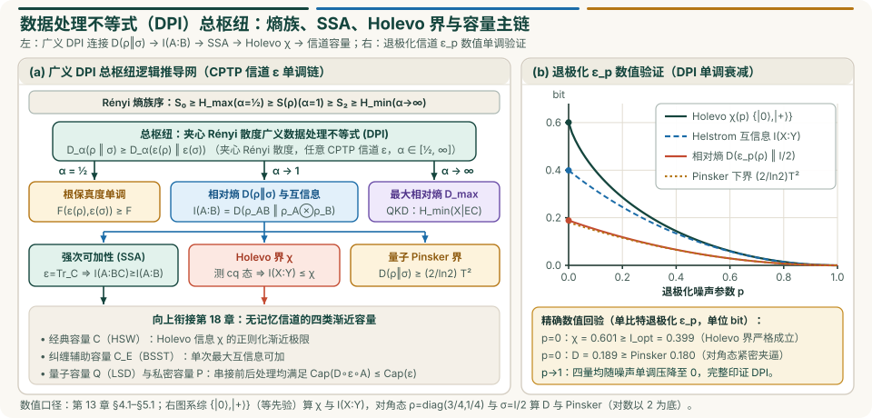
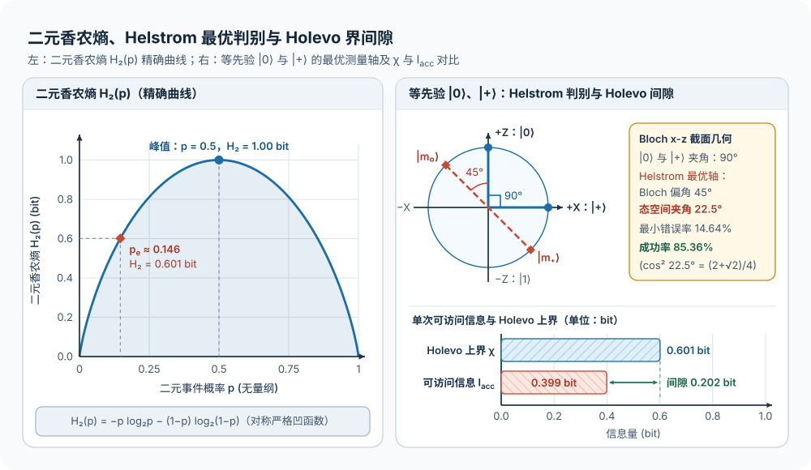

13｜量子信息量度：熵、距离与可提取信息
先修：第 03 章：多量子比特、纠缠与约化态 、第 05 章：混态、噪声与量子信道 。阅读路线：必读 ★ 第 1 节、第 2.1–2.2 节、第 2.4 节、第 3.1–3.2 节、第 3.4 节、第 4.1 节、第 5 节与第 8 节；进阶选读 ☆ 第 2.3 节（状态合并）、第 2.5 节（三元互信息）、第 3.3 节（无歧义判别）、第 4.2–4.3 节（夹心 Rényi DPI 与 Petz 恢复）、第 6 节（无广播与量子马尔可夫链）及第 7 节（单次最小/最大熵与有限长 QKD）。
第五篇先问三个可以算的问题。一个量子态有多不确定？给出一个样本时，两种候选态能分得多准？系统经过带噪信道后，这份可区分程度怎样变化？本章由熵、距离和数据处理不等式一路推到压缩、经典信息提取和有限长的安全证明。第 12 章 会把这些量用到密钥分发与网络中的纠缠交换。
全章核心信息量度速查（按需展开）
1. 不确定性与无损压缩：Shannon 熵、von Neumann 熵与 Schumacher 压缩
1.1 经典 Shannon 熵与二元熵
想象你在等一台随机信源吐出一个离散符号 X X X 1 / 4 1/4 1/4 1 / 2 1/2 1/2 1 1 1
为了让两个独立事件同时发生时的总意外程度等于各自意外程度之和，克劳德·香农（Claude Shannon, 1948）用负的以 2 2 2 x x x 自信息 （意外程度）为 − log 2 p ( x ) -\log_2 p(x) − log 2 p ( x ) 比特 （bit）：
p = 1 p = 1 p = 1 − log 2 1 = 0 bit -\log_2 1 = 0\text{ bit} − log 2 1 = 0 bit p = 1 / 2 p = 1/2 p = 1/2 − log 2 ( 1 / 2 ) = 1 bit -\log_2(1/2) = 1\text{ bit} − log 2 ( 1/2 ) = 1 bit p = 1 / 4 p = 1/4 p = 1/4 − log 2 ( 1 / 4 ) = 2 bit -\log_2(1/4) = 2\text{ bit} − log 2 ( 1/4 ) = 2 bit
前面的负号是因为 0 < p ≤ 1 0 < p \le 1 0 < p ≤ 1 log 2 p ≤ 0 \log_2 p \le 0 log 2 p ≤ 0 x x x X ∼ { p ( x ) } X \sim \{p(x)\} X ∼ { p ( x )} Shannon 熵 ：
H ( X ) = − ∑ x p ( x ) log 2 p ( x ) ,
H(X) = -\sum_x p(x)\log_2 p(x),
H ( X ) = − x ∑ p ( x ) log 2 p ( x ) , 其中对零概率项按极限 lim p → 0 + p log 2 p = 0 \lim_{p\to 0^+} p\log_2 p = 0 lim p → 0 + p log 2 p = 0 0 log 2 0 = 0 0\log_2 0 = 0 0 log 2 0 = 0 H ( X ) bit H(X)\text{ bit} H ( X ) bit
全书最常碰到的特例是只有两个结果 X ∈ { 0 , 1 } X \in \{0,1\} X ∈ { 0 , 1 } p p p 1 − p 1-p 1 − p 0 ≤ p ≤ 1 0 \le p \le 1 0 ≤ p ≤ 1 二元香农熵 （本书正文记作 h 2 ( p ) h_2(p) h 2 ( p ) H 2 ( p ) H_2(p) H 2 ( p )
h 2 ( p ) = − p log 2 p − ( 1 − p ) log 2 ( 1 − p ) .
h_2(p) = -p\log_2 p - (1-p)\log_2(1-p).
h 2 ( p ) = − p log 2 p − ( 1 − p ) log 2 ( 1 − p ) . 我们来亲手算三个典型点：
p = 0 p = 0 p = 0 p = 1 p = 1 p = 1 h 2 ( 0 ) = h 2 ( 1 ) = 0 bit h_2(0) = h_2(1) = 0\text{ bit} h 2 ( 0 ) = h 2 ( 1 ) = 0 bit
p = 1 / 2 p = 1/2 p = 1/2
h 2 ( 1 / 2 ) = − 1 2 log 2 1 2 − 1 2 log 2 1 2 = 1 2 ⋅ 1 + 1 2 ⋅ 1 = 1 bit .
h_2(1/2) = -\frac{1}{2}\log_2\frac{1}{2} - \frac{1}{2}\log_2\frac{1}{2} = \frac{1}{2}\cdot 1 + \frac{1}{2}\cdot 1 = 1\text{ bit}.
h 2 ( 1/2 ) = − 2 1 log 2 2 1 − 2 1 log 2 2 1 = 2 1 ⋅ 1 + 2 1 ⋅ 1 = 1 bit . p = 1 / 4 p = 1/4 p = 1/4 − log 2 ( 1 / 4 ) = 2 -\log_2(1/4) = 2 − log 2 ( 1/4 ) = 2
− log 2 3 4 = log 2 4 − log 2 3 = 2 − log 2 3 ≈ 2 − 1.584963 = 0.415037.
-\log_2\frac{3}{4} = \log_2 4 - \log_2 3 = 2 - \log_2 3 \approx 2 - 1.584963 = 0.415037.
− log 2 4 3 = log 2 4 − log 2 3 = 2 − log 2 3 ≈ 2 − 1.584963 = 0.415037. 按概率加权相加：
h 2 ( 1 / 4 ) = 1 4 × 2 + 3 4 × 0.415037 ≈ 0.500000 + 0.311278 = 0.811278 bit .
h_2(1/4) = \frac{1}{4}\times 2 + \frac{3}{4}\times 0.415037 \approx 0.500000 + 0.311278 = 0.811278\text{ bit}.
h 2 ( 1/4 ) = 4 1 × 2 + 4 3 × 0.415037 ≈ 0.500000 + 0.311278 = 0.811278 bit .
顺手厘清一个常见误解：熵衡量的是概率分布的分散程度，和结果标签的数值大小毫无关系 。即便一个确定事件输出的是 10 100 10^{100} 1 0 100 1 1 1 0 0 0 0.811 bit 0.811\text{ bit} 0.811 bit 0.811 0.811 0.811
1.2 量子 von Neumann 熵与核心性质
转到量子世界后，麻烦来了：同一个量子态在不同测量基下会吐出完全不同的概率分布。例如纯态 ∣ + ⟩ = ( ∣ 0 ⟩ + ∣ 1 ⟩ ) / 2 |+\rangle = (|0\rangle + |1\rangle)/\sqrt 2 ∣ + ⟩ = ( ∣0 ⟩ + ∣1 ⟩) / 2 X X X + 1 +1 + 1 0 0 0 Z Z Z 1 / 2 1/2 1/2 0 0 0 1 1 1 1 bit 1\text{ bit} 1 bit
约翰·冯·诺依曼（John von Neumann, 1927/1932）给出的办法极其干脆：把密度矩阵 ρ \rho ρ 。在 d d d H \mathcal H H ρ \rho ρ ρ † = ρ \rho^\dagger = \rho ρ † = ρ ρ ⪰ 0 \rho \succeq 0 ρ ⪰ 0 Tr ρ = 1 \operatorname{Tr}\rho = 1 Tr ρ = 1
ρ = ∑ j = 1 d λ j ∣ j ⟩ ⟨ j ∣ , λ j ≥ 0 , ∑ j = 1 d λ j = 1 ,
\rho = \sum_{j=1}^d \lambda_j |j\rangle\langle j|,
\qquad \lambda_j \ge 0,\quad \sum_{j=1}^d \lambda_j = 1,
ρ = j = 1 ∑ d λ j ∣ j ⟩ ⟨ j ∣ , λ j ≥ 0 , j = 1 ∑ d λ j = 1 , 其中 { ∣ j ⟩ } \{|j\rangle\} { ∣ j ⟩} { λ j } \{\lambda_j\} { λ j } von Neumann 熵 ：
S ( ρ ) = − Tr ( ρ log 2 ρ ) = − ∑ j = 1 d λ j log 2 λ j ∈ [ 0 , log 2 d ] .
S(\rho) = -\operatorname{Tr}\bigl(\rho\log_2\rho\bigr) = -\sum_{j=1}^d \lambda_j\log_2\lambda_j \in [0,\ \log_2 d].
S ( ρ ) = − Tr ( ρ log 2 ρ ) = − j = 1 ∑ d λ j log 2 λ j ∈ [ 0 , log 2 d ] . 注意：矩阵对数 log 2 ρ \log_2\rho log 2 ρ log 2 λ j \log_2\lambda_j log 2 λ j 。同样沿用 0 log 2 0 = 0 0\log_2 0 = 0 0 log 2 0 = 0
von Neumann 熵在量子信息论里拥有一组干净利落的核心性质：
酉不变性 ：对任意酉算符 U U U S ( U ρ U † ) = S ( ρ ) S(U\rho U^\dagger) = S(\rho) S ( U ρ U † ) = S ( ρ )
极值边界 ：S ( ρ ) = 0 S(\rho) = 0 S ( ρ ) = 0 ρ \rho ρ 1 1 1 0 0 0 S ( ρ ) = log 2 d S(\rho) = \log_2 d S ( ρ ) = log 2 d ρ = I / d \rho = I/d ρ = I / d
凹性 （Concavity）：把若干态按概率 { p x } \{p_x\} { p x }
S ( ∑ x p x ρ x ) ≥ ∑ x p x S ( ρ x ) .
S\!\left(\sum_x p_x \rho_x\right) \ge \sum_x p_x S(\rho_x).
S ( x ∑ p x ρ x ) ≥ x ∑ p x S ( ρ x ) . 投影测量不减熵 ：对任意完备正交投影测量 { P k } \{P_k\} { P k } ∑ k P k = I \sum_k P_k = I ∑ k P k = I ρ ′ = ∑ k P k ρ P k \rho' = \sum_k P_k\rho P_k ρ ′ = ∑ k P k ρ P k S ( ρ ′ ) ≥ S ( ρ ) S(\rho') \ge S(\rho) S ( ρ ′ ) ≥ S ( ρ ) ρ \rho ρ ρ ′ = ρ \rho' = \rho ρ ′ = ρ ∣ + ⟩ |+\rangle ∣ + ⟩ Z Z Z 0 0 0 1 1 1
有限维连续性与无限维边界 ：在有限维 d ≥ 2 d \ge 2 d ≥ 2 T ( ρ , σ ) = ε T(\rho,\sigma) = \varepsilon T ( ρ , σ ) = ε ∣ S ( ρ ) − S ( σ ) ∣ ≤ ε log 2 ( d − 1 ) + h 2 ( ε ) |S(\rho)-S(\sigma)| \le \varepsilon\log_2(d-1) + h_2(\varepsilon) ∣ S ( ρ ) − S ( σ ) ∣ ≤ ε log 2 ( d − 1 ) + h 2 ( ε ) d ≥ 2 d \ge 2 d ≥ 2 log 2 ( d − 1 ) \log_2(d-1) log 2 ( d − 1 ) 第 18 章 ）。
算例：三个单比特态的 von Neumann 熵
纯态 ∣ + ⟩ ⟨ + ∣ = 1 2 [ 1 1 1 1 ] |+\rangle\langle +| = \frac{1}{2}\begin{bmatrix}1&1\\1&1\end{bmatrix} ∣ + ⟩ ⟨ + ∣ = 2 1 [ 1 1 1 1 ] ：矩阵秩为 1 1 1 1 1 1 1 1 1 0 0 0
S ( ∣ + ⟩ ⟨ + ∣ ) = − 1 log 2 1 − 0 log 2 0 = 0 bit .
S(|+\rangle\langle +|) = -1\log_2 1 - 0\log_2 0 = 0\text{ bit}.
S ( ∣ + ⟩ ⟨ + ∣ ) = − 1 log 2 1 − 0 log 2 0 = 0 bit . 尽管如此，在计算基 { ∣ 0 ⟩ , ∣ 1 ⟩ } \{|0\rangle,|1\rangle\} { ∣0 ⟩ , ∣1 ⟩} ∣ + ⟩ |+\rangle ∣ + ⟩ 1 / 2 1/2 1/2
最大混态 I / 2 = diag ( 1 / 2 , 1 / 2 ) I/2 = \operatorname{diag}(1/2, 1/2) I /2 = diag ( 1/2 , 1/2 ) ：特征值直接读作 1 / 2 , 1 / 2 1/2, 1/2 1/2 , 1/2
S ( I / 2 ) = h 2 ( 1 / 2 ) = 1 bit .
S(I/2) = h_2(1/2) = 1\text{ bit}.
S ( I /2 ) = h 2 ( 1/2 ) = 1 bit . 偏置对角混态 ρ = diag ( 3 / 4 , 1 / 4 ) \rho = \operatorname{diag}(3/4, 1/4) ρ = diag ( 3/4 , 1/4 ) ：已是对角矩阵，特征值为 3 / 4 3/4 3/4 1 / 4 1/4 1/4
S ( ρ ) = h 2 ( 1 / 4 ) ≈ 0.811278 bit .
S(\rho) = h_2(1/4) \approx 0.811278\text{ bit}.
S ( ρ ) = h 2 ( 1/4 ) ≈ 0.811278 bit .
工程衔接：从有限测量估算纯度与熵时的非线性偏差
在真实实验里，我们只能从有限次测量重构态估计 ρ ^ \widehat\rho ρ 第 16 章 的随机 Pauli 经典阴影单次快照 ρ ^ s = 3 ∣ 0 ⟩ ⟨ 0 ∣ − I = diag ( 2 , − 1 ) \hat\rho_s = 3|0\rangle\langle 0| - I = \operatorname{diag}(2, -1) ρ ^ s = 3∣0 ⟩ ⟨ 0∣ − I = diag ( 2 , − 1 ) 1 1 1 ρ \rho ρ log 2 ρ ^ s \log_2\hat\rho_s log 2 ρ ^ s N N N ρ ^ \widehat\rho ρ Tr ( ρ ^ 2 ) \operatorname{Tr}(\widehat\rho^2) Tr ( ρ 2 ) ∣ 0 ⟩ |0\rangle ∣0 ⟩ N N N 1 + 1 / N 1 + 1/N 1 + 1/ N 1 1 1 U U U S ( ρ ) S(\rho) S ( ρ ) U U U 第 16 章 与第 15 章 （离线穷举校验见章末实验入口）。
1.3 Schumacher 量子数据压缩与典型子空间
经典信息论中，Shannon 熵 H ( X ) H(X) H ( X ) n n n H ( X ) H(X) H ( X ) S ( ρ ) S(\rho) S ( ρ )
设纯态信源 S = { p x , ∣ ψ x ⟩ } \mathscr S=\{p_x,|\psi_x\rangle\} S = { p x , ∣ ψ x ⟩} p x p_x p x H ( X ) H(X) H ( X ) 2 n 2^n 2 n
严格定义与 Schumacher 压缩定理（1995） ：先写出单份信源的平均密度矩阵及其谱分解
ρ = ∑ x p x ∣ ψ x ⟩ ⟨ ψ x ∣ = ∑ j λ j ∣ e j ⟩ ⟨ e j ∣ .
\rho = \sum_x p_x |\psi_x\rangle\langle\psi_x| = \sum_j \lambda_j |e_j\rangle\langle e_j|.
ρ = x ∑ p x ∣ ψ x ⟩ ⟨ ψ x ∣ = j ∑ λ j ∣ e j ⟩ ⟨ e j ∣. 连续发射 n n n ρ ⊗ n = ∑ j 1 ⋯ j n λ j 1 ⋯ λ j n ∣ e j 1 ⋯ e j n ⟩ ⟨ e j 1 ⋯ e j n ∣ \rho^{\otimes n} = \sum_{j_1\cdots j_n} \lambda_{j_1}\cdots\lambda_{j_n}\,|e_{j_1}\cdots e_{j_n}\rangle\langle e_{j_1}\cdots e_{j_n}| ρ ⊗ n = ∑ j 1 ⋯ j n λ j 1 ⋯ λ j n ∣ e j 1 ⋯ e j n ⟩ ⟨ e j 1 ⋯ e j n ∣ δ > 0 \delta > 0 δ > 0 δ \delta δ T n , δ \mathcal T_{n,\delta} T n , δ
2 − n ( S ( ρ ) + δ ) ≤ λ j 1 λ j 2 ⋯ λ j n ≤ 2 − n ( S ( ρ ) − δ )
2^{-n\bigl(S(\rho)+\delta\bigr)} \;\le\; \lambda_{j_1}\lambda_{j_2}\cdots\lambda_{j_n} \;\le\; 2^{-n\bigl(S(\rho)-\delta\bigr)}
2 − n ( S ( ρ ) + δ ) ≤ λ j 1 λ j 2 ⋯ λ j n ≤ 2 − n ( S ( ρ ) − δ ) 的乘积特征基 ∣ e j 1 ⋯ e j n ⟩ |e_{j_1}\cdots e_{j_n}\rangle ∣ e j 1 ⋯ e j n ⟩ Π n , δ \Pi_{n,\delta} Π n , δ n n n ε , δ > 0 \varepsilon, \delta > 0 ε , δ > 0 n n n
概率高度集中 ：Tr ( Π n , δ ρ ⊗ n ) ≥ 1 − ε \operatorname{Tr}(\Pi_{n,\delta}\rho^{\otimes n}) \ge 1 - \varepsilon Tr ( Π n , δ ρ ⊗ n ) ≥ 1 − ε 维数指数收缩 ：( 1 − ε ) 2 n ( S ( ρ ) − δ ) ≤ dim T n , δ ≤ 2 n ( S ( ρ ) + δ ) (1-\varepsilon)\,2^{n(S(\rho)-\delta)} \le \dim\mathcal T_{n,\delta} \le 2^{n(S(\rho)+\delta)} ( 1 − ε ) 2 n ( S ( ρ ) − δ ) ≤ dim T n , δ ≤ 2 n ( S ( ρ ) + δ )
由此立刻拼出极简的压缩—解压协议 ：
压缩端。 测量 { Π n , δ , I − Π n , δ } \{\Pi_{n,\delta},I-\Pi_{n,\delta}\} { Π n , δ , I − Π n , δ } m = ⌈ n ( S ( ρ ) + δ ) ⌉ m=\lceil n(S(\rho)+\delta)\rceil m = ⌈ n ( S ( ρ ) + δ )⌉ S ( ρ ) + δ < 1 S(\rho)+\delta<1 S ( ρ ) + δ < 1 1 1 1 n n n 解压端。 把通过和替换分支的编码嵌回原空间。综合信道为 E c o m p ( σ ) = Π n , δ σ Π n , δ + Tr [ ( I − Π n , δ ) σ ] ∣ ϕ 0 ⟩ ⟨ ϕ 0 ∣ \mathcal E_{\mathrm{comp}}(\sigma)=\Pi_{n,\delta}\sigma\Pi_{n,\delta}+\operatorname{Tr}[(I-\Pi_{n,\delta})\sigma]|\phi_0\rangle\langle\phi_0| E comp ( σ ) = Π n , δ σ Π n , δ + Tr [( I − Π n , δ ) σ ] ∣ ϕ 0 ⟩ ⟨ ϕ 0 ∣ ∣ ϕ 0 ⟩ |\phi_0\rangle ∣ ϕ 0 ⟩
接受率 1 − ε 1-\varepsilon 1 − ε 0.9 , 0.1 0.9,0.1 0.9 , 0.1 ∣ 0 ⟩ , ∣ 1 ⟩ |0\rangle,|1\rangle ∣0 ⟩ , ∣1 ⟩ S = h 2 ( 0.1 ) ≈ 0.4690 S=h_2(0.1)\approx0.4690 S = h 2 ( 0.1 ) ≈ 0.4690 δ = 0.1 \delta=0.1 δ = 0.1 − log 2 0.9 ≈ 0.1520 -\log_2 0.9\approx0.1520 − log 2 0.9 ≈ 0.1520 0.9 n 0.9^n 0. 9 n
三个保真度口径。 令 ∣ ψ x n ⟩ |\psi_{x^n}\rangle ∣ ψ x n ⟩ σ x n \sigma_{x^n} σ x n f x n = ⟨ ψ x n ∣ σ x n ∣ ψ x n ⟩ f_{x^n}=\langle\psi_{x^n}|\sigma_{x^n}|\psi_{x^n}\rangle f x n = ⟨ ψ x n ∣ σ x n ∣ ψ x n ⟩ ∑ x n p x n f x n \sum_{x^n}p_{x^n} f_{x^n} ∑ x n p x n f x n ∑ x n p x n f x n \sum_{x^n}p_{x^n}\sqrt{f_{x^n}} ∑ x n p x n f x n ρ ⊗ n \rho^{\otimes n} ρ ⊗ n R r e f R_{\mathrm{ref}} R ref ∣ Ψ ⟩ |\Psi\rangle ∣Ψ ⟩ ∣ Ψ ⟩ ⟨ Ψ ∣ |\Psi\rangle\langle\Psi| ∣Ψ ⟩ ⟨ Ψ∣ ( i d R r e f ⊗ E c o m p ) ( ∣ Ψ ⟩ ⟨ Ψ ∣ ) (\mathrm{id}_{R_{\mathrm{ref}}}\otimes\mathcal E_{\mathrm{comp}})(|\Psi\rangle\langle\Psi|) ( id R ref ⊗ E comp ) ( ∣Ψ ⟩ ⟨ Ψ∣ ) F e F_e F e
渐近极限。 对独立同分布纯态源、固定最大压缩空间维数 2 m 2^m 2 m r = m / n > S ( ρ ) r=m/n>S(\rho) r = m / n > S ( ρ ) F e F_e F e r < S ( ρ ) r<S(\rho) r < S ( ρ ) F e 2 F_e^2 F e 2 S ( ρ ) S(\rho) S ( ρ ) H ( X ) H(X) H ( X ) Schumacher 1995 · Winter 定理 I.19
8 维具体手算例：把 { ∣ 0 ⟩ , ∣ + ⟩ } ⊗ 3 \{|0\rangle, |+\rangle\}^{\otimes 3} { ∣0 ⟩ , ∣ + ⟩ } ⊗ 3
空谈 n → ∞ n \to \infty n → ∞ n = 3 n = 3 n = 3 2 3 = 8 2^3 = 8 2 3 = 8
设信源每次以等概率 1 / 2 1/2 1/2 ∣ 0 ⟩ |0\rangle ∣0 ⟩ ∣ + ⟩ |+\rangle ∣ + ⟩ H ( X ) = 1 bit H(X) = 1\text{ bit} H ( X ) = 1 bit ρ \rho ρ
ρ = 1 2 ∣ 0 ⟩ ⟨ 0 ∣ + 1 2 ∣ + ⟩ ⟨ + ∣ = 1 2 [ 1 0 0 0 ] + 1 2 [ 1 / 2 1 / 2 1 / 2 1 / 2 ] = [ 3 / 4 1 / 4 1 / 4 1 / 4 ] .
\rho = \frac{1}{2}|0\rangle\langle 0| + \frac{1}{2}|+\rangle\langle +|
= \frac{1}{2}\begin{bmatrix}1 & 0\\ 0 & 0\end{bmatrix}
+ \frac{1}{2}\begin{bmatrix}1/2 & 1/2\\ 1/2 & 1/2\end{bmatrix}
= \begin{bmatrix}3/4 & 1/4\\ 1/4 & 1/4\end{bmatrix}.
ρ = 2 1 ∣0 ⟩ ⟨ 0∣ + 2 1 ∣ + ⟩ ⟨ + ∣ = 2 1 [ 1 0 0 0 ] + 2 1 [ 1/2 1/2 1/2 1/2 ] = [ 3/4 1/4 1/4 1/4 ] . 算迹与行列式：Tr ρ = 3 4 + 1 4 = 1 \operatorname{Tr}\rho = \frac{3}{4} + \frac{1}{4} = 1 Tr ρ = 4 3 + 4 1 = 1 det ρ = 3 16 − 1 16 = 1 8 \det\rho = \frac{3}{16} - \frac{1}{16} = \frac{1}{8} det ρ = 16 3 − 16 1 = 8 1 λ 2 − λ + 1 8 = 0 \lambda^2 - \lambda + \frac{1}{8} = 0 λ 2 − λ + 8 1 = 0 1 − 1 2 = 1 2 1 - \frac{1}{2} = \frac{1}{2} 1 − 2 1 = 2 1 { ∣ e + ⟩ , ∣ e − ⟩ } \{|e_+\rangle, |e_-\rangle\} { ∣ e + ⟩ , ∣ e − ⟩}
λ + = 1 + 1 / 2 2 = cos 2 π 8 ≈ 0.853553 , λ − = 1 − 1 / 2 2 = sin 2 π 8 ≈ 0.146447 ,
\lambda_+ = \frac{1 + 1/\sqrt 2}{2} = \cos^2\frac{\pi}{8} \approx 0.853553, \qquad
\lambda_- = \frac{1 - 1/\sqrt 2}{2} = \sin^2\frac{\pi}{8} \approx 0.146447,
λ + = 2 1 + 1/ 2 = cos 2 8 π ≈ 0.853553 , λ − = 2 1 − 1/ 2 = sin 2 8 π ≈ 0.146447 , ∣ e + ⟩ = cos π 8 ∣ 0 ⟩ + sin π 8 ∣ 1 ⟩ , ∣ e − ⟩ = − sin π 8 ∣ 0 ⟩ + cos π 8 ∣ 1 ⟩ .
|e_+\rangle = \cos\frac{\pi}{8}|0\rangle + \sin\frac{\pi}{8}|1\rangle, \qquad
|e_-\rangle = -\sin\frac{\pi}{8}|0\rangle + \cos\frac{\pi}{8}|1\rangle.
∣ e + ⟩ = cos 8 π ∣0 ⟩ + sin 8 π ∣1 ⟩ , ∣ e − ⟩ = − sin 8 π ∣0 ⟩ + cos 8 π ∣1 ⟩ . （顺手检查对称性：∣ ⟨ 0 ∣ e + ⟩ ∣ 2 = cos 2 ( π / 8 ) = λ + |\langle 0|e_+\rangle|^2 = \cos^2(\pi/8) = \lambda_+ ∣ ⟨ 0∣ e + ⟩ ∣ 2 = cos 2 ( π /8 ) = λ + ⟨ + ∣ e + ⟩ = 1 2 ( cos π 8 + sin π 8 ) = cos π 8 \langle +|e_+\rangle = \frac{1}{\sqrt 2}(\cos\frac{\pi}{8}+\sin\frac{\pi}{8}) = \cos\frac{\pi}{8} ⟨ + ∣ e + ⟩ = 2 1 ( cos 8 π + sin 8 π ) = cos 8 π ∣ ⟨ + ∣ e + ⟩ ∣ 2 = λ + |\langle +|e_+\rangle|^2 = \lambda_+ ∣ ⟨ + ∣ e + ⟩ ∣ 2 = λ +
S ( ρ ) = h 2 ( λ + ) ≈ − 0.853553 log 2 ( 0.853553 ) − 0.146447 log 2 ( 0.146447 ) ≈ 0.600876 bit < 1 bit .
S(\rho) = h_2(\lambda_+) \approx -0.853553\log_2(0.853553) - 0.146447\log_2(0.146447) \approx 0.600876\text{ bit} < 1\text{ bit}.
S ( ρ ) = h 2 ( λ + ) ≈ − 0.853553 log 2 ( 0.853553 ) − 0.146447 log 2 ( 0.146447 ) ≈ 0.600876 bit < 1 bit . 现在一次打包 n = 3 n = 3 n = 3 8 8 8 ρ ⊗ 3 \rho^{\otimes 3} ρ ⊗ 3 { ∣ e ± e ± e ± ⟩ } \{|e_\pm e_\pm e_\pm\rangle\} { ∣ e ± e ± e ± ⟩} ∣ e − ⟩ |e_-\rangle ∣ e − ⟩
验算归一化：0.621859 + 0.320083 + 0.054917 + 0.003141 = 1.000000 0.621859 + 0.320083 + 0.054917 + 0.003141 = 1.000000 0.621859 + 0.320083 + 0.054917 + 0.003141 = 1.000000
我们的目标是把 3 3 3 m = 2 m = 2 m = 2 2 / 3 ≈ 0.6667 > S ( ρ ) ≈ 0.6009 2/3 \approx 0.6667 > S(\rho) \approx 0.6009 2/3 ≈ 0.6667 > S ( ρ ) ≈ 0.6009 2 2 2 2 2 = 4 2^2 = 4 2 2 = 4 4 4 4 0 0 0 1 1 1 + + + 1 1 1 3 3 3 Π t o p 4 \Pi_{\mathrm{top4}} Π top4
p t y p = Tr ( Π t o p 4 ρ ⊗ 3 ) = λ + 3 + 3 λ + 2 λ − ≈ 0.621859 + 0.320083 = 0.941942 ( 94.19 % ) .
p_{\mathrm{typ}} = \operatorname{Tr}\bigl(\Pi_{\mathrm{top4}}\,\rho^{\otimes 3}\bigr) = \lambda_+^3 + 3\lambda_+^2\lambda_- \approx 0.621859 + 0.320083 = 0.941942 \quad (94.19\%).
p typ = Tr ( Π top4 ρ ⊗ 3 ) = λ + 3 + 3 λ + 2 λ − ≈ 0.621859 + 0.320083 = 0.941942 ( 94.19% ) . 仅占 5.81 % 5.81\% 5.81% ∣ ϕ 0 ⟩ = ∣ e + e + e + ⟩ |\phi_0\rangle = |e_+e_+e_+\rangle ∣ ϕ 0 ⟩ = ∣ e + e + e + ⟩
平均码字保真度 （对全部 2 3 = 8 2^3 = 8 2 3 = 8 ∣ ψ x ⟩ ∈ { ∣ 0 ⟩ , ∣ + ⟩ } ⊗ 3 |\psi_x\rangle \in \{|0\rangle, |+\rangle\}^{\otimes 3} ∣ ψ x ⟩ ∈ { ∣0 ⟩ , ∣ + ⟩ } ⊗ 3 ∣ ⟨ 0 ∣ e + ⟩ ∣ 2 = ∣ ⟨ + ∣ e + ⟩ ∣ 2 = λ + |\langle 0|e_+\rangle|^2 = |\langle +|e_+\rangle|^2 = \lambda_+ ∣ ⟨ 0∣ e + ⟩ ∣ 2 = ∣ ⟨ + ∣ e + ⟩ ∣ 2 = λ + p t y p p_{\mathrm{typ}} p typ ∣ e + e + e + ⟩ |e_+e_+e_+\rangle ∣ e + e + e + ⟩ λ + 3 \lambda_+^3 λ + 3
f ˉ = ⟨ ψ x ∣ E c o m p ( ∣ ψ x ⟩ ⟨ ψ x ∣ ) ∣ ψ x ⟩ = p t y p 2 + λ + 3 ( 1 − p t y p ) ≈ 0.887254 + 0.621859 × 0.058058 ≈ 0.923358 ,
\bar f = \langle\psi_x|\mathcal E_{\mathrm{comp}}(|\psi_x\rangle\langle\psi_x|)|\psi_x\rangle
= p_{\mathrm{typ}}^2 + \lambda_+^3(1 - p_{\mathrm{typ}})
\approx 0.887254 + 0.621859 \times 0.058058
\approx 0.923358,
f ˉ = ⟨ ψ x ∣ E comp ( ∣ ψ x ⟩ ⟨ ψ x ∣ ) ∣ ψ x ⟩ = p typ 2 + λ + 3 ( 1 − p typ ) ≈ 0.887254 + 0.621859 × 0.058058 ≈ 0.923358 , 本例每条码字的平方重叠相同，故平均根保真度 F ˉ = f ˉ ≈ 0.960915 \bar F=\sqrt{\bar f}\approx0.960915 F ˉ = f ˉ ≈ 0.960915
纠缠保真度 （纯化参考系统口径，检验压缩是否完整保留信源与外界的纠缠）：写出综合信道的 Kraus 算符 K 0 = Π t o p 4 K_0 = \Pi_{\mathrm{top4}} K 0 = Π top4 K j = ∣ e + e + e + ⟩ ⟨ e j ∣ K_j = |e_+e_+e_+\rangle\langle e_j| K j = ∣ e + e + e + ⟩ ⟨ e j ∣ j j j ∣ e j ⟩ |e_j\rangle ∣ e j ⟩ ∣ e + e + e + ⟩ |e_+e_+e_+\rangle ∣ e + e + e + ⟩ Tr ( ρ ⊗ 3 K j ) = λ + 3 ⟨ e j ∣ e + e + e + ⟩ = 0 \operatorname{Tr}(\rho^{\otimes 3}K_j) = \lambda_+^3\langle e_j|e_+e_+e_+\rangle = 0 Tr ( ρ ⊗ 3 K j ) = λ + 3 ⟨ e j ∣ e + e + e + ⟩ = 0 K 0 K_0 K 0 F e 2 = ∣ Tr ( ρ ⊗ 3 Π t o p 4 ) ∣ 2 = p t y p 2 ≈ 0.887254 F_e^2 = |\operatorname{Tr}(\rho^{\otimes 3}\Pi_{\mathrm{top4}})|^2 = p_{\mathrm{typ}}^2 \approx 0.887254 F e 2 = ∣ Tr ( ρ ⊗ 3 Π top4 ) ∣ 2 = p typ 2 ≈ 0.887254 F e = p t y p ≈ 0.9419 F_e = p_{\mathrm{typ}} \approx 0.9419 F e = p typ ≈ 0.9419 f ˉ ≥ F e 2 \bar f \ge F_e^2 f ˉ ≥ F e 2 0.9609 0.9609 0.9609 0.9419 0.9419 0.9419
鲜明反差对照 ：如果换成经典正交信源 { ∣ 0 ⟩ , ∣ 1 ⟩ } \{|0\rangle, |1\rangle\} { ∣0 ⟩ , ∣1 ⟩} S ( ρ ) = 1 bit S(\rho) = 1\text{ bit} S ( ρ ) = 1 bit ρ ⊗ 3 = I 8 / 8 \rho^{\otimes 3} = I_8/8 ρ ⊗ 3 = I 8 /8 1 / 8 = 0.125 1/8 = 0.125 1/8 = 0.125 4 / 8 = 50 % 4/8 = 50\% 4/8 = 50% F e = 0.50 F_e = 0.50 F e = 0.50 F e 2 = 0.25 F_e^2 = 0.25 F e 2 = 0.25 4 / 8 = 0.50 4/8 = 0.50 4/8 = 0.50
就地练习｜练 13-A（非正交信源的 n = 2 n=2 n = 2
设单比特量子信源等概率发射 ∣ 0 ⟩ |0\rangle ∣0 ⟩ ∣ ϕ ⟩ = 3 2 ∣ 0 ⟩ + 1 2 ∣ 1 ⟩ |\phi\rangle = \frac{\sqrt 3}{2}|0\rangle + \frac{1}{2}|1\rangle ∣ ϕ ⟩ = 2 3 ∣0 ⟩ + 2 1 ∣1 ⟩ ∣ ⟨ 0 ∣ ϕ ⟩ ∣ = 3 2 |\langle 0|\phi\rangle| = \frac{\sqrt 3}{2} ∣ ⟨ 0∣ ϕ ⟩ ∣ = 2 3 ρ \rho ρ λ ± \lambda_\pm λ ± S ( ρ ) S(\rho) S ( ρ ) n = 2 n = 2 n = 2 1 1 1 p t y p p_{\mathrm{typ}} p typ
参考核对 ：ρ = [ 7 / 8 3 / 8 3 / 8 1 / 8 ] \rho = \begin{bmatrix}7/8 & \sqrt 3/8\\ \sqrt 3/8 & 1/8\end{bmatrix} ρ = [ 7/8 3 /8 3 /8 1/8 ] 1 1 1 7 − 3 64 = 1 16 \frac{7 - 3}{64} = \frac{1}{16} 64 7 − 3 = 16 1 λ ± = 1 ± 3 / 2 2 ≈ 0.933013 , 0.066987 \lambda_\pm = \frac{1 \pm \sqrt 3/2}{2} \approx 0.933013,\ 0.066987 λ ± = 2 1 ± 3 /2 ≈ 0.933013 , 0.066987 S ( ρ ) = h 2 ( λ + ) ≈ 0.354579 bit S(\rho) = h_2(\lambda_+) \approx 0.354579\text{ bit} S ( ρ ) = h 2 ( λ + ) ≈ 0.354579 bit n = 2 n = 2 n = 2 λ + 2 ≈ 0.870513 \lambda_+^2 \approx 0.870513 λ + 2 ≈ 0.870513 λ + λ − = 1 / 16 = 0.062500 \lambda_+\lambda_- = 1/16 = 0.062500 λ + λ − = 1/16 = 0.062500 λ − 2 ≈ 0.004487 \lambda_-^2 \approx 0.004487 λ − 2 ≈ 0.004487 p t y p = λ + 2 + λ + λ − = λ + ( λ + + λ − ) = λ + ≈ 93.30 % p_{\mathrm{typ}} = \lambda_+^2 + \lambda_+\lambda_- = \lambda_+(\lambda_+ + \lambda_-) = \lambda_+ \approx 93.30\% p typ = λ + 2 + λ + λ − = λ + ( λ + + λ − ) = λ + ≈ 93.30% 2 → 1 2 \to 1 2 → 1 0.5 > 0.355 0.5 > 0.355 0.5 > 0.355 93.3 % 93.3\% 93.3%
2. 量子关联与负条件熵：三层态图景、状态合并与三元互信息
2.1 联合熵、条件熵与两体互信息
回到经典概率：若有两个离散随机变量 X , Y X,Y X , Y p ( x , y ) p(x,y) p ( x , y ) p ( x ) , p ( y ) p(x), p(y) p ( x ) , p ( y ) Y Y Y X X X 条件熵 ：
H ( X ∣ Y ) = H ( X , Y ) − H ( Y ) ≥ 0.
H(X\mid Y) = H(X,Y) - H(Y) \ge 0.
H ( X ∣ Y ) = H ( X , Y ) − H ( Y ) ≥ 0. 它永远非负——经典世界里，知道额外线索 Y Y Y X X X 0 0 0 Y Y Y X X X Y Y Y 经典互信息 ：
I ( X : Y ) = H ( X ) − H ( X ∣ Y ) = H ( X ) + H ( Y ) − H ( X , Y ) = ∑ x , y p ( x , y ) log 2 p ( x , y ) p ( x ) p ( y ) ≥ 0.
I(X:Y) = H(X) - H(X\mid Y) = H(X) + H(Y) - H(X,Y) = \sum_{x,y} p(x,y)\log_2\frac{p(x,y)}{p(x)p(y)} \ge 0.
I ( X : Y ) = H ( X ) − H ( X ∣ Y ) = H ( X ) + H ( Y ) − H ( X , Y ) = x , y ∑ p ( x , y ) log 2 p ( x ) p ( y ) p ( x , y ) ≥ 0. 当且仅当 X X X Y Y Y p ( x , y ) = p ( x ) p ( y ) p(x,y) = p(x)p(y) p ( x , y ) = p ( x ) p ( y ) I ( X : Y ) = 0 I(X:Y) = 0 I ( X : Y ) = 0
现在把这套结构搬到二分量子态 ρ A B ∈ L ( H A ⊗ H B ) \rho_{AB} \in L(\mathcal H_A \otimes \mathcal H_B) ρ A B ∈ L ( H A ⊗ H B ) ρ A = Tr B ρ A B \rho_A = \operatorname{Tr}_B\rho_{AB} ρ A = Tr B ρ A B ρ B = Tr A ρ A B \rho_B = \operatorname{Tr}_A\rho_{AB} ρ B = Tr A ρ A B
S ( A ) = S ( ρ A ) , S ( B ) = S ( ρ B ) , S ( A B ) = S ( ρ A B ) .
S(A) = S(\rho_A),
\qquad
S(B) = S(\rho_B),
\qquad
S(AB) = S(\rho_{AB}).
S ( A ) = S ( ρ A ) , S ( B ) = S ( ρ B ) , S ( A B ) = S ( ρ A B ) . 仿照经典公式，定义量子条件熵 与量子互信息 ：
S ( A ∣ B ) = S ( A B ) − S ( B ) ,
S(A\mid B) = S(AB) - S(B),
S ( A ∣ B ) = S ( A B ) − S ( B ) , I ( A : B ) = S ( A ) + S ( B ) − S ( A B ) = S ( A ) − S ( A ∣ B ) .
I(A:B) = S(A) + S(B) - S(AB) = S(A) - S(A\mid B).
I ( A : B ) = S ( A ) + S ( B ) − S ( A B ) = S ( A ) − S ( A ∣ B ) . 量子互信息 I ( A : B ) I(A:B) I ( A : B ) A A A B B B 全部总关联 （经典关联加量子关联）一网打尽。但量子条件熵 S ( A ∣ B ) S(A\mid B) S ( A ∣ B ) 它可以严格小于零 ！
算例对比：Bell 纠缠态 vs 经典相关混态
情形一：Bell 态 ∣ Φ + ⟩ A B = 1 2 ( ∣ 00 ⟩ + ∣ 11 ⟩ ) |\Phi^+\rangle_{AB} = \frac{1}{\sqrt 2}(|00\rangle + |11\rangle) ∣ Φ + ⟩ A B = 2 1 ( ∣00 ⟩ + ∣11 ⟩)
先把完整密度矩阵按四项展开（基序遵循全书约定 ∣ 00 ⟩ , ∣ 01 ⟩ , ∣ 10 ⟩ , ∣ 11 ⟩ |00\rangle,|01\rangle,|10\rangle,|11\rangle ∣00 ⟩ , ∣01 ⟩ , ∣10 ⟩ , ∣11 ⟩
ρ A B = ∣ Φ + ⟩ ⟨ Φ + ∣ = 1 2 ( ∣ 00 ⟩ ⟨ 00 ∣ + ∣ 00 ⟩ ⟨ 11 ∣ + ∣ 11 ⟩ ⟨ 00 ∣ + ∣ 11 ⟩ ⟨ 11 ∣ ) .
\rho_{AB} = |\Phi^+\rangle\langle\Phi^+|
= \frac{1}{2}\Bigl(|00\rangle\langle 00| + |00\rangle\langle 11| + |11\rangle\langle 00| + |11\rangle\langle 11|\Bigr).
ρ A B = ∣ Φ + ⟩ ⟨ Φ + ∣ = 2 1 ( ∣00 ⟩ ⟨ 00∣ + ∣00 ⟩ ⟨ 11∣ + ∣11 ⟩ ⟨ 00∣ + ∣11 ⟩ ⟨ 11∣ ) . 对子系统 B B B Tr B ( ∣ i j ⟩ ⟨ k ℓ ∣ ) = δ j ℓ ∣ i ⟩ ⟨ k ∣ \operatorname{Tr}_B(|ij\rangle\langle k\ell|) = \delta_{j\ell}|i\rangle\langle k| Tr B ( ∣ ij ⟩ ⟨ k ℓ ∣ ) = δ j ℓ ∣ i ⟩ ⟨ k ∣ B B B
ρ A = Tr B ρ A B = 1 2 ( ∣ 0 ⟩ ⟨ 0 ∣ + 0 + 0 + ∣ 1 ⟩ ⟨ 1 ∣ ) = I 2 .
\rho_A = \operatorname{Tr}_B\rho_{AB}
= \frac{1}{2}\bigl(|0\rangle\langle 0| + 0 + 0 + |1\rangle\langle 1|\bigr) = \frac{I}{2}.
ρ A = Tr B ρ A B = 2 1 ( ∣0 ⟩ ⟨ 0∣ + 0 + 0 + ∣1 ⟩ ⟨ 1∣ ) = 2 I . 对称地 ρ B = I / 2 \rho_B = I/2 ρ B = I /2 S ( A B ) = 0 S(AB) = 0 S ( A B ) = 0 S ( A ) = S ( B ) = 1 bit S(A) = S(B) = 1\text{ bit} S ( A ) = S ( B ) = 1 bit
S ( A ∣ B ) = S ( A B ) − S ( B ) = 0 − 1 = − 1 bit ,
S(A\mid B) = S(AB) - S(B) = 0 - 1 = -1\text{ bit},
S ( A ∣ B ) = S ( A B ) − S ( B ) = 0 − 1 = − 1 bit , I ( A : B ) = S ( A ) + S ( B ) − S ( A B ) = 1 + 1 − 0 = 2 bit .
I(A:B) = S(A) + S(B) - S(AB) = 1 + 1 - 0 = 2\text{ bit}.
I ( A : B ) = S ( A ) + S ( B ) − S ( A B ) = 1 + 1 − 0 = 2 bit . 情形二：经典相关混态 ρ A B c l = 1 2 ∣ 00 ⟩ ⟨ 00 ∣ + 1 2 ∣ 11 ⟩ ⟨ 11 ∣ \rho_{AB}^{\mathrm{cl}} = \frac{1}{2}|00\rangle\langle 00| + \frac{1}{2}|11\rangle\langle 11| ρ A B cl = 2 1 ∣00 ⟩ ⟨ 00∣ + 2 1 ∣11 ⟩ ⟨ 11∣
这个态表示 A A A B B B 0 0 0 1 1 1 1 / 2 , 1 / 2 1/2, 1/2 1/2 , 1/2 S ( A B ) = h 2 ( 1 / 2 ) = 1 bit S(AB) = h_2(1/2) = 1\text{ bit} S ( A B ) = h 2 ( 1/2 ) = 1 bit ρ A = ρ B = I / 2 \rho_A = \rho_B = I/2 ρ A = ρ B = I /2 S ( A ) = S ( B ) = 1 bit S(A) = S(B) = 1\text{ bit} S ( A ) = S ( B ) = 1 bit
S ( A ∣ B ) = 1 − 1 = 0 bit , I ( A : B ) = 1 + 1 − 1 = 1 bit .
S(A\mid B) = 1 - 1 = 0\text{ bit},
\qquad
I(A:B) = 1 + 1 - 1 = 1\text{ bit}.
S ( A ∣ B ) = 1 − 1 = 0 bit , I ( A : B ) = 1 + 1 − 1 = 1 bit . 两相对照，一目了然：对任何经典分布或可分经典–经典态，必有 S ( A ∣ B ) ≥ 0 S(A\mid B) \ge 0 S ( A ∣ B ) ≥ 0 I ( A : B ) ≤ min { S ( A ) , S ( B ) } I(A:B) \le \min\{S(A), S(B)\} I ( A : B ) ≤ min { S ( A ) , S ( B )} ∣ S ( A ) − S ( B ) ∣ ≤ S ( A B ) |S(A)-S(B)| \le S(AB) ∣ S ( A ) − S ( B ) ∣ ≤ S ( A B )
I ( A : B ) ≤ 2 min { S ( A ) , S ( B ) } ≤ 2 min { log 2 d A , log 2 d B } .
I(A:B) \le 2\min\{S(A), S(B)\} \le 2\min\{\log_2 d_A,\ \log_2 d_B\}.
I ( A : B ) ≤ 2 min { S ( A ) , S ( B )} ≤ 2 min { log 2 d A , log 2 d B } . Bell 态互信息从 1 bit 1\text{ bit} 1 bit 2 bit 2\text{ bit} 2 bit 1 bit 1\text{ bit} 1 bit S ( A ∣ B ) = − 1 S(A\mid B) = -1 S ( A ∣ B ) = − 1 I ( A : B ) = 2 bit I(A:B) = 2\text{ bit} I ( A : B ) = 2 bit 第 04 章 的超密编码能传 2 bit 2\text{ bit} 2 bit 1 1 1 + + + 1 1 1
2.2 经典–经典、经典–量子与量子–量子态的统一图景
在量子通信与密码学里，除了完全经典的关联（cc 态）和完全量子的纠缠（qq 态），还有一类极其重要的中间桥梁——经典–量子态 （classical–quantum state，简称 cq 态 ）：一个子系统存放经典随机变量 X ∼ { p x } X \sim \{p_x\} X ∼ { p x } ∣ x ⟩ X |x\rangle_X ∣ x ⟩ X ρ x \rho_x ρ x
ρ X A = ∑ x p x ∣ x ⟩ ⟨ x ∣ X ⊗ ρ x .
\rho_{XA} = \sum_x p_x\,|x\rangle\langle x|_X \otimes \rho_x.
ρ X A = x ∑ p x ∣ x ⟩ ⟨ x ∣ X ⊗ ρ x . 我们先逐步算出 cq 态的全部熵性质——这一步推导既为后面第 5 节的 Holevo 定理提前扫清障碍，也直接打通第 12 章 的 QKD 安全框架：
边缘态与联合熵 ：ρ X = ∑ x p x ∣ x ⟩ ⟨ x ∣ X \rho_X = \sum_x p_x |x\rangle\langle x|_X ρ X = ∑ x p x ∣ x ⟩ ⟨ x ∣ X S ( X ) = H ( X ) S(X) = H(X) S ( X ) = H ( X ) ρ A = ρ ˉ = ∑ x p x ρ x \rho_A = \bar\rho = \sum_x p_x\rho_x ρ A = ρ ˉ = ∑ x p x ρ x S ( A ) = S ( ρ ˉ ) S(A) = S(\bar\rho) S ( A ) = S ( ρ ˉ ) x x x ρ x \rho_x ρ x { λ x , j } \{\lambda_{x,j}\} { λ x , j } ρ X A \rho_{XA} ρ X A { p x λ x , j } \{p_x\lambda_{x,j}\} { p x λ x , j }
S ( X A ) = − ∑ x , j p x λ x , j log 2 ( p x λ x , j ) = − ∑ x p x log 2 p x ( ∑ j λ x , j ) − ∑ x p x ∑ j λ x , j log 2 λ x , j = H ( X ) + ∑ x p x S ( ρ x ) .
\begin{aligned}
S(XA)
&= -\sum_{x,j} p_x\lambda_{x,j}\log_2(p_x\lambda_{x,j}) \\
&= -\sum_x p_x\log_2 p_x \left(\sum_j \lambda_{x,j}\right) - \sum_x p_x \sum_j \lambda_{x,j}\log_2\lambda_{x,j} \\
&= H(X) + \sum_x p_x S(\rho_x).
\end{aligned}
S ( X A ) = − x , j ∑ p x λ x , j log 2 ( p x λ x , j ) = − x ∑ p x log 2 p x ( j ∑ λ x , j ) − x ∑ p x j ∑ λ x , j log 2 λ x , j = H ( X ) + x ∑ p x S ( ρ x ) . 两个条件熵都严格非负 ：立刻读出 S ( A ∣ X ) = S ( X A ) − S ( X ) = ∑ x p x S ( ρ x ) ≥ 0 S(A\mid X) = S(XA) - S(X) = \sum_x p_x S(\rho_x) \ge 0 S ( A ∣ X ) = S ( X A ) − S ( X ) = ∑ x p x S ( ρ x ) ≥ 0 S ( X ∣ A ) = S ( X A ) − S ( A ) S(X\mid A) = S(XA) - S(A) S ( X ∣ A ) = S ( X A ) − S ( A ) 同样恒非负 （即对任意 cq 态必有 S ( X A ) ≥ S ( A ) S(XA) \ge S(A) S ( X A ) ≥ S ( A ) ρ x = ∑ j λ x , j ∣ ψ x , j ⟩ ⟨ ψ x , j ∣ \rho_x = \sum_j \lambda_{x,j}|\psi_{x,j}\rangle\langle\psi_{x,j}| ρ x = ∑ j λ x , j ∣ ψ x , j ⟩ ⟨ ψ x , j ∣ { ∣ x , j ⟩ E } \{|x,j\rangle_E\} { ∣ x , j ⟩ E } ∣ Φ ⟩ A E = ∑ x , j p x λ x , j ∣ ψ x , j ⟩ A ∣ x , j ⟩ E |\Phi\rangle_{AE} = \sum_{x,j}\sqrt{p_x\lambda_{x,j}}\,|\psi_{x,j}\rangle_A|x,j\rangle_E ∣Φ ⟩ A E = ∑ x , j p x λ x , j ∣ ψ x , j ⟩ A ∣ x , j ⟩ E E E E Tr E ∣ Φ ⟩ ⟨ Φ ∣ = ∑ x p x ρ x = ρ A \operatorname{Tr}_E|\Phi\rangle\langle\Phi| = \sum_x p_x\rho_x = \rho_A Tr E ∣Φ ⟩ ⟨ Φ∣ = ∑ x p x ρ x = ρ A S ( E ) = S ( A ) S(E) = S(A) S ( E ) = S ( A ) E E E { ∣ x , j ⟩ E } \{|x,j\rangle_E\} { ∣ x , j ⟩ E } ρ E ′ = ∑ x , j p x λ x , j ∣ x , j ⟩ ⟨ x , j ∣ E \rho_E' = \sum_{x,j}p_x\lambda_{x,j}|x,j\rangle\langle x,j|_E ρ E ′ = ∑ x , j p x λ x , j ∣ x , j ⟩ ⟨ x , j ∣ E S ( X A ) S(XA) S ( X A )
S ( A ) = S ( E ) ≤ S ( ρ E ′ ) = S ( X A ) ⟹ S ( X ∣ A ) = S ( X A ) − S ( A ) ≥ 0 !
S(A) = S(E) \le S(\rho_E') = S(XA) \implies S(X\mid A) = S(XA) - S(A) \ge 0!
S ( A ) = S ( E ) ≤ S ( ρ E ′ ) = S ( X A ) ⟹ S ( X ∣ A ) = S ( X A ) − S ( A ) ≥ 0 ! cq 态的互信息就是 Holevo 量 ：把 S ( X A ) S(XA) S ( X A )
I ( X : A ) ρ X A = S ( X ) + S ( A ) − S ( X A ) = S ( ρ ˉ ) − ∑ x p x S ( ρ x ) ≡ χ ( { p x , ρ x } ) ,
I(X:A)_{\rho_{XA}} = S(X) + S(A) - S(XA) = S(\bar\rho) - \sum_x p_x S(\rho_x) \equiv \chi(\{p_x, \rho_x\}),
I ( X : A ) ρ X A = S ( X ) + S ( A ) − S ( X A ) = S ( ρ ˉ ) − x ∑ p x S ( ρ x ) ≡ χ ({ p x , ρ x }) , 且由 S ( X ∣ A ) ≥ 0 S(X\mid A) \ge 0 S ( X ∣ A ) ≥ 0 I ( X : A ) ≤ H ( X ) I(X:A) \le H(X) I ( X : A ) ≤ H ( X ) S ( ρ ˉ ) ≤ log 2 d A S(\bar\rho) \le \log_2 d_A S ( ρ ˉ ) ≤ log 2 d A I ( X : A ) ≤ log 2 d A I(X:A) \le \log_2 d_A I ( X : A ) ≤ log 2 d A
把三类二分态并排摆成一张统一对照表，关联结构的层次豁然开朗：
直连第 12 章 QKD 安全定义 ：在第 12 章 的量子密钥分发结束后，合法密钥 K K K E E E cq 态 ρ K E = ∑ k p k ∣ k ⟩ ⟨ k ∣ K ⊗ ρ E k \rho_{KE} = \sum_k p_k |k\rangle\langle k|_K \otimes \rho_E^k ρ K E = ∑ k p k ∣ k ⟩ ⟨ k ∣ K ⊗ ρ E k ρ K E i d e a l = I K ∣ K ∣ ⊗ ρ E \rho_{KE}^{\mathrm{ideal}} = \frac{I_K}{|K|}\otimes \rho_E ρ K E ideal = ∣ K ∣ I K ⊗ ρ E 可组合 ε \varepsilon ε （Renner, 2005）正是用下一节的迹距离定义为 T ( ρ K E , ρ K E i d e a l ) ≤ ε T(\rho_{KE}, \rho_{KE}^{\mathrm{ideal}}) \le \varepsilon T ( ρ K E , ρ K E ideal ) ≤ ε r = S ( K ∣ E ) − S ( K ∣ B ) = I ( K : B ) − χ ( K : E ) r = S(K\mid E) - S(K\mid B) = I(K:B) - \chi(K:E) r = S ( K ∣ E ) − S ( K ∣ B ) = I ( K : B ) − χ ( K : E )
2.3 进阶选读：负条件熵到底意味着什么？量子状态合并（State Merging）
算完 S ( A ∣ B ) = − 1 bit S(A\mid B) = -1\text{ bit} S ( A ∣ B ) = − 1 bit 0 0 0 1 1 1
这个问题困扰了量子信息学界多年，直到 2005 年霍罗德茨基、奥本海姆与温特（M. Horodecki, J. Oppenheim, A. Winter, 2005/2007）提出量子状态合并 （Quantum State Merging）协议，才给负条件熵装上了严丝合缝的物理操作意义。
先看经典版的任务——Slepian–Wolf 定理 （1973）：Alice 手里拿着 n n n X n X^n X n Y n Y^n Y n X n X^n X n H ( X ∣ Y ) H(X\mid Y) H ( X ∣ Y ) ≥ 0 \ge 0 ≥ 0
现在把同一个任务搬进量子世界：
三方设定 ：考虑二分态 ρ A B \rho_{AB} ρ A B n n n ∣ ψ ⟩ R A B ⊗ n |\psi\rangle_{RAB}^{\otimes n} ∣ ψ ⟩ R A B ⊗ n A n A^n A n B n B^n B n R n R^n R n A B AB A B 整个传输过程谁也不能碰 R n R^n R n R n R^n R n 。允许操作 （LOCC + + + 支取 预共享的 Bell 对（通过隐形传态送量子态），如果协议结束时反而多出了崭新的共享 Bell 对，就可以存进 两人的纠缠银行留待后用。目标 ：把 Alice 的子系统 A n A^n A n B ′ n B n B'^n B^n B ′ n B n ∣ ψ ⟩ R B ′ B ⊗ n |\psi\rangle_{RB'B}^{\otimes n} ∣ ψ ⟩ R B ′ B ⊗ n n → ∞ n\to\infty n → ∞ 1 1 1
量子状态合并定理 （Horodecki–Oppenheim–Winter, 2005/2007）给出了一个令人拍案叫绝的答案：完成这项任务所需的渐近净纠缠代价 （每份消耗的 Bell 对数，单位 ebit）恰好等于量子条件熵 S ( A ∣ B ) ρ S(A\mid B)_\rho S ( A ∣ B ) ρ
当 S ( A ∣ B ) > 0 S(A\mid B) > 0 S ( A ∣ B ) > 0 ：两人必须净消耗 每份 S ( A ∣ B ) S(A\mid B) S ( A ∣ B ) A A A 当 S ( A ∣ B ) = 0 S(A\mid B) = 0 S ( A ∣ B ) = 0 ：只需免费 LOCC，零纠缠消耗 即可完成合并；当 S ( A ∣ B ) < 0 S(A\mid B) < 0 S ( A ∣ B ) < 0 ：不仅零纠缠消耗 就能把 A A A 净赚 ∣ S ( A ∣ B ) ∣ = − S ( A ∣ B ) |S(A\mid B)| = -S(A\mid B) ∣ S ( A ∣ B ) ∣ = − S ( A ∣ B )
光听定理还不够过瘾，我们亲手用三组最简单的态把 + 1 +1 + 1 0 0 0 − 1 -1 − 1
我们专门把中间那一行（S ( A ∣ B ) = 0 S(A\mid B) = 0 S ( A ∣ B ) = 0 R R R
把三方纯化 ∣ G H Z ⟩ R A B = 1 2 ( ∣ 000 ⟩ R A B + ∣ 111 ⟩ R A B ) |\mathrm{GHZ}\rangle_{RAB} = \frac{1}{\sqrt 2}(|000\rangle_{RAB} + |111\rangle_{RAB}) ∣ GHZ ⟩ R A B = 2 1 ( ∣000 ⟩ R A B + ∣111 ⟩ R A B ) A A A X X X ∣ 0 ⟩ A = ∣ + ⟩ A + ∣ − ⟩ A 2 |0\rangle_A = \frac{|+\rangle_A+|-\rangle_A}{\sqrt 2} ∣0 ⟩ A = 2 ∣ + ⟩ A + ∣ − ⟩ A ∣ 1 ⟩ A = ∣ + ⟩ A − ∣ − ⟩ A 2 |1\rangle_A = \frac{|+\rangle_A-|-\rangle_A}{\sqrt 2} ∣1 ⟩ A = 2 ∣ + ⟩ A − ∣ − ⟩ A
∣ G H Z ⟩ R A B = 1 2 ∣ 0 ⟩ R ∣ + ⟩ A + ∣ − ⟩ A 2 ∣ 0 ⟩ B + 1 2 ∣ 1 ⟩ R ∣ + ⟩ A − ∣ − ⟩ A 2 ∣ 1 ⟩ B = 1 2 ∣ + ⟩ A ( ∣ 00 ⟩ R B + ∣ 11 ⟩ R B 2 ) + 1 2 ∣ − ⟩ A ( ∣ 00 ⟩ R B − ∣ 11 ⟩ R B 2 ) .
\begin{aligned}
|\mathrm{GHZ}\rangle_{RAB}
&= \frac{1}{\sqrt 2}|0\rangle_R\frac{|+\rangle_A+|-\rangle_A}{\sqrt 2}|0\rangle_B
+ \frac{1}{\sqrt 2}|1\rangle_R\frac{|+\rangle_A-|-\rangle_A}{\sqrt 2}|1\rangle_B \\
&= \frac{1}{\sqrt 2}|+\rangle_A\left(\frac{|00\rangle_{RB}+|11\rangle_{RB}}{\sqrt 2}\right)
+ \frac{1}{\sqrt 2}|-\rangle_A\left(\frac{|00\rangle_{RB}-|11\rangle_{RB}}{\sqrt 2}\right).
\end{aligned}
∣ GHZ ⟩ R A B = 2 1 ∣0 ⟩ R 2 ∣ + ⟩ A + ∣ − ⟩ A ∣0 ⟩ B + 2 1 ∣1 ⟩ R 2 ∣ + ⟩ A − ∣ − ⟩ A ∣1 ⟩ B = 2 1 ∣ + ⟩ A ( 2 ∣00 ⟩ RB + ∣11 ⟩ RB ) + 2 1 ∣ − ⟩ A ( 2 ∣00 ⟩ RB − ∣11 ⟩ RB ) . 现在看操作步骤：
Alice 在 X X X A A A 1 bit 1\text{ bit} 1 bit
若结果为 ∣ + ⟩ A |+\rangle_A ∣ + ⟩ A R B RB RB ∣ 00 ⟩ + ∣ 11 ⟩ 2 \frac{|00\rangle+|11\rangle}{\sqrt 2} 2 ∣00 ⟩ + ∣11 ⟩ ∣ − ⟩ A |-\rangle_A ∣ − ⟩ A B B B Z Z Z ∣ 00 ⟩ R B + ∣ 11 ⟩ R B 2 \frac{|00\rangle_{RB}+|11\rangle_{RB}}{\sqrt 2} 2 ∣00 ⟩ RB + ∣11 ⟩ RB
Bob 在自己实验室准备一个新量子比特 ∣ 0 ⟩ B ′ |0\rangle_{B'} ∣0 ⟩ B ′ B B B B ′ B' B ′ C N O T B → B ′ \mathrm{CNOT}_{B\to B'} CNOT B → B ′
C N O T B → B ′ ( ∣ 00 ⟩ R B + ∣ 11 ⟩ R B 2 ∣ 0 ⟩ B ′ ) = ∣ 000 ⟩ R B ′ B + ∣ 111 ⟩ R B ′ B 2 = ∣ G H Z ⟩ R B ′ B .
\mathrm{CNOT}_{B\to B'}\left(\frac{|00\rangle_{RB}+|11\rangle_{RB}}{\sqrt 2}|0\rangle_{B'}\right)
= \frac{|000\rangle_{RB'B} + |111\rangle_{RB'B}}{\sqrt 2} = |\mathrm{GHZ}\rangle_{RB'B}.
CNOT B → B ′ ( 2 ∣00 ⟩ RB + ∣11 ⟩ RB ∣0 ⟩ B ′ ) = 2 ∣000 ⟩ R B ′ B + ∣111 ⟩ R B ′ B = ∣ GHZ ⟩ R B ′ B .
全程没用一丁点预共享纠缠，也没剩多余纠缠，精准对应 S ( A ∣ B ) = 0 S(A\mid B) = 0 S ( A ∣ B ) = 0
再看最后一行 Bell 态（S ( A ∣ B ) = − 1 S(A\mid B) = -1 S ( A ∣ B ) = − 1 ∣ Φ + ⟩ A B |\Phi^+\rangle_{AB} ∣ Φ + ⟩ A B R R R ∣ 0 ⟩ R ⊗ ∣ Φ + ⟩ A B |0\rangle_R\otimes|\Phi^+\rangle_{AB} ∣0 ⟩ R ⊗ ∣ Φ + ⟩ A B H H H C N O T \mathrm{CNOT} CNOT ∣ Φ + ⟩ B ′ B ′ ′ |\Phi^+\rangle_{B'B''} ∣ Φ + ⟩ B ′ B ′′ ∣ 0 ⟩ R ⊗ ∣ Φ + ⟩ B ′ B ′ ′ |0\rangle_R\otimes|\Phi^+\rangle_{B'B''} ∣0 ⟩ R ⊗ ∣ Φ + ⟩ B ′ B ′′ ∣ Φ + ⟩ A B |\Phi^+\rangle_{AB} ∣ Φ + ⟩ A B 1 1 1 − 1 ebit -1\text{ ebit} − 1 ebit
最后补两条重要边界：
负条件熵绝不意味着负概率或超光速通信 ：状态合并依然需要经典通信通道，只是省下了昂贵的量子传输并盈余出纠缠资源。S ( A ∣ B ) < 0 S(A\mid B) < 0 S ( A ∣ B ) < 0 S ( A ∣ B ) ≥ 0 S(A\mid B) \ge 0 S ( A ∣ B ) ≥ 0 S ( A ∣ B ) < 0 S(A\mid B) < 0 S ( A ∣ B ) < 0 ρ A B \rho_{AB} ρ A B S ( A ∣ B ) ≥ 0 S(A\mid B) \ge 0 S ( A ∣ B ) ≥ 0 ρ p = p ∣ Φ + ⟩ ⟨ Φ + ∣ + ( 1 − p ) I 4 \rho_p = p|\Phi^+\rangle\langle\Phi^+| + (1-p)\frac{I}{4} ρ p = p ∣ Φ + ⟩ ⟨ Φ + ∣ + ( 1 − p ) 4 I p p p 第 12 章 的 v = ( 4 f − 1 ) / 3 v = (4f - 1)/3 v = ( 4 f − 1 ) /3 ∣ Φ + ⟩ |\Phi^+\rangle ∣ Φ + ⟩ ∣ Ψ − ⟩ |\Psi^-\rangle ∣ Ψ − ⟩ 1 + 3 p 4 \frac{1+3p}{4} 4 1 + 3 p 1 − p 4 \frac{1-p}{4} 4 1 − p I / 2 I/2 I /2 S ( B ) = 1 S(B) = 1 S ( B ) = 1 第 03 章 的 PPT 判据，只要 p > 1 / 3 p > 1/3 p > 1/3 S ( A ∣ B ) = S ( ρ p ) − 1 S(A\mid B) = S(\rho_p) - 1 S ( A ∣ B ) = S ( ρ p ) − 1 p = 0.5 p = 0.5 p = 0.5 + 0.5488 bit > 0 +0.5488\text{ bit} > 0 + 0.5488 bit > 0 p > p ∗ ≈ 0.7476 p > p_* \approx 0.7476 p > p ∗ ≈ 0.7476 0 0 0
2.4 纯二分态的纠缠熵与 LOCC 渐近浓缩
当二分系统 A B AB A B 纯态 ∣ ψ ⟩ A B |\psi\rangle_{AB} ∣ ψ ⟩ A B 第 03 章 的 Schmidt 分解，总能找到两侧的正交归一基 { ∣ u j ⟩ A } \{|u_j\rangle_A\} { ∣ u j ⟩ A } { ∣ v j ⟩ B } \{|v_j\rangle_B\} { ∣ v j ⟩ B }
∣ ψ ⟩ A B = ∑ j λ j ∣ u j ⟩ A ∣ v j ⟩ B , λ j ≥ 0 , ∑ j λ j = 1.
|\psi\rangle_{AB} = \sum_j \sqrt{\lambda_j}\,|u_j\rangle_A |v_j\rangle_B,
\qquad \lambda_j \ge 0,\quad \sum_j \lambda_j = 1.
∣ ψ ⟩ A B = j ∑ λ j ∣ u j ⟩ A ∣ v j ⟩ B , λ j ≥ 0 , j ∑ λ j = 1. 对 B B B A A A
ρ A = ∑ j λ j ∣ u j ⟩ ⟨ u j ∣ , ρ B = ∑ j λ j ∣ v j ⟩ ⟨ v j ∣ .
\rho_A = \sum_j \lambda_j |u_j\rangle\langle u_j|,
\qquad
\rho_B = \sum_j \lambda_j |v_j\rangle\langle v_j|.
ρ A = j ∑ λ j ∣ u j ⟩ ⟨ u j ∣ , ρ B = j ∑ λ j ∣ v j ⟩ ⟨ v j ∣. 它们的非零特征值完全相同，因此 S ( ρ A ) = S ( ρ B ) S(\rho_A) = S(\rho_B) S ( ρ A ) = S ( ρ B ) 纠缠熵 （entanglement entropy）：
E ( ∣ ψ ⟩ A B ) = S ( ρ A ) = S ( ρ B ) = − ∑ j λ j log 2 λ j ,
E(|\psi\rangle_{AB}) = S(\rho_A) = S(\rho_B) = -\sum_j \lambda_j \log_2 \lambda_j,
E ( ∣ ψ ⟩ A B ) = S ( ρ A ) = S ( ρ B ) = − j ∑ λ j log 2 λ j , 常用单位是 ebit （1 1 1 1 ebit 1\text{ ebit} 1 ebit
算例：部分纠缠纯态的纠缠熵
取两比特纯态 ∣ ψ ⟩ = 0.9 ∣ 00 ⟩ + 0.1 ∣ 11 ⟩ |\psi\rangle = \sqrt{0.9}\,|00\rangle + \sqrt{0.1}\,|11\rangle ∣ ψ ⟩ = 0.9 ∣00 ⟩ + 0.1 ∣11 ⟩ 0.9 \sqrt{0.9} 0.9 0.1 \sqrt{0.1} 0.1 ρ A = diag ( 0.9 , 0.1 ) \rho_A = \operatorname{diag}(0.9, 0.1) ρ A = diag ( 0.9 , 0.1 ) 0.9 0.9 0.9 0.1 0.1 0.1
E ( ∣ ψ ⟩ ) = h 2 ( 0.1 ) = − 0.9 log 2 ( 0.9 ) − 0.1 log 2 ( 0.1 ) ≈ 0.136803 + 0.332193 = 0.468996 ebit .
\begin{aligned}
E(|\psi\rangle)
&= h_2(0.1) = -0.9\log_2(0.9) - 0.1\log_2(0.1) \\
&\approx 0.136803 + 0.332193 = 0.468996\text{ ebit}.
\end{aligned}
E ( ∣ ψ ⟩) = h 2 ( 0.1 ) = − 0.9 log 2 ( 0.9 ) − 0.1 log 2 ( 0.1 ) ≈ 0.136803 + 0.332193 = 0.468996 ebit . 这个 0.469 ebit 0.469\text{ ebit} 0.469 ebit ∣ ψ ⟩ |\psi\rangle ∣ ψ ⟩ 0.469 0.469 0.469 纯态纠缠浓缩定理 ：在免费 LOCC 下，如果 Alice 和 Bob 共享 n n n ∣ ψ ⟩ |\psi\rangle ∣ ψ ⟩ n → ∞ n\to\infty n → ∞ n n n n E ( ∣ ψ ⟩ ) ≈ 0.469 n n E(|\psi\rangle) \approx 0.469n n E ( ∣ ψ ⟩) ≈ 0.469 n 0 0 0 0.469 ebit 0.469\text{ ebit} 0.469 ebit 渐近资源兑换率 。
再次提醒边界：约化熵 S ( ρ A ) S(\rho_A) S ( ρ A ) 。一旦 ρ A B \rho_{AB} ρ A B 1 2 ∣ 00 ⟩ ⟨ 00 ∣ + 1 2 ∣ 11 ⟩ ⟨ 11 ∣ \frac{1}{2}|00\rangle\langle 00| + \frac{1}{2}|11\rangle\langle 11| 2 1 ∣00 ⟩ ⟨ 00∣ + 2 1 ∣11 ⟩ ⟨ 11∣ S ( ρ A ) = 1 bit S(\rho_A) = 1\text{ bit} S ( ρ A ) = 1 bit 1 bit 1\text{ bit} 1 bit 第 18 章 系统展开。
2.5 进阶选读：三元相关：经典复制、经典 XOR、GHZ 态、W 态与纠缠单配
只有两个子系统时，相关性还比较直观；一旦引入第三个子系统 C C C
为了刻画这种三元结构，定义三元互信息 （tripartite mutual information）：
I 3 ( A : B : C ) = I ( A : B ) + I ( A : C ) − I ( A : B C ) .
I_3(A:B:C) = I(A:B) + I(A:C) - I(A:BC).
I 3 ( A : B : C ) = I ( A : B ) + I ( A : C ) − I ( A : BC ) . 用第 6 节详讲的条件互信息 I ( A : C ∣ B ) = S ( A B ) + S ( B C ) − S ( B ) − S ( A B C ) = I ( A : B C ) − I ( A : B ) I(A:C\mid B) = S(AB) + S(BC) - S(B) - S(ABC) = I(A:BC) - I(A:B) I ( A : C ∣ B ) = S ( A B ) + S ( BC ) − S ( B ) − S ( A BC ) = I ( A : BC ) − I ( A : B )
I 3 ( A : B : C ) = I ( A : C ) − I ( A : C ∣ B ) = I ( A : B ) − I ( A : B ∣ C ) .
I_3(A:B:C) = I(A:C) - I(A:C\mid B) = I(A:B) - I(A:B\mid C).
I 3 ( A : B : C ) = I ( A : C ) − I ( A : C ∣ B ) = I ( A : B ) − I ( A : B ∣ C ) . 它的正负号自带鲜明的物理直觉：
I 3 > 0 I_3 > 0 I 3 > 0 A A A B B B C C C B C BC BC I 3 < 0 I_3 < 0 I 3 < 0 B B B C C C B B B C C C
下面亲手算四类最具代表性的三比特态，把经典与量子的三元关联一次看清。
经典复制态 ρ c o p y = 1 2 ∣ 000 ⟩ ⟨ 000 ∣ + 1 2 ∣ 111 ⟩ ⟨ 111 ∣ \rho_{\mathrm{copy}} = \frac{1}{2}|000\rangle\langle 000| + \frac{1}{2}|111\rangle\langle 111| ρ copy = 2 1 ∣000 ⟩ ⟨ 000∣ + 2 1 ∣111 ⟩ ⟨ 111∣ S ( A ) = S ( B ) = S ( C ) = S ( A B ) = S ( B C ) = S ( A C ) = S ( A B C ) = 1 S(A)=S(B)=S(C)=S(AB)=S(BC)=S(AC)=S(ABC)=1 S ( A ) = S ( B ) = S ( C ) = S ( A B ) = S ( BC ) = S ( A C ) = S ( A BC ) = 1 I ( A : B ) = I ( A : C ) = I ( A : B C ) = 1 I(A:B)=I(A:C)=I(A:BC)=1 I ( A : B ) = I ( A : C ) = I ( A : BC ) = 1 I 3 = 1 + 1 − 1 = + 1 bit I_3 = 1+1-1 = +1\text{ bit} I 3 = 1 + 1 − 1 = + 1 bit
经典 XOR 秘密分享 （A , B A,B A , B 0 , 1 0,1 0 , 1 C = A ⊕ B C = A \oplus B C = A ⊕ B 000、011、101、110，概率各 1 / 4 1/4 1/4 1 1 1 A B AB A B A C AC A C B C BC BC 1 / 4 1/4 1/4 2 2 2 4 4 4 S ( A B C ) = 2 S(ABC) = 2 S ( A BC ) = 2
I ( A : B ) = 1 + 1 − 2 = 0 , I ( A : C ) = 1 + 1 − 2 = 0 ,
I(A:B) = 1+1-2 = 0, \qquad I(A:C) = 1+1-2 = 0,
I ( A : B ) = 1 + 1 − 2 = 0 , I ( A : C ) = 1 + 1 − 2 = 0 , I ( A : B C ) = S ( A ) + S ( B C ) − S ( A B C ) = 1 + 2 − 2 = 1 bit ,
I(A:BC) = S(A) + S(BC) - S(ABC) = 1 + 2 - 2 = 1\text{ bit},
I ( A : BC ) = S ( A ) + S ( BC ) − S ( A BC ) = 1 + 2 − 2 = 1 bit , I 3 ( A : B : C ) = 0 + 0 − 1 = − 1 bit .
I_3(A:B:C) = 0 + 0 - 1 = -1\text{ bit}.
I 3 ( A : B : C ) = 0 + 0 − 1 = − 1 bit . 单拿 B B B C C C A A A B C BC BC A = B ⊕ C A = B \oplus C A = B ⊕ C A A A
三比特 GHZ 态 ∣ G H Z ⟩ = 1 2 ( ∣ 000 ⟩ + ∣ 111 ⟩ ) |\mathrm{GHZ}\rangle = \frac{1}{\sqrt 2}(|000\rangle + |111\rangle) ∣ GHZ ⟩ = 2 1 ( ∣000 ⟩ + ∣111 ⟩) S ( A B C ) = 0 S(ABC) = 0 S ( A BC ) = 0 C C C ∣ 000 ⟩ ⟨ 111 ∣ |000\rangle\langle 111| ∣000 ⟩ ⟨ 111∣ C C C 0 ≠ 1 0 \ne 1 0 = 1
ρ A B G H Z = Tr C ∣ G H Z ⟩ ⟨ G H Z ∣ = 1 2 ∣ 00 ⟩ ⟨ 00 ∣ + 1 2 ∣ 11 ⟩ ⟨ 11 ∣ .
\rho_{AB}^{\mathrm{GHZ}} = \operatorname{Tr}_C |\mathrm{GHZ}\rangle\langle\mathrm{GHZ}|
= \frac{1}{2}|00\rangle\langle 00| + \frac{1}{2}|11\rangle\langle 11|.
ρ A B GHZ = Tr C ∣ GHZ ⟩ ⟨ GHZ ∣ = 2 1 ∣00 ⟩ ⟨ 00∣ + 2 1 ∣11 ⟩ ⟨ 11∣. 丢掉任意一个量子比特后，剩下两比特瞬间坍塌成纯经典相关混态，两体纠缠归零！此时 S ( A ) = S ( B ) = S ( C ) = 1 S(A)=S(B)=S(C)=1 S ( A ) = S ( B ) = S ( C ) = 1 S ( A B ) = S ( A C ) = S ( B C ) = 1 S(AB)=S(AC)=S(BC)=1 S ( A B ) = S ( A C ) = S ( BC ) = 1 I ( A : B ) = I ( A : C ) = 1 I(A:B)=I(A:C)=1 I ( A : B ) = I ( A : C ) = 1 I ( A : B C ) = 1 + 1 − 0 = 2 I(A:BC)=1+1-0=2 I ( A : BC ) = 1 + 1 − 0 = 2 I 3 = 1 + 1 − 2 = 0 I_3 = 1+1-2 = 0 I 3 = 1 + 1 − 2 = 0
三比特 W 态 ∣ W ⟩ = 1 3 ( ∣ 100 ⟩ + ∣ 010 ⟩ + ∣ 001 ⟩ ) |W\rangle = \frac{1}{\sqrt 3}(|100\rangle + |010\rangle + |001\rangle) ∣ W ⟩ = 3 1 ( ∣100 ⟩ + ∣010 ⟩ + ∣001 ⟩) S ( A B C ) = 0 S(ABC) = 0 S ( A BC ) = 0 ∣ W ⟩ |W\rangle ∣ W ⟩ C C C
∣ W ⟩ = 2 3 ∣ 10 ⟩ + ∣ 01 ⟩ 2 ∣ 0 ⟩ C + 1 3 ∣ 00 ⟩ ∣ 1 ⟩ C = 2 3 ∣ Ψ + ⟩ A B ∣ 0 ⟩ C + 1 3 ∣ 00 ⟩ A B ∣ 1 ⟩ C .
|W\rangle = \sqrt{\frac{2}{3}}\,\frac{|10\rangle + |01\rangle}{\sqrt 2}|0\rangle_C + \sqrt{\frac{1}{3}}\,|00\rangle|1\rangle_C
= \sqrt{\frac{2}{3}}\,|\Psi^+\rangle_{AB}|0\rangle_C + \sqrt{\frac{1}{3}}\,|00\rangle_{AB}|1\rangle_C.
∣ W ⟩ = 3 2 2 ∣10 ⟩ + ∣01 ⟩ ∣0 ⟩ C + 3 1 ∣00 ⟩ ∣1 ⟩ C = 3 2 ∣ Ψ + ⟩ A B ∣0 ⟩ C + 3 1 ∣00 ⟩ A B ∣1 ⟩ C . 由于 ∣ 0 ⟩ C |0\rangle_C ∣0 ⟩ C ∣ 1 ⟩ C |1\rangle_C ∣1 ⟩ C C C C
ρ A B W = 2 3 ∣ Ψ + ⟩ ⟨ Ψ + ∣ A B + 1 3 ∣ 00 ⟩ ⟨ 00 ∣ A B .
\rho_{AB}^{W} = \frac{2}{3}|\Psi^+\rangle\langle\Psi^+|_{AB} + \frac{1}{3}|00\rangle\langle 00|_{AB}.
ρ A B W = 3 2 ∣ Ψ + ⟩ ⟨ Ψ + ∣ A B + 3 1 ∣00 ⟩ ⟨ 00 ∣ A B . 注意 ∣ Ψ + ⟩ |\Psi^+\rangle ∣ Ψ + ⟩ ∣ 00 ⟩ |00\rangle ∣00 ⟩ ρ A B W \rho_{AB}^W ρ A B W 2 / 3 , 1 / 3 , 0 , 0 2/3, 1/3, 0, 0 2/3 , 1/3 , 0 , 0 两体量子纠缠 ——即使丢掉一颗粒子，剩下两颗仍然纠缠，比 GHZ 态对粒子丢失稳健得多。继续对 B B B ρ A W = 2 3 ∣ 0 ⟩ ⟨ 0 ∣ + 1 3 ∣ 1 ⟩ ⟨ 1 ∣ \rho_A^W = \frac{2}{3}|0\rangle\langle 0| + \frac{1}{3}|1\rangle\langle 1| ρ A W = 3 2 ∣0 ⟩ ⟨ 0∣ + 3 1 ∣1 ⟩ ⟨ 1∣ 2 / 3 , 1 / 3 2/3, 1/3 2/3 , 1/3
S ( A ) = S ( A B ) = h 2 ( 1 / 3 ) = − 2 3 log 2 2 3 − 1 3 log 2 1 3 ≈ 0.918296 bit ,
S(A) = S(AB) = h_2(1/3) = -\frac{2}{3}\log_2\frac{2}{3} - \frac{1}{3}\log_2\frac{1}{3} \approx 0.918296\text{ bit},
S ( A ) = S ( A B ) = h 2 ( 1/3 ) = − 3 2 log 2 3 2 − 3 1 log 2 3 1 ≈ 0.918296 bit , I ( A : B ) = I ( A : C ) = h 2 ( 1 / 3 ) ≈ 0.9183 , I ( A : B C ) = 2 h 2 ( 1 / 3 ) , I 3 = 0.
I(A:B) = I(A:C) = h_2(1/3) \approx 0.9183, \qquad I(A:BC) = 2h_2(1/3), \qquad I_3 = 0.
I ( A : B ) = I ( A : C ) = h 2 ( 1/3 ) ≈ 0.9183 , I ( A : BC ) = 2 h 2 ( 1/3 ) , I 3 = 0.
把四类三元态汇总到一张对照表里，结构差异立现：
从这张表里还能顺手收获两条深层洞察：
任意三体纯态恒有 I 3 = 0 I_3 = 0 I 3 = 0 ：因为纯态的互补子系统熵相等（S ( A B ) = S ( C ) S(AB) = S(C) S ( A B ) = S ( C ) S ( A C ) = S ( B ) S(AC) = S(B) S ( A C ) = S ( B ) S ( B C ) = S ( A ) S(BC) = S(A) S ( BC ) = S ( A ) S ( A B C ) = 0 S(ABC) = 0 S ( A BC ) = 0 I 3 < 0 I_3 < 0 I 3 < 0 四体 系统。尽管 GHZ 态与 W 态的 I 3 I_3 I 3 0 0 0 无法通过随机局域操作与经典通信（SLOCC）互相转化 的本质不同的三体纠缠。纠缠单配性 （Monogamy of Entanglement）：经典复制态告诉我们，经典关联可以无限制地分给无数个第三方。量子纠缠恰恰相反——纠缠是排他的 。如果 A A A B B B ∣ Φ + ⟩ A B |\Phi^+\rangle_{AB} ∣ Φ + ⟩ A B ∣ Φ + ⟩ A B |\Phi^+\rangle_{AB} ∣ Φ + ⟩ A B A B AB A B ρ A B C = ∣ Φ + ⟩ ⟨ Φ + ∣ A B ⊗ ρ C \rho_{ABC} = |\Phi^+\rangle\langle\Phi^+|_{AB} \otimes \rho_C ρ A BC = ∣ Φ + ⟩ ⟨ Φ + ∣ A B ⊗ ρ C I ( A : C ) = 0 I(A:C) = 0 I ( A : C ) = 0 A A A C C C 第 12 章 ）安全性的物理靠山：只要 Alice 和 Bob 测得两人共享高度纯净的纠缠，窃听者 Eve 就不可能同时与他们高度纠缠。对于一般部分纠缠态，定量单配不等式可以写成 Coffman–Kundu–Wootters（2000）的三比特平方共生度不等式，而在任意维度混态上则由压扁纠缠 （squashed entanglement）E s q ( A : B ) = 1 2 inf ρ A B E I ( A : B ∣ E ) E_{\mathrm{sq}}(A:B) = \frac{1}{2}\inf_{\rho_{ABE}} I(A:B\mid E) E sq ( A : B ) = 2 1 inf ρ A BE I ( A : B ∣ E ) E s q ( A : B ) + E s q ( A : C ) ≤ E s q ( A : B C ) E_{\mathrm{sq}}(A:B) + E_{\mathrm{sq}}(A:C) \le E_{\mathrm{sq}}(A:BC) E sq ( A : B ) + E sq ( A : C ) ≤ E sq ( A : BC ) 第 18 章 ）。
3. 量子态的区分与相似：迹距离、Helstrom/USD 与根保真度
3.1 迹距离及其操作意义
想象一个最简单的量子猜谜游戏：实验助手按已知先验概率秘密制备了候选态 ρ \rho ρ σ \sigma σ 唯一一份 量子系统递给你，让你设计一次测量去猜是哪一个。到底什么数字决定你最多能猜多准？
先把两个密度矩阵之差的大小定下来。对任意线性算符 A A A 迹范数 （trace norm）为
∥ A ∥ 1 = Tr A † A .
\|A\|_1 = \operatorname{Tr}\sqrt{A^\dagger A}.
∥ A ∥ 1 = Tr A † A . 当 A A A ρ − σ \rho - \sigma ρ − σ A = ∑ j μ j ∣ j ⟩ ⟨ j ∣ A = \sum_j \mu_j |j\rangle\langle j| A = ∑ j μ j ∣ j ⟩ ⟨ j ∣ A † A = ∑ j ∣ μ j ∣ ∣ j ⟩ ⟨ j ∣ \sqrt{A^\dagger A} = \sum_j |\mu_j|\,|j\rangle\langle j| A † A = ∑ j ∣ μ j ∣ ∣ j ⟩ ⟨ j ∣ 厄米矩阵的迹范数就是所有特征值绝对值之和 ：∥ A ∥ 1 = ∑ j ∣ μ j ∣ \|A\|_1 = \sum_j |\mu_j| ∥ A ∥ 1 = ∑ j ∣ μ j ∣
两个密度矩阵 ρ , σ \rho,\sigma ρ , σ 迹距离 （trace distance）定义为差矩阵迹范数的一半：
T ( ρ , σ ) = 1 2 ∥ ρ − σ ∥ 1 ∈ [ 0 , 1 ] .
T(\rho,\sigma) = \frac{1}{2}\|\rho - \sigma\|_1 \in [0, 1].
T ( ρ , σ ) = 2 1 ∥ ρ − σ ∥ 1 ∈ [ 0 , 1 ] . 它满足距离的全部公理（非负、对称、三角不等式），并且具有直截了当的统计操作意义——变分刻画 ：
T ( ρ , σ ) = max 0 ⪯ Λ ⪯ I Tr [ Λ ( ρ − σ ) ] .
T(\rho,\sigma) = \max_{0 \preceq \Lambda \preceq I} \operatorname{Tr}\!\bigl[\Lambda(\rho - \sigma)\bigr].
T ( ρ , σ ) = 0 ⪯ Λ ⪯ I max Tr [ Λ ( ρ − σ ) ] . 其中 0 ⪯ Λ ⪯ I 0 \preceq \Lambda \preceq I 0 ⪯ Λ ⪯ I 无论你采用什么物理测量，同一个测量结果在态 ρ \rho ρ σ \sigma σ T ( ρ , σ ) T(\rho,\sigma) T ( ρ , σ ) ；而且只要把 Λ \Lambda Λ ρ − σ \rho - \sigma ρ − σ Π + \Pi_+ Π +
完整推导：任意两纯态的迹距离
设两个归一化纯态为 ∣ ψ ⟩ , ∣ ϕ ⟩ |\psi\rangle, |\phi\rangle ∣ ψ ⟩ , ∣ ϕ ⟩ c = ⟨ ψ ∣ ϕ ⟩ c = \langle\psi|\phi\rangle c = ⟨ ψ ∣ ϕ ⟩ { ∣ e 0 ⟩ , ∣ e 1 ⟩ } \{|e_0\rangle, |e_1\rangle\} { ∣ e 0 ⟩ , ∣ e 1 ⟩}
∣ ψ ⟩ = ∣ e 0 ⟩ = [ 1 0 ] , ∣ ϕ ⟩ = c ∣ e 0 ⟩ + s ∣ e 1 ⟩ = [ c s ] ,
|\psi\rangle = |e_0\rangle = \begin{bmatrix}1\\0\end{bmatrix},
\qquad
|\phi\rangle = c|e_0\rangle + s|e_1\rangle = \begin{bmatrix}c\\s\end{bmatrix},
∣ ψ ⟩ = ∣ e 0 ⟩ = [ 1 0 ] , ∣ ϕ ⟩ = c ∣ e 0 ⟩ + s ∣ e 1 ⟩ = [ c s ] , 由 ∣ ϕ ⟩ |\phi\rangle ∣ ϕ ⟩ ∣ c ∣ 2 + ∣ s ∣ 2 = 1 |c|^2 + |s|^2 = 1 ∣ c ∣ 2 + ∣ s ∣ 2 = 1 ∣ s ∣ 2 = 1 − ∣ ⟨ ψ ∣ ϕ ⟩ ∣ 2 |s|^2 = 1 - |\langle\psi|\phi\rangle|^2 ∣ s ∣ 2 = 1 − ∣ ⟨ ψ ∣ ϕ ⟩ ∣ 2
∣ ψ ⟩ ⟨ ψ ∣ − ∣ ϕ ⟩ ⟨ ϕ ∣ = [ 1 0 0 0 ] − [ ∣ c ∣ 2 c s ∗ c ∗ s ∣ s ∣ 2 ] = [ ∣ s ∣ 2 − c s ∗ − c ∗ s − ∣ s ∣ 2 ] .
|\psi\rangle\langle\psi| - |\phi\rangle\langle\phi|
= \begin{bmatrix}1 & 0\\ 0 & 0\end{bmatrix} - \begin{bmatrix}|c|^2 & cs^*\\ c^*s & |s|^2\end{bmatrix}
= \begin{bmatrix}|s|^2 & -cs^*\\ -c^*s & -|s|^2\end{bmatrix}.
∣ ψ ⟩ ⟨ ψ ∣ − ∣ ϕ ⟩ ⟨ ϕ ∣ = [ 1 0 0 0 ] − [ ∣ c ∣ 2 c ∗ s c s ∗ ∣ s ∣ 2 ] = [ ∣ s ∣ 2 − c ∗ s − c s ∗ − ∣ s ∣ 2 ] . 算它的迹与行列式：
Tr = ∣ s ∣ 2 − ∣ s ∣ 2 = 0 , det = − ∣ s ∣ 4 − ∣ c ∣ 2 ∣ s ∣ 2 = − ∣ s ∣ 2 ( ∣ s ∣ 2 + ∣ c ∣ 2 ) = − ∣ s ∣ 2 .
\operatorname{Tr} = |s|^2 - |s|^2 = 0,
\qquad
\det = -|s|^4 - |c|^2|s|^2 = -|s|^2\bigl(|s|^2+|c|^2\bigr) = -|s|^2.
Tr = ∣ s ∣ 2 − ∣ s ∣ 2 = 0 , det = − ∣ s ∣ 4 − ∣ c ∣ 2 ∣ s ∣ 2 = − ∣ s ∣ 2 ( ∣ s ∣ 2 + ∣ c ∣ 2 ) = − ∣ s ∣ 2 . 特征方程 λ 2 − ∣ s ∣ 2 = 0 \lambda^2 - |s|^2 = 0 λ 2 − ∣ s ∣ 2 = 0 λ ± = ± ∣ s ∣ \lambda_\pm = \pm|s| λ ± = ± ∣ s ∣ ∣ λ + ∣ + ∣ λ − ∣ = 2 ∣ s ∣ |\lambda_+| + |\lambda_-| = 2|s| ∣ λ + ∣ + ∣ λ − ∣ = 2∣ s ∣ 2 2 2
T ( ∣ ψ ⟩ ⟨ ψ ∣ , ∣ ϕ ⟩ ⟨ ϕ ∣ ) = ∣ s ∣ = 1 − ∣ ⟨ ψ ∣ ϕ ⟩ ∣ 2 .
T(|\psi\rangle\langle\psi|,\ |\phi\rangle\langle\phi|) = |s| = \sqrt{1 - |\langle\psi|\phi\rangle|^2}.
T ( ∣ ψ ⟩ ⟨ ψ ∣ , ∣ ϕ ⟩ ⟨ ϕ ∣ ) = ∣ s ∣ = 1 − ∣ ⟨ ψ ∣ ϕ ⟩ ∣ 2 . 核对两个极端：两态正交时 ⟨ ψ ∣ ϕ ⟩ = 0 ⟹ T = 1 \langle\psi|\phi\rangle = 0 \implies T = 1 ⟨ ψ ∣ ϕ ⟩ = 0 ⟹ T = 1 ∣ ⟨ ψ ∣ ϕ ⟩ ∣ = 1 ⟹ T = 0 |\langle\psi|\phi\rangle| = 1 \implies T = 0 ∣ ⟨ ψ ∣ ϕ ⟩ ∣ = 1 ⟹ T = 0
3.2 加权 Holevo–Helstrom 定理与 Q1 Englert 互补恒等式的闭合
现在回到开头的单次猜谜问题，并把条件放宽到最一般的情形：助手以先验概率 η ∈ [ 0 , 1 ] \eta \in [0,1] η ∈ [ 0 , 1 ] ρ \rho ρ 1 − η 1-\eta 1 − η σ \sigma σ { M , I − M } \{M,\ I-M\} { M , I − M } 0 ⪯ M ⪯ I 0 \preceq M \preceq I 0 ⪯ M ⪯ I M M M ρ \rho ρ I − M I-M I − M σ \sigma σ
先写出猜对总概率，然后做两步极其干净的恒等变形：
p g u e s s ( M ) = η Tr ( M ρ ) + ( 1 − η ) Tr [ ( I − M ) σ ] = η Tr ( M ρ ) + ( 1 − η ) Tr ( σ ) − ( 1 − η ) Tr ( M σ ) = ( 1 − η ) + Tr [ M ( η ρ − ( 1 − η ) σ ) ] .
\begin{aligned}
p_{\mathrm{guess}}(M)
&= \eta\operatorname{Tr}(M\rho) + (1-\eta)\operatorname{Tr}\!\bigl[(I-M)\sigma\bigr] \\
&= \eta\operatorname{Tr}(M\rho) + (1-\eta)\operatorname{Tr}(\sigma) - (1-\eta)\operatorname{Tr}(M\sigma) \\
&= (1-\eta) + \operatorname{Tr}\!\bigl[M\bigl(\eta\rho - (1-\eta)\sigma\bigr)\bigr].
\end{aligned}
p guess ( M ) = η Tr ( Mρ ) + ( 1 − η ) Tr [ ( I − M ) σ ] = η Tr ( Mρ ) + ( 1 − η ) Tr ( σ ) − ( 1 − η ) Tr ( M σ ) = ( 1 − η ) + Tr [ M ( η ρ − ( 1 − η ) σ ) ] . 记括号里的加权厄米差算符为 Δ = η ρ − ( 1 − η ) σ \Delta = \eta\rho - (1-\eta)\sigma Δ = η ρ − ( 1 − η ) σ Δ \Delta Δ
Δ = Δ + − Δ − , Δ + ⪰ 0 , Δ − ⪰ 0 , Δ + Δ − = 0.
\Delta = \Delta_+ - \Delta_-,
\qquad \Delta_+ \succeq 0,\quad \Delta_- \succeq 0,\quad \Delta_+\Delta_- = 0.
Δ = Δ + − Δ − , Δ + ⪰ 0 , Δ − ⪰ 0 , Δ + Δ − = 0. 因为 0 ⪯ M ⪯ I 0 \preceq M \preceq I 0 ⪯ M ⪯ I Tr ( M Δ + ) ≤ Tr ( Δ + ) \operatorname{Tr}(M\Delta_+) \le \operatorname{Tr}(\Delta_+) Tr ( M Δ + ) ≤ Tr ( Δ + ) Tr ( M Δ − ) ≥ 0 \operatorname{Tr}(M\Delta_-) \ge 0 Tr ( M Δ − ) ≥ 0
Tr ( M Δ ) = Tr ( M Δ + ) − Tr ( M Δ − ) ≤ Tr ( Δ + ) .
\operatorname{Tr}(M\Delta) = \operatorname{Tr}(M\Delta_+) - \operatorname{Tr}(M\Delta_-) \le \operatorname{Tr}(\Delta_+).
Tr ( M Δ ) = Tr ( M Δ + ) − Tr ( M Δ − ) ≤ Tr ( Δ + ) . 等号只要选取 M ∗ = Π Δ + M^* = \Pi_{\Delta_+} M ∗ = Π Δ + Δ \Delta Δ Tr ( Δ + ) \operatorname{Tr}(\Delta_+) Tr ( Δ + ) Tr ( Δ + ) − Tr ( Δ − ) = Tr ( Δ ) = η ⋅ 1 − ( 1 − η ) ⋅ 1 = 2 η − 1 \operatorname{Tr}(\Delta_+) - \operatorname{Tr}(\Delta_-) = \operatorname{Tr}(\Delta) = \eta\cdot 1 - (1-\eta)\cdot 1 = 2\eta - 1 Tr ( Δ + ) − Tr ( Δ − ) = Tr ( Δ ) = η ⋅ 1 − ( 1 − η ) ⋅ 1 = 2 η − 1 Tr ( Δ + ) + Tr ( Δ − ) = ∥ Δ ∥ 1 \operatorname{Tr}(\Delta_+) + \operatorname{Tr}(\Delta_-) = \|\Delta\|_1 Tr ( Δ + ) + Tr ( Δ − ) = ∥Δ ∥ 1 2 2 2
Tr ( Δ + ) = 1 2 ( ∥ Δ ∥ 1 + 2 η − 1 ) .
\operatorname{Tr}(\Delta_+) = \frac{1}{2}\bigl(\|\Delta\|_1 + 2\eta - 1\bigr).
Tr ( Δ + ) = 2 1 ( ∥Δ ∥ 1 + 2 η − 1 ) . 代回 p g u e s s ( M ∗ ) = ( 1 − η ) + Tr ( Δ + ) p_{\mathrm{guess}}(M^*) = (1-\eta) + \operatorname{Tr}(\Delta_+) p guess ( M ∗ ) = ( 1 − η ) + Tr ( Δ + ) 1 − η 1-\eta 1 − η η \eta η 加权 Holevo–Helstrom 定理 （Helstrom, 1969/1976；Holevo, 1972）：
p g u e s s max = 1 2 ( 1 + ∥ η ρ − ( 1 − η ) σ ∥ 1 ) .
p_{\mathrm{guess}}^{\max} = \frac{1}{2}\Bigl(1 + \bigl\|\eta\rho - (1-\eta)\sigma\bigr\|_1\Bigr).
p guess m a x = 2 1 ( 1 + η ρ − ( 1 − η ) σ 1 ) . 马上检验两个极端退化情况：
等先验 （η = 1 / 2 \eta = 1/2 η = 1/2 ∥ 1 2 ρ − 1 2 σ ∥ 1 = 1 2 ∥ ρ − σ ∥ 1 = T ( ρ , σ ) \|\frac{1}{2}\rho - \frac{1}{2}\sigma\|_1 = \frac{1}{2}\|\rho-\sigma\|_1 = T(\rho,\sigma) ∥ 2 1 ρ − 2 1 σ ∥ 1 = 2 1 ∥ ρ − σ ∥ 1 = T ( ρ , σ )
p g u e s s max = 1 2 ( 1 + T ( ρ , σ ) ) .
p_{\mathrm{guess}}^{\max} = \frac{1}{2}\bigl(1 + T(\rho,\sigma)\bigr).
p guess m a x = 2 1 ( 1 + T ( ρ , σ ) ) . 先验极度偏斜 （Δ = η ρ − ( 1 − η ) σ ⪰ 0 \Delta = \eta\rho - (1-\eta)\sigma \succeq 0 Δ = η ρ − ( 1 − η ) σ ⪰ 0 Δ − = 0 \Delta_- = 0 Δ − = 0 ∥ Δ ∥ 1 = Tr ( Δ ) = 2 η − 1 \|\Delta\|_1 = \operatorname{Tr}(\Delta) = 2\eta - 1 ∥Δ ∥ 1 = Tr ( Δ ) = 2 η − 1 p g u e s s max = 1 2 ( 1 + 2 η − 1 ) = η p_{\mathrm{guess}}^{\max} = \frac{1}{2}(1 + 2\eta - 1) = \eta p guess m a x = 2 1 ( 1 + 2 η − 1 ) = η M ∗ = I M^* = I M ∗ = I 干脆不做任何测量，每次闭着眼都猜更常见的 ρ \rho ρ ！这说明盲猜概率 max ( η , 1 − η ) \max(\eta, 1-\eta) max ( η , 1 − η )
跨章闭合：兑现 Q1 的 Englert 波粒二象性恒等式
读过Q1：从实验认识量子态 §6.2 的读者，此刻可以把两条主线接上了。在 Q1 的不平衡 Mach–Zehnder 干涉仪中，粒子走上路和下路的权重分别是 w 0 w_0 w 0 w 1 = 1 − w 0 w_1 = 1-w_0 w 1 = 1 − w 0 ρ 0 ( d ) \rho_0^{(d)} ρ 0 ( d ) ρ 1 ( d ) \rho_1^{(d)} ρ 1 ( d ) 路径可区分度 D D D ——把最优判别路径的猜对概率 p g u e s s max p_{\mathrm{guess}}^{\max} p guess m a x [ 1 / 2 , 1 ] [1/2, 1] [ 1/2 , 1 ] [ 0 , 1 ] [0, 1] [ 0 , 1 ]
D = 2 p g u e s s max − 1 = ∥ w 0 ρ 0 ( d ) − w 1 ρ 1 ( d ) ∥ 1 ∈ [ 0 , 1 ] .
D = 2p_{\mathrm{guess}}^{\max} - 1 = \bigl\|w_0\rho_0^{(d)} - w_1\rho_1^{(d)}\bigr\|_1 \in [0, 1].
D = 2 p guess m a x − 1 = w 0 ρ 0 ( d ) − w 1 ρ 1 ( d ) 1 ∈ [ 0 , 1 ] . 我们刚刚证明的加权 Holevo–Helstrom 定理，正是 Q1 里那句“D = 2 p g u e s s max − 1 = ∥ w 0 ρ 0 ( d ) − w 1 ρ 1 ( d ) ∥ 1 D = 2p_{\mathrm{guess}}^{\max} - 1 = \|w_0\rho_0^{(d)} - w_1\rho_1^{(d)}\|_1 D = 2 p guess m a x − 1 = ∥ w 0 ρ 0 ( d ) − w 1 ρ 1 ( d ) ∥ 1 w 0 = w 1 = 1 / 2 w_0 = w_1 = 1/2 w 0 = w 1 = 1/2 D D D T ( ρ 0 ( d ) , ρ 1 ( d ) ) T(\rho_0^{(d)}, \rho_1^{(d)}) T ( ρ 0 ( d ) , ρ 1 ( d ) ) ρ k ( d ) = ∣ d k ⟩ ⟨ d k ∣ \rho_k^{(d)} = |d_k\rangle\langle d_k| ρ k ( d ) = ∣ d k ⟩ ⟨ d k ∣ γ = ⟨ d 1 ∣ d 0 ⟩ \gamma = \langle d_1|d_0\rangle γ = ⟨ d 1 ∣ d 0 ⟩ V = 2 w 0 w 1 ∣ γ ∣ \mathcal V = 2\sqrt{w_0 w_1}\,|\gamma| V = 2 w 0 w 1 ∣ γ ∣ D 2 = 1 − 4 w 0 w 1 ∣ γ ∣ 2 D^2 = 1 - 4w_0 w_1|\gamma|^2 D 2 = 1 − 4 w 0 w 1 ∣ γ ∣ 2
V 2 + D 2 = 1 ( 纯探测器态 ) ,
\mathcal V^2 + D^2 = 1\qquad(\text{纯探测器态}),
V 2 + D 2 = 1 ( 纯探测器态 ) , 而一般混态探测器满足 V 2 + D 2 ≤ 1 \mathcal V^2 + D^2 \le 1 V 2 + D 2 ≤ 1
算例一：等先验区分 ∣ 0 ⟩ |0\rangle ∣0 ⟩ ∣ + ⟩ |+\rangle ∣ + ⟩
取等先验 η = 1 / 2 \eta = 1/2 η = 1/2 ρ = ∣ 0 ⟩ ⟨ 0 ∣ \rho = |0\rangle\langle 0| ρ = ∣0 ⟩ ⟨ 0∣ σ = ∣ + ⟩ ⟨ + ∣ \sigma = |+\rangle\langle +| σ = ∣ + ⟩ ⟨ + ∣ ⟨ 0 ∣ + ⟩ = 1 / 2 \langle 0|+\rangle = 1/\sqrt 2 ⟨ 0∣ + ⟩ = 1/ 2 1 / 2 1/2 1/2
T ( ∣ 0 ⟩ ⟨ 0 ∣ , ∣ + ⟩ ⟨ + ∣ ) = 1 − 1 2 = 1 2 ≈ 0.707107 ,
T(|0\rangle\langle 0|,\ |+\rangle\langle +|) = \sqrt{1 - \frac{1}{2}} = \frac{1}{\sqrt 2} \approx 0.707107,
T ( ∣0 ⟩ ⟨ 0∣ , ∣ + ⟩ ⟨ + ∣ ) = 1 − 2 1 = 2 1 ≈ 0.707107 , p g u e s s max = 1 2 ( 1 + 1 2 ) = 2 + 2 4 = cos 2 π 8 ≈ 0.853553.
p_{\mathrm{guess}}^{\max} = \frac{1}{2}\left(1 + \frac{1}{\sqrt 2}\right) = \frac{2+\sqrt 2}{4} = \cos^2\frac{\pi}{8} \approx 0.853553.
p guess m a x = 2 1 ( 1 + 2 1 ) = 4 2 + 2 = cos 2 8 π ≈ 0.853553. 对应的最优投影测量基 ∣ m 0 ⟩ , ∣ m + ⟩ |m_0\rangle, |m_+\rangle ∣ m 0 ⟩ , ∣ m + ⟩ Δ e q = 1 2 ( ∣ 0 ⟩ ⟨ 0 ∣ − ∣ + ⟩ ⟨ + ∣ ) = 1 4 [ 1 − 1 − 1 − 1 ] \Delta_{\mathrm{eq}} = \frac{1}{2}(|0\rangle\langle 0| - |+\rangle\langle +|) = \frac{1}{4}\begin{bmatrix}1 & -1\\ -1 & -1\end{bmatrix} Δ eq = 2 1 ( ∣0 ⟩ ⟨ 0∣ − ∣ + ⟩ ⟨ + ∣ ) = 4 1 [ 1 − 1 − 1 − 1 ]
∣ m 0 ⟩ = cos π 8 ∣ 0 ⟩ − sin π 8 ∣ 1 ⟩ , ∣ m + ⟩ = sin π 8 ∣ 0 ⟩ + cos π 8 ∣ 1 ⟩ .
|m_0\rangle = \cos\frac{\pi}{8}|0\rangle - \sin\frac{\pi}{8}|1\rangle,
\qquad
|m_+\rangle = \sin\frac{\pi}{8}|0\rangle + \cos\frac{\pi}{8}|1\rangle.
∣ m 0 ⟩ = cos 8 π ∣0 ⟩ − sin 8 π ∣1 ⟩ , ∣ m + ⟩ = sin 8 π ∣0 ⟩ + cos 8 π ∣1 ⟩ . 代进去逐行验算 ∣ m 0 ⟩ |m_0\rangle ∣ m 0 ⟩ + 1 2 2 +\frac{1}{2\sqrt 2} + 2 2 1
Δ e q ∣ m 0 ⟩ = 1 4 [ 1 − 1 − 1 − 1 ] [ cos ( π / 8 ) − sin ( π / 8 ) ] = 1 4 [ cos ( π / 8 ) + sin ( π / 8 ) − cos ( π / 8 ) + sin ( π / 8 ) ] = 1 4 [ 2 cos ( π / 8 ) − 2 sin ( π / 8 ) ] = 1 2 2 ∣ m 0 ⟩ .
\begin{aligned}
\Delta_{\mathrm{eq}}|m_0\rangle
&= \frac{1}{4}\begin{bmatrix}1 & -1\\ -1 & -1\end{bmatrix}
\begin{bmatrix}\cos(\pi/8)\\ -\sin(\pi/8)\end{bmatrix}
= \frac{1}{4}\begin{bmatrix}\cos(\pi/8) + \sin(\pi/8)\\ -\cos(\pi/8) + \sin(\pi/8)\end{bmatrix} \\
&= \frac{1}{4}\begin{bmatrix}\sqrt 2\cos(\pi/8)\\ -\sqrt 2\sin(\pi/8)\end{bmatrix}
= \frac{1}{2\sqrt 2}|m_0\rangle.
\end{aligned}
Δ eq ∣ m 0 ⟩ = 4 1 [ 1 − 1 − 1 − 1 ] [ cos ( π /8 ) − sin ( π /8 ) ] = 4 1 [ cos ( π /8 ) + sin ( π /8 ) − cos ( π /8 ) + sin ( π /8 ) ] = 4 1 [ 2 cos ( π /8 ) − 2 sin ( π /8 ) ] = 2 2 1 ∣ m 0 ⟩ . （中间一步用了 cos π 8 + sin π 8 = 2 cos ( π 8 − π 4 ) = 2 cos π 8 \cos\frac{\pi}{8}+\sin\frac{\pi}{8} = \sqrt 2\cos(\frac{\pi}{8}-\frac{\pi}{4}) = \sqrt 2\cos\frac{\pi}{8} cos 8 π + sin 8 π = 2 cos ( 8 π − 4 π ) = 2 cos 8 π sin π 8 − cos π 8 = − 2 sin π 8 \sin\frac{\pi}{8}-\cos\frac{\pi}{8} = -\sqrt 2\sin\frac{\pi}{8} sin 8 π − cos 8 π = − 2 sin 8 π
在 Bloch 球的 x x x z z z ∣ 0 ⟩ |0\rangle ∣0 ⟩ + Z +Z + Z ∣ + ⟩ |+\rangle ∣ + ⟩ + X +X + X 90 ∘ 90^\circ 9 0 ∘ { ∣ m 0 ⟩ , ∣ m + ⟩ } \{|m_0\rangle, |m_+\rangle\} { ∣ m 0 ⟩ , ∣ m + ⟩} ∣ m 0 ⟩ |m_0\rangle ∣ m 0 ⟩ ( − X , + Z ) (-X, +Z) ( − X , + Z ) + Z +Z + Z 45 ∘ 45^\circ 4 5 ∘ π / 8 = 22.5 ∘ \pi/8 = 22.5^\circ π /8 = 22. 5 ∘ ∣ m + ⟩ |m_+\rangle ∣ m + ⟩ ( + X , − Z ) (+X, -Z) ( + X , − Z ) + X +X + X 45 ∘ 45^\circ 4 5 ∘ ∣ ⟨ m 0 ∣ 0 ⟩ ∣ 2 = ∣ ⟨ m + ∣ + ⟩ ∣ 2 = cos 2 22.5 ∘ ≈ 85.36 % |\langle m_0|0\rangle|^2 = |\langle m_+|+\rangle|^2 = \cos^2 22.5^\circ \approx 85.36\% ∣ ⟨ m 0 ∣0 ⟩ ∣ 2 = ∣ ⟨ m + ∣ + ⟩ ∣ 2 = cos 2 22. 5 ∘ ≈ 85.36% p e = sin 2 22.5 ∘ ≈ 14.64 % p_e = \sin^2 22.5^\circ \approx 14.64\% p e = sin 2 22. 5 ∘ ≈ 14.64%
算例二：先验不相等时，“0.8536”不再是答案
候选态保持 ρ = ∣ 0 ⟩ ⟨ 0 ∣ \rho = |0\rangle\langle 0| ρ = ∣0 ⟩ ⟨ 0∣ σ = ∣ + ⟩ ⟨ + ∣ \sigma = |+\rangle\langle +| σ = ∣ + ⟩ ⟨ + ∣ η = 0.9 \eta = 0.9 η = 0.9 1 − η = 0.1 1-\eta = 0.1 1 − η = 0.1 0.8536 0.8536 0.8536 ∣ 0 ⟩ |0\rangle ∣0 ⟩ 0.90 0.90 0.90
第一步：构造加权差矩阵 Δ \Delta Δ
Δ = 0.9 [ 1 0 0 0 ] − 0.1 [ 0.5 0.5 0.5 0.5 ] = [ 0.85 − 0.05 − 0.05 − 0.05 ] .
\Delta = 0.9\begin{bmatrix}1 & 0\\ 0 & 0\end{bmatrix} - 0.1\begin{bmatrix}0.5 & 0.5\\ 0.5 & 0.5\end{bmatrix}
= \begin{bmatrix}0.85 & -0.05\\ -0.05 & -0.05\end{bmatrix}.
Δ = 0.9 [ 1 0 0 0 ] − 0.1 [ 0.5 0.5 0.5 0.5 ] = [ 0.85 − 0.05 − 0.05 − 0.05 ] . 第二步：解特征方程求两个特征值。 先算迹与行列式：
Tr ( Δ ) = 0.85 + ( − 0.05 ) = 0.80 ,
\operatorname{Tr}(\Delta) = 0.85 + (-0.05) = 0.80,
Tr ( Δ ) = 0.85 + ( − 0.05 ) = 0.80 , det ( Δ ) = ( 0.85 ) ( − 0.05 ) − ( − 0.05 ) 2 = − 0.0425 − 0.0025 = − 0.045 < 0.
\det(\Delta) = (0.85)(-0.05) - (-0.05)^2 = -0.0425 - 0.0025 = -0.045 < 0.
det ( Δ ) = ( 0.85 ) ( − 0.05 ) − ( − 0.05 ) 2 = − 0.0425 − 0.0025 = − 0.045 < 0. 特征方程 λ 2 − 0.80 λ − 0.045 = 0 \lambda^2 - 0.80\lambda - 0.045 = 0 λ 2 − 0.80 λ − 0.045 = 0 0.80 2 − 4 ( 1 ) ( − 0.045 ) = 0.64 + 0.18 = 0.82 0.80^2 - 4(1)(-0.045) = 0.64 + 0.18 = 0.82 0.8 0 2 − 4 ( 1 ) ( − 0.045 ) = 0.64 + 0.18 = 0.82
λ ± = 0.80 ± 0.82 2 ≈ 0.852769 , − 0.052769.
\lambda_\pm = \frac{0.80 \pm \sqrt{0.82}}{2} \approx 0.852769,\ -0.052769.
λ ± = 2 0.80 ± 0.82 ≈ 0.852769 , − 0.052769. 第三步：算迹范数与最优猜对概率。 由于行列式为负，两特征值一正一负，绝对值之和恰好等于两根之差：
∥ Δ ∥ 1 = ∣ λ + ∣ + ∣ λ − ∣ = λ + − λ − = 0.82 ≈ 0.905539 ,
\|\Delta\|_1 = |\lambda_+| + |\lambda_-| = \lambda_+ - \lambda_- = \sqrt{0.82} \approx 0.905539,
∥Δ ∥ 1 = ∣ λ + ∣ + ∣ λ − ∣ = λ + − λ − = 0.82 ≈ 0.905539 , p g u e s s max = 1 + 0.82 2 ≈ 0.952769.
p_{\mathrm{guess}}^{\max} = \frac{1 + \sqrt{0.82}}{2} \approx 0.952769.
p guess m a x = 2 1 + 0.82 ≈ 0.952769. 不仅远高于误用等先验公式得到的 0.8536 0.8536 0.8536 ∣ 0 ⟩ |0\rangle ∣0 ⟩ 0.90 0.90 0.90 ∣ 0 ⟩ |0\rangle ∣0 ⟩ Δ \Delta Δ 5 5 5
3.3 进阶选读：无歧义态判别（USD）：宁可放弃，绝不猜错
Helstrom 判别要求测量每轮必须给一个明确标签，因此只要两个态非正交，就免不了偶尔判错。但在量子密码或某些高精度判定协议里，你可能更希望换一种规则：允许测量输出第三种结果“无法判断（? ? ? 。在零错误约束下最大化成功给出确定标签的概率，称为无歧义态判别 （Unambiguous State Discrimination, USD）。
等先验两纯态：IDP 界与显式三结果 POVM
对等先验的两个归一化纯态 ∣ ψ 0 ⟩ , ∣ ψ 1 ⟩ |\psi_0\rangle, |\psi_1\rangle ∣ ψ 0 ⟩ , ∣ ψ 1 ⟩ s = ∣ ⟨ ψ 0 ∣ ψ 1 ⟩ ∣ ∈ [ 0 , 1 ) s = |\langle\psi_0|\psi_1\rangle| \in [0,1) s = ∣ ⟨ ψ 0 ∣ ψ 1 ⟩ ∣ ∈ [ 0 , 1 ) IDP 界 （Ivanovic, 1987；Dieks, 1988；Peres, 1988）：最优成功概率与最小放弃概率分别是
p s u c c max = 1 − s , Q o p t = s .
p_{\mathrm{succ}}^{\max} = 1 - s,
\qquad
Q_{\mathrm{opt}} = s.
p succ m a x = 1 − s , Q opt = s . 我们直接以 ∣ 0 ⟩ |0\rangle ∣0 ⟩ ∣ + ⟩ |+\rangle ∣ + ⟩ s = 1 / 2 ≈ 0.707107 s = 1/\sqrt 2 \approx 0.707107 s = 1/ 2 ≈ 0.707107
显式构造。 令
s = ∣ ⟨ 0 ∣ + ⟩ ∣ = 1 2 , c = 1 1 + s = 1 1 + 1 / 2 = 2 − 2 ≈ 0.585786.
s = |\langle 0|+\rangle| = \frac{1}{\sqrt 2},
\qquad
c = \frac{1}{1+s} = \frac{1}{1 + 1/\sqrt 2} = 2 - \sqrt 2 \approx 0.585786.
s = ∣ ⟨ 0∣ + ⟩ ∣ = 2 1 , c = 1 + s 1 = 1 + 1/ 2 1 = 2 − 2 ≈ 0.585786. 构造三个算符（结果 0 0 0 ∣ 0 ⟩ |0\rangle ∣0 ⟩ + + + ∣ + ⟩ |+\rangle ∣ + ⟩ ? ? ?
E 0 = c ∣ − ⟩ ⟨ − ∣ , E + = c ∣ 1 ⟩ ⟨ 1 ∣ , E ? = I − E 0 − E + .
E_0 = c|-\rangle\langle -|,
\qquad
E_+ = c|1\rangle\langle 1|,
\qquad
E_? = I - E_0 - E_+.
E 0 = c ∣ − ⟩ ⟨ − ∣ , E + = c ∣1 ⟩ ⟨ 1∣ , E ? = I − E 0 − E + . 按三步验证它的合法性与性能：
严格零误判 ：由于 ⟨ − ∣ + ⟩ = 0 \langle -|+\rangle = 0 ⟨ − ∣ + ⟩ = 0 ⟨ 1 ∣ 0 ⟩ = 0 \langle 1|0\rangle = 0 ⟨ 1∣0 ⟩ = 0
⟨ + ∣ E 0 ∣ + ⟩ = 0 , ⟨ 0 ∣ E + ∣ 0 ⟩ = 0.
\langle +|E_0|+\rangle = 0,
\qquad
\langle 0|E_+|0\rangle = 0.
⟨ + ∣ E 0 ∣ + ⟩ = 0 , ⟨ 0∣ E + ∣0 ⟩ = 0. 一旦探测器报告 0 0 0 ∣ + ⟩ |+\rangle ∣ + ⟩ ∣ 0 ⟩ |0\rangle ∣0 ⟩ + + +
正半定与完备性 ：c > 0 c > 0 c > 0 E 0 , E + ⪰ 0 E_0, E_+ \succeq 0 E 0 , E + ⪰ 0 E ? E_? E ? ∣ − ⟩ ⟨ − ∣ = 1 2 [ 1 − 1 − 1 1 ] |-\rangle\langle -| = \frac{1}{2}\begin{bmatrix}1&-1\\-1&1\end{bmatrix} ∣ − ⟩ ⟨ − ∣ = 2 1 [ 1 − 1 − 1 1 ] c / 2 = 1 − 1 / 2 c/2 = 1 - 1/\sqrt 2 c /2 = 1 − 1/ 2
E ? = [ 1 0 0 1 ] − c 2 [ 1 − 1 − 1 1 ] − c [ 0 0 0 1 ] = [ 1 − c / 2 c / 2 c / 2 1 − 3 c / 2 ] = [ 1 2 1 − 1 2 1 − 1 2 3 2 − 2 ] .
E_?
= \begin{bmatrix}1 & 0\\ 0 & 1\end{bmatrix}
- \frac{c}{2}\begin{bmatrix}1 & -1\\ -1 & 1\end{bmatrix}
- c\begin{bmatrix}0 & 0\\ 0 & 1\end{bmatrix}
= \begin{bmatrix}1 - c/2 & c/2\\ c/2 & 1 - 3c/2\end{bmatrix}
= \begin{bmatrix}\frac{1}{\sqrt 2} & 1 - \frac{1}{\sqrt 2}\\ 1 - \frac{1}{\sqrt 2} & \frac{3}{\sqrt 2} - 2\end{bmatrix}.
E ? = [ 1 0 0 1 ] − 2 c [ 1 − 1 − 1 1 ] − c [ 0 0 0 1 ] = [ 1 − c /2 c /2 c /2 1 − 3 c /2 ] = [ 2 1 1 − 2 1 1 − 2 1 2 3 − 2 ] . 算它的迹与行列式：
Tr ( E ? ) = 4 2 − 2 = 2 2 − 2 = 2 ( 2 − 1 ) ≈ 0.828427 ,
\operatorname{Tr}(E_?) = \frac{4}{\sqrt 2} - 2 = 2\sqrt 2 - 2 = 2(\sqrt 2 - 1) \approx 0.828427,
Tr ( E ? ) = 2 4 − 2 = 2 2 − 2 = 2 ( 2 − 1 ) ≈ 0.828427 , det ( E ? ) = 1 2 ( 3 2 − 2 ) − ( 1 − 1 2 ) 2 = ( 3 2 − 2 ) − ( 3 2 − 2 ) = 0.
\det(E_?) = \frac{1}{\sqrt 2}\left(\frac{3}{\sqrt 2} - 2\right) - \left(1 - \frac{1}{\sqrt 2}\right)^2
= \left(\frac{3}{2} - \sqrt 2\right) - \left(\frac{3}{2} - \sqrt 2\right) = 0.
det ( E ? ) = 2 1 ( 2 3 − 2 ) − ( 1 − 2 1 ) 2 = ( 2 3 − 2 ) − ( 2 3 − 2 ) = 0. 因此 E ? E_? E ? 0 0 0 2 ( 2 − 1 ) > 0 2(\sqrt 2 - 1) > 0 2 ( 2 − 1 ) > 0 E 0 + E + + E ? = I E_0 + E_+ + E_? = I E 0 + E + + E ? = I
成功概率 ：
⟨ 0 ∣ E 0 ∣ 0 ⟩ = c ∣ ⟨ − ∣ 0 ⟩ ∣ 2 = c 2 = 1 − 1 2 ≈ 29.29 % ,
\langle 0|E_0|0\rangle = c|\langle -|0\rangle|^2 = \frac{c}{2} = 1 - \frac{1}{\sqrt 2} \approx 29.29\%,
⟨ 0∣ E 0 ∣0 ⟩ = c ∣ ⟨ − ∣0 ⟩ ∣ 2 = 2 c = 1 − 2 1 ≈ 29.29% , ⟨ + ∣ E + ∣ + ⟩ = c ∣ ⟨ 1 ∣ + ⟩ ∣ 2 = c 2 = 1 − 1 2 ≈ 29.29 % .
\langle +|E_+|+\rangle = c|\langle 1|+\rangle|^2 = \frac{c}{2} = 1 - \frac{1}{\sqrt 2} \approx 29.29\%.
⟨ + ∣ E + ∣ + ⟩ = c ∣ ⟨ 1∣ + ⟩ ∣ 2 = 2 c = 1 − 2 1 ≈ 29.29%. 其余约 70.71 % 70.71\% 70.71%
最优性证明（仅用四行代数）。 设 { E 0 , E + , E ? } \{E_0, E_+, E_?\} { E 0 , E + , E ? } f 0 = ⟨ 0 ∣ E ? ∣ 0 ⟩ f_0 = \langle 0|E_?|0\rangle f 0 = ⟨ 0∣ E ? ∣0 ⟩ f + = ⟨ + ∣ E ? ∣ + ⟩ f_+ = \langle +|E_?|+\rangle f + = ⟨ + ∣ E ? ∣ + ⟩ ⟨ + ∣ E 0 ∣ + ⟩ = 0 \langle +|E_0|+\rangle = 0 ⟨ + ∣ E 0 ∣ + ⟩ = 0 E 0 ⪰ 0 E_0 \succeq 0 E 0 ⪰ 0 E 0 ∣ + ⟩ = 0 \sqrt{E_0}|+\rangle = 0 E 0 ∣ + ⟩ = 0 E 0 ∣ + ⟩ = 0 E_0|+\rangle = 0 E 0 ∣ + ⟩ = 0 ⟨ 0 ∣ E + = 0 \langle 0|E_+ = 0 ⟨ 0∣ E + = 0 E ? = I − E 0 − E + E_? = I - E_0 - E_+ E ? = I − E 0 − E +
⟨ 0 ∣ E ? ∣ + ⟩ = ⟨ 0 ∣ ( I − E 0 − E + ) ∣ + ⟩ = ⟨ 0 ∣ + ⟩ = s .
\langle 0|E_?|+\rangle = \langle 0|(I - E_0 - E_+)|+\rangle = \langle 0|+\rangle = s.
⟨ 0∣ E ? ∣ + ⟩ = ⟨ 0∣ ( I − E 0 − E + ) ∣ + ⟩ = ⟨ 0∣ + ⟩ = s . 因为 E ? ⪰ 0 E_? \succeq 0 E ? ⪰ 0 ∣ u ~ ⟩ = E ? ∣ 0 ⟩ |\tilde u\rangle = \sqrt{E_?}|0\rangle ∣ u ~ ⟩ = E ? ∣0 ⟩ ∣ v ~ ⟩ = E ? ∣ + ⟩ |\tilde v\rangle = \sqrt{E_?}|+\rangle ∣ v ~ ⟩ = E ? ∣ + ⟩ ∣ ⟨ u ~ ∣ v ~ ⟩ ∣ 2 ≤ ⟨ u ~ ∣ u ~ ⟩ ⟨ v ~ ∣ v ~ ⟩ |\langle\tilde u|\tilde v\rangle|^2 \le \langle\tilde u|\tilde u\rangle\langle\tilde v|\tilde v\rangle ∣ ⟨ u ~ ∣ v ~ ⟩ ∣ 2 ≤ ⟨ u ~ ∣ u ~ ⟩ ⟨ v ~ ∣ v ~ ⟩
f 0 f + = ⟨ 0 ∣ E ? ∣ 0 ⟩ ⟨ + ∣ E ? ∣ + ⟩ ≥ ∣ ⟨ 0 ∣ E ? ∣ + ⟩ ∣ 2 = s 2 ,
f_0 f_+ = \langle 0|E_?|0\rangle\langle +|E_?|+\rangle \ge |\langle 0|E_?|+\rangle|^2 = s^2,
f 0 f + = ⟨ 0∣ E ? ∣0 ⟩ ⟨ + ∣ E ? ∣ + ⟩ ≥ ∣ ⟨ 0∣ E ? ∣ + ⟩ ∣ 2 = s 2 , Q = f 0 + f + 2 ≥ f 0 f + ≥ s .
Q = \frac{f_0 + f_+}{2} \ge \sqrt{f_0 f_+} \ge s.
Q = 2 f 0 + f + ≥ f 0 f + ≥ s . 因此任意零误判方案的平均放弃概率都不可能低于 s s s 1 − s 1 - s 1 − s
不等先验的三区段公式与多态线性无关边界
如果两个候选纯态的先验不再相等（设为 η 0 , η 1 \eta_0, \eta_1 η 0 , η 1 η 0 + η 1 = 1 \eta_0+\eta_1=1 η 0 + η 1 = 1 Q = η 0 f 0 + η 1 f + ≥ 2 η 0 η 1 f 0 f + ≥ 2 η 0 η 1 s Q = \eta_0 f_0 + \eta_1 f_+ \ge 2\sqrt{\eta_0\eta_1 f_0 f_+} \ge 2\sqrt{\eta_0\eta_1}\,s Q = η 0 f 0 + η 1 f + ≥ 2 η 0 η 1 f 0 f + ≥ 2 η 0 η 1 s 这里需要留心 ：当先验非常偏斜时，让等号成立所需的 f 0 f_0 f 0 f + f_+ f + 1 1 1
耶格与希莫尼（Jaeger & Shimony, 1995）把所有先验比 η 1 / η 0 \eta_1/\eta_0 η 1 / η 0 s = ∣ ⟨ ψ 0 ∣ ψ 1 ⟩ ∣ s = |\langle\psi_0|\psi_1\rangle| s = ∣ ⟨ ψ 0 ∣ ψ 1 ⟩ ∣ 三个区段 ，给出了不等先验 USD 的完整精确解：
Q o p t = { η 1 + η 0 s 2 , η 1 η 0 ≤ s 2 ( 单态投影区：放弃识别 ∣ ψ 1 ⟩ , E 1 = 0 ) , 2 η 0 η 1 s , s 2 ≤ η 1 η 0 ≤ 1 s 2 ( 双态三元 POVM 区 ) , η 0 + η 1 s 2 , η 1 η 0 ≥ 1 s 2 ( 单态投影区：放弃识别 ∣ ψ 0 ⟩ , E 0 = 0 ) .
Q_{\mathrm{opt}} = \begin{cases}
\eta_1 + \eta_0 s^2, & \dfrac{\eta_1}{\eta_0} \le s^2 \quad (\text{单态投影区：放弃识别 }|\psi_1\rangle,\ E_1 = 0),\\[8pt]
2\sqrt{\eta_0\eta_1}\,s, & s^2 \le \dfrac{\eta_1}{\eta_0} \le \dfrac{1}{s^2} \quad (\text{双态三元 POVM 区}),\\[8pt]
\eta_0 + \eta_1 s^2, & \dfrac{\eta_1}{\eta_0} \ge \dfrac{1}{s^2} \quad (\text{单态投影区：放弃识别 }|\psi_0\rangle,\ E_0 = 0).
\end{cases}
Q opt = ⎩ ⎨ ⎧ η 1 + η 0 s 2 , 2 η 0 η 1 s , η 0 + η 1 s 2 , η 0 η 1 ≤ s 2 ( 单态投影区：放弃识别 ∣ ψ 1 ⟩ , E 1 = 0 ) , s 2 ≤ η 0 η 1 ≤ s 2 1 ( 双态三元 POVM 区 ) , η 0 η 1 ≥ s 2 1 ( 单态投影区：放弃识别 ∣ ψ 0 ⟩ , E 0 = 0 ) . （分界条件的由来一目了然：无界算术–几何平均最优解要求 f 0 ∗ = η 1 η 0 s ≤ 1 f_0^* = \sqrt{\frac{\eta_1}{\eta_0}}\,s \le 1 f 0 ∗ = η 0 η 1 s ≤ 1 f 1 ∗ = η 0 η 1 s ≤ 1 f_1^* = \sqrt{\frac{\eta_0}{\eta_1}}\,s \le 1 f 1 ∗ = η 1 η 0 s ≤ 1 s 2 ≤ η 1 η 0 ≤ 1 s 2 s^2 \le \frac{\eta_1}{\eta_0} \le \frac{1}{s^2} s 2 ≤ η 0 η 1 ≤ s 2 1 η 1 η 0 = s 2 \frac{\eta_1}{\eta_0} = s^2 η 0 η 1 = s 2 1 s 2 \frac{1}{s^2} s 2 1 ∣ 0 ⟩ , ∣ + ⟩ |0\rangle, |+\rangle ∣0 ⟩ , ∣ + ⟩ s 2 = 0.5 s^2 = 0.5 s 2 = 0.5 η 0 = 5 / 8 , η 1 = 3 / 8 \eta_0 = 5/8,\ \eta_1 = 3/8 η 0 = 5/8 , η 1 = 3/8 η 1 η 0 = 0.6 ∈ [ 0.5 , 2 ] \frac{\eta_1}{\eta_0} = 0.6 \in [0.5, 2] η 0 η 1 = 0.6 ∈ [ 0.5 , 2 ] f 0 ∗ = 0.3 ≈ 0.5477 ≤ 1 f_0^* = \sqrt{0.3} \approx 0.5477 \le 1 f 0 ∗ = 0.3 ≈ 0.5477 ≤ 1 f 1 ∗ = 5 / 6 ≈ 0.9129 ≤ 1 f_1^* = \sqrt{5/6} \approx 0.9129 \le 1 f 1 ∗ = 5/6 ≈ 0.9129 ≤ 1 Q o p t = 2 15 64 ⋅ 1 2 = 15 32 ≈ 0.6847 Q_{\mathrm{opt}} = 2\sqrt{\frac{15}{64}}\cdot\frac{1}{\sqrt 2} = \sqrt{\frac{15}{32}} \approx 0.6847 Q opt = 2 64 15 ⋅ 2 1 = 32 15 ≈ 0.6847 0.6875 0.6875 0.6875
拿前面加权 Helstrom 用过的同一组参数 检验一下——候选态 ∣ 0 ⟩ , ∣ + ⟩ |0\rangle, |+\rangle ∣0 ⟩ , ∣ + ⟩ s = 1 / 2 ≈ 0.7071 , s 2 = 0.5 s = 1/\sqrt 2 \approx 0.7071,\ s^2 = 0.5 s = 1/ 2 ≈ 0.7071 , s 2 = 0.5 η 0 = 0.9 , η 1 = 0.1 \eta_0 = 0.9, \eta_1 = 0.1 η 0 = 0.9 , η 1 = 0.1
先算先验比：η 1 η 0 = 1 9 ≈ 0.1111 < s 2 = 0.5 \frac{\eta_1}{\eta_0} = \frac{1}{9} \approx 0.1111 < s^2 = 0.5 η 0 η 1 = 9 1 ≈ 0.1111 < s 2 = 0.5 一头扎进了左边界区段！
如果盲目套中间公式，会算出 Q w r o n g = 2 0.09 ⋅ 1 2 = 0.6 2 ≈ 0.4243 Q_{\mathrm{wrong}} = 2\sqrt{0.09}\cdot\frac{1}{\sqrt 2} = \frac{0.6}{\sqrt 2} \approx 0.4243 Q wrong = 2 0.09 ⋅ 2 1 = 2 0.6 ≈ 0.4243 57.57 % 57.57\% 57.57% f 0 f + = s 2 f_0 f_+ = s^2 f 0 f + = s 2 f + = η 0 η 1 s = 3 / 2 ≈ 2.12 > 1 f_+ = \sqrt{\frac{\eta_0}{\eta_1}}s = 3/\sqrt 2 \approx 2.12 > 1 f + = η 1 η 0 s = 3/ 2 ≈ 2.12 > 1 E + E_+ E +
左区段的真正最优方案简单得令人吃惊：直接做普通两结果正交投影测量 E 0 = ∣ − ⟩ ⟨ − ∣ E_0 = |-\rangle\langle -| E 0 = ∣ − ⟩ ⟨ − ∣ E + = 0 E_+ = 0 E + = 0 E ? = ∣ + ⟩ ⟨ + ∣ E_? = |+\rangle\langle +| E ? = ∣ + ⟩ ⟨ + ∣ ∣ + ⟩ |+\rangle ∣ + ⟩ ∣ + ⟩ |+\rangle ∣ + ⟩ ∣ − ⟩ |-\rangle ∣ − ⟩ ∣ 0 ⟩ |0\rangle ∣0 ⟩
p s u c c max = η 0 ∣ ⟨ − ∣ 0 ⟩ ∣ 2 = 0.9 × 1 2 = 0.45 , Q o p t = 0.1 + 0.9 × 1 2 = 0.55.
p_{\mathrm{succ}}^{\max} = \eta_0\,|\langle -|0\rangle|^2 = 0.9 \times \frac{1}{2} = 0.45,
\qquad
Q_{\mathrm{opt}} = 0.1 + 0.9\times\frac{1}{2} = 0.55.
p succ m a x = η 0 ∣ ⟨ − ∣0 ⟩ ∣ 2 = 0.9 × 2 1 = 0.45 , Q opt = 0.1 + 0.9 × 2 1 = 0.55.
最后如果把候选纯态从 2 2 2 m m m { ∣ ψ 1 ⟩ , … , ∣ ψ m ⟩ } \{|\psi_1\rangle,\dots,|\psi_m\rangle\} { ∣ ψ 1 ⟩ , … , ∣ ψ m ⟩} m m m C 2 \mathbb C^2 C 2 2 2 2 任意 3 3 3 120 ∘ 120^\circ 12 0 ∘ 。
3.4 根保真度、Fuchs–van de Graaf 双向不等式与非对角退相干陷阱
迹距离站在“能否区分”的角度给两个态打分；而实验室里校准量子门、验证量子态制备时，更习惯从反面问：“我实际造出来的态 σ \sigma σ ρ \rho ρ 相似 ？”这就是保真度 （fidelity）。
阅读论文和调用软件库时，保真度是全领域最容易搞混的符号，因为学界同时流行开根号和不开根号（平方）两种口径。本书与 Watrous（2018）、Nielsen–Chuang 严格统一采用根保真度 （root fidelity）：
F ( ρ , σ ) = Tr ρ σ ρ = ∥ ρ σ ∥ 1 ∈ [ 0 , 1 ] .
F(\rho,\sigma) = \operatorname{Tr}\sqrt{\sqrt\rho\,\sigma\sqrt\rho} = \bigl\|\sqrt\rho\sqrt\sigma\bigr\|_1 \in [0, 1].
F ( ρ , σ ) = Tr ρ σ ρ = ρ σ 1 ∈ [ 0 , 1 ] . 它在最常见的两种情形下会瞬间简化：
其中一个是纯态 ρ = ∣ ψ ⟩ ⟨ ψ ∣ \rho = |\psi\rangle\langle\psi| ρ = ∣ ψ ⟩ ⟨ ψ ∣ ：F ( ∣ ψ ⟩ ⟨ ψ ∣ , σ ) = ⟨ ψ ∣ σ ∣ ψ ⟩ F(|\psi\rangle\langle\psi|,\ \sigma) = \sqrt{\langle\psi|\sigma|\psi\rangle} F ( ∣ ψ ⟩ ⟨ ψ ∣ , σ ) = ⟨ ψ ∣ σ ∣ ψ ⟩ f = ⟨ ψ ∣ σ ∣ ψ ⟩ f = \langle\psi|\sigma|\psi\rangle f = ⟨ ψ ∣ σ ∣ ψ ⟩ F = f F = \sqrt f F = f 两者都是纯态 ∣ ψ ⟩ , ∣ ϕ ⟩ |\psi\rangle, |\phi\rangle ∣ ψ ⟩ , ∣ ϕ ⟩ ：F ( ∣ ψ ⟩ ⟨ ψ ∣ , ∣ ϕ ⟩ ⟨ ϕ ∣ ) = ∣ ⟨ ψ ∣ ϕ ⟩ ∣ F(|\psi\rangle\langle\psi|,\ |\phi\rangle\langle\phi|) = |\langle\psi|\phi\rangle| F ( ∣ ψ ⟩ ⟨ ψ ∣ , ∣ ϕ ⟩ ⟨ ϕ ∣ ) = ∣ ⟨ ψ ∣ ϕ ⟩ ∣
根保真度对称（F ( ρ , σ ) = F ( σ , ρ ) F(\rho,\sigma) = F(\sigma,\rho) F ( ρ , σ ) = F ( σ , ρ ) Uhlmann 定理 ：任意两混态的根保真度等于把它们纯化到更大系统后，两纯态所能达到的最大内积模长（详见第 18 章 ）。跨文献或 SDK 核对口径时，随时查阅下表：
Fuchs–van de Graaf 双向不等式与 qutrit 紧致反例
福克斯与范德格拉夫（Fuchs & van de Graaf, 1999）把迹距离与根保真度严密锁进了一对双向不等式：
1 − F ( ρ , σ ) ≤ T ( ρ , σ ) ≤ 1 − F ( ρ , σ ) 2 .
1 - F(\rho,\sigma) \;\le\; T(\rho,\sigma) \;\le\; \sqrt{1 - F(\rho,\sigma)^2}.
1 − F ( ρ , σ ) ≤ T ( ρ , σ ) ≤ 1 − F ( ρ , σ ) 2 . 先用一个单比特算例核对：令 ρ = ∣ 0 ⟩ ⟨ 0 ∣ \rho = |0\rangle\langle 0| ρ = ∣0 ⟩ ⟨ 0∣ σ = I / 2 \sigma = I/2 σ = I /2 F = ⟨ 0 ∣ ( I / 2 ) ∣ 0 ⟩ = 1 / 2 ≈ 0.707107 F = \sqrt{\langle 0|(I/2)|0\rangle} = 1/\sqrt 2 \approx 0.707107 F = ⟨ 0∣ ( I /2 ) ∣0 ⟩ = 1/ 2 ≈ 0.707107 T = 1 2 ∥ diag ( 1 / 2 , − 1 / 2 ) ∥ 1 = 0.5 T = \frac{1}{2}\bigl\|\operatorname{diag}(1/2,-1/2)\bigr\|_1 = 0.5 T = 2 1 diag ( 1/2 , − 1/2 ) 1 = 0.5 0.2929 ≤ 0.5 ≤ 0.7071 0.2929 \le 0.5 \le 0.7071 0.2929 ≤ 0.5 ≤ 0.7071
两条边界都能真正取到等号吗？
上界 T ≤ 1 − F 2 T \le \sqrt{1 - F^2} T ≤ 1 − F 2 ：对任意一对纯态 精确取等（§3.1 已证 T = 1 − ∣ ⟨ ψ ∣ ϕ ⟩ ∣ 2 = 1 − F 2 T = \sqrt{1 - |\langle\psi|\phi\rangle|^2} = \sqrt{1 - F^2} T = 1 − ∣ ⟨ ψ ∣ ϕ ⟩ ∣ 2 = 1 − F 2 下界 1 − F ≤ T 1 - F \le T 1 − F ≤ T ：在单比特（d = 2 d = 2 d = 2 d = 3 d = 3 d = 3 ε ∈ [ 0 , 1 ] \varepsilon \in [0,1] ε ∈ [ 0 , 1 ] 精确饱和下界 ！取对角态 ρ = diag ( 0.7 , 0.3 , 0 ) \rho = \operatorname{diag}(0.7, 0.3, 0) ρ = diag ( 0.7 , 0.3 , 0 ) σ = diag ( 0.7 , 0 , 0.3 ) \sigma = \operatorname{diag}(0.7, 0, 0.3) σ = diag ( 0.7 , 0 , 0.3 ) F = Tr diag ( 0.7 , 0 , 0 ) = 0.7 F = \operatorname{Tr}\operatorname{diag}(0.7, 0, 0) = 0.7 F = Tr diag ( 0.7 , 0 , 0 ) = 0.7 T = 1 2 ( 0 + 0.3 + 0.3 ) = 0.3 = 1 − F T = \frac{1}{2}(0 + 0.3 + 0.3) = 0.3 = 1 - F T = 2 1 ( 0 + 0.3 + 0.3 ) = 0.3 = 1 − F 1 − 0.7 2 ≈ 0.7141 \sqrt{1 - 0.7^2} \approx 0.7141 1 − 0. 7 2 ≈ 0.7141
这对工程误差分析给出一条极其要紧的平方根警示 ：当不保真度 δ = 1 − F ≪ 1 \delta = 1 - F \ll 1 δ = 1 − F ≪ 1 1 − F 2 = ( 1 − F ) ( 1 + F ) ≈ 2 δ 1 - F^2 = (1-F)(1+F) \approx 2\delta 1 − F 2 = ( 1 − F ) ( 1 + F ) ≈ 2 δ T ≤ 2 δ T \le \sqrt{2\delta} T ≤ 2 δ 1 − F = 10 − 4 1 - F = 10^{-4} 1 − F = 1 0 − 4 2 × 10 − 4 ≈ 0.0141 \sqrt{2\times 10^{-4}} \approx 0.0141 2 × 1 0 − 4 ≈ 0.0141 1 − F 1 - F 1 − F T T T 1 : 1 1:1 1 : 1
算例：计算基概率分毫不差，为什么根保真度却掉下来了？
检查量子线路或算法输出（例如第 07 章 HHL 未彻底反计算辅助寄存器）时，只看计算基 { ∣ 0 ⟩ , ∣ 1 ⟩ } \{|0\rangle, |1\rangle\} { ∣0 ⟩ , ∣1 ⟩} + + +
∣ Ψ s y s , a n c ⟩ = p ∣ 0 ⟩ ∣ g 0 ⟩ + 1 − p ∣ 1 ⟩ ∣ g 1 ⟩ , p = 0.6 ,
|\Psi_{\mathrm{sys,anc}}\rangle = \sqrt{p}\,|0\rangle|g_0\rangle + \sqrt{1-p}\,|1\rangle|g_1\rangle,
\qquad p = 0.6,
∣ Ψ sys , anc ⟩ = p ∣0 ⟩ ∣ g 0 ⟩ + 1 − p ∣1 ⟩ ∣ g 1 ⟩ , p = 0.6 , 其中 ∣ g 0 ⟩ , ∣ g 1 ⟩ |g_0\rangle, |g_1\rangle ∣ g 0 ⟩ , ∣ g 1 ⟩ ⟨ g 1 ∣ g 0 ⟩ = c = 0.6 \langle g_1|g_0\rangle = c = 0.6 ⟨ g 1 ∣ g 0 ⟩ = c = 0.6 ∣ x ⟩ = 0.6 ∣ 0 ⟩ + 0.4 ∣ 1 ⟩ |x\rangle = \sqrt{0.6}\,|0\rangle + \sqrt{0.4}\,|1\rangle ∣ x ⟩ = 0.6 ∣0 ⟩ + 0.4 ∣1 ⟩ Tr ( ∣ g 0 ⟩ ⟨ g 1 ∣ ) = ⟨ g 1 ∣ g 0 ⟩ = c \operatorname{Tr}(|g_0\rangle\langle g_1|) = \langle g_1|g_0\rangle = c Tr ( ∣ g 0 ⟩ ⟨ g 1 ∣ ) = ⟨ g 1 ∣ g 0 ⟩ = c
ρ = Tr a n c ∣ Ψ s y s , a n c ⟩ ⟨ Ψ s y s , a n c ∣ = [ p c p ( 1 − p ) c p ( 1 − p ) 1 − p ] = [ 0.6 0.6 0.24 0.6 0.24 0.4 ] .
\rho = \operatorname{Tr}_{\mathrm{anc}}|\Psi_{\mathrm{sys,anc}}\rangle\langle\Psi_{\mathrm{sys,anc}}|
= \begin{bmatrix}p & c\sqrt{p(1-p)}\\ c\sqrt{p(1-p)} & 1-p\end{bmatrix}
= \begin{bmatrix}0.6 & 0.6\sqrt{0.24}\\ 0.6\sqrt{0.24} & 0.4\end{bmatrix}.
ρ = Tr anc ∣ Ψ sys , anc ⟩ ⟨ Ψ sys , anc ∣ = [ p c p ( 1 − p ) c p ( 1 − p ) 1 − p ] = [ 0.6 0.6 0.24 0.6 0.24 0.4 ] . 主对角线是 0.6 0.6 0.6 0.4 0.4 0.4 与理想态 ∣ x ⟩ ⟨ x ∣ |x\rangle\langle x| ∣ x ⟩ ⟨ x ∣ Z Z Z ！可一算纯度与根保真度，非对角退相干立现原形：
Tr ( ρ 2 ) = p 2 + ( 1 − p ) 2 + 2 c 2 p ( 1 − p ) = 0.52 + 2 ( 0.36 ) ( 0.24 ) = 0.6928 < 1 ,
\operatorname{Tr}(\rho^2) = p^2 + (1-p)^2 + 2c^2 p(1-p) = 0.52 + 2(0.36)(0.24) = 0.6928 < 1,
Tr ( ρ 2 ) = p 2 + ( 1 − p ) 2 + 2 c 2 p ( 1 − p ) = 0.52 + 2 ( 0.36 ) ( 0.24 ) = 0.6928 < 1 , f = ⟨ x ∣ ρ ∣ x ⟩ = p 2 + ( 1 − p ) 2 + 2 c p ( 1 − p ) = 0.52 + 2 ( 0.6 ) ( 0.24 ) = 0.808 , F ( ∣ x ⟩ ⟨ x ∣ , ρ ) = 0.808 ≈ 0.898888.
f = \langle x|\rho|x\rangle = p^2 + (1-p)^2 + 2c\,p(1-p) = 0.52 + 2(0.6)(0.24) = 0.808,
\qquad
F(|x\rangle\langle x|,\ \rho) = \sqrt{0.808} \approx 0.898888.
f = ⟨ x ∣ ρ ∣ x ⟩ = p 2 + ( 1 − p ) 2 + 2 c p ( 1 − p ) = 0.52 + 2 ( 0.6 ) ( 0.24 ) = 0.808 , F ( ∣ x ⟩ ⟨ x ∣ , ρ ) = 0.808 ≈ 0.898888. 当辅助态完全正交（c = 0 c = 0 c = 0 f f f 0.52 0.52 0.52 F ≈ 0.7211 F \approx 0.7211 F ≈ 0.7211 Z Z Z X X X Y Y Y ⟨ X ⟩ ∣ x ⟩ = 2 0.24 ≈ 0.9798 \langle X\rangle_{|x\rangle} = 2\sqrt{0.24} \approx 0.9798 ⟨ X ⟩ ∣ x ⟩ = 2 0.24 ≈ 0.9798 ⟨ X ⟩ ρ = 1.2 0.24 ≈ 0.5879 \langle X\rangle_\rho = 1.2\sqrt{0.24} \approx 0.5879 ⟨ X ⟩ ρ = 1.2 0.24 ≈ 0.5879 0.4 0.4 0.4
4. 量子相对熵与广义数据处理不等式（DPI）：全章的总母定理
4.1 量子相对熵、Klein 不等式与热力学非平衡自由能
在经典统计学里，假设真实分布是 p p p q q q Kullback–Leibler（KL）散度 D ( p ∥ q ) = ∑ x p ( x ) log 2 p ( x ) q ( x ) D(p\Vert q) = \sum_x p(x)\log_2\frac{p(x)}{q(x)} D ( p ∥ q ) = ∑ x p ( x ) log 2 q ( x ) p ( x ) 量子相对熵 （quantum relative entropy，Umegaki, 1962）：对同维度的两个密度矩阵 ρ , σ \rho,\sigma ρ , σ
D ( ρ ∥ σ ) = { Tr [ ρ ( log 2 ρ − log 2 σ ) ] , supp ( ρ ) ⊆ supp ( σ ) , + ∞ , 否则。
D(\rho\Vert\sigma) = \begin{cases}
\operatorname{Tr}\!\Bigl[\rho\bigl(\log_2\rho - \log_2\sigma\bigr)\Bigr], & \operatorname{supp}(\rho) \subseteq \operatorname{supp}(\sigma),\\[4pt]
+\infty, & \text{否则。}
\end{cases}
D ( ρ ∥ σ ) = ⎩ ⎨ ⎧ Tr [ ρ ( log 2 ρ − log 2 σ ) ] , + ∞ , supp ( ρ ) ⊆ supp ( σ ) , 否则。 支撑集条件 supp ( ρ ) ⊆ supp ( σ ) \operatorname{supp}(\rho) \subseteq \operatorname{supp}(\sigma) supp ( ρ ) ⊆ supp ( σ ) 凡是 σ \sigma σ ρ \rho ρ ；只要 ρ \rho ρ σ \sigma σ σ \sigma σ + ∞ +\infty + ∞
量子相对熵满足两条基础性质：第一，Klein 不等式 （非负性）：D ( ρ ∥ σ ) ≥ 0 D(\rho\Vert\sigma) \ge 0 D ( ρ ∥ σ ) ≥ 0 D ( ρ ∥ σ ) = 0 D(\rho\Vert\sigma) = 0 D ( ρ ∥ σ ) = 0 ρ = σ \rho = \sigma ρ = σ 不对称性 ：一般而言 D ( ρ ∥ σ ) ≠ D ( σ ∥ ρ ) D(\rho\Vert\sigma) \ne D(\sigma\Vert\rho) D ( ρ ∥ σ ) = D ( σ ∥ ρ )
算例：对角态的相对熵与不对称性
令 ρ = diag ( 3 / 4 , 1 / 4 ) \rho = \operatorname{diag}(3/4, 1/4) ρ = diag ( 3/4 , 1/4 ) σ = I / 2 = diag ( 1 / 2 , 1 / 2 ) \sigma = I/2 = \operatorname{diag}(1/2, 1/2) σ = I /2 = diag ( 1/2 , 1/2 )
D ( ρ ∥ σ ) = 3 4 log 2 3 / 4 1 / 2 + 1 4 log 2 1 / 4 1 / 2 = 3 4 ( log 2 3 − 1 ) − 1 4 = 1 − h 2 ( 1 / 4 ) ≈ 0.188722 bit .
\begin{aligned}
D(\rho\Vert\sigma)
&= \frac{3}{4}\log_2\frac{3/4}{1/2} + \frac{1}{4}\log_2\frac{1/4}{1/2}
= \frac{3}{4}(\log_2 3 - 1) - \frac{1}{4}
= 1 - h_2(1/4) \approx 0.188722\text{ bit}.
\end{aligned}
D ( ρ ∥ σ ) = 4 3 log 2 1/2 3/4 + 4 1 log 2 1/2 1/4 = 4 3 ( log 2 3 − 1 ) − 4 1 = 1 − h 2 ( 1/4 ) ≈ 0.188722 bit . 把 ρ \rho ρ σ \sigma σ
D ( σ ∥ ρ ) = 1 2 log 2 1 / 2 3 / 4 + 1 2 log 2 1 / 2 1 / 4 = 1 2 ( 1 − log 2 3 ) + 1 2 = 1 − 1 2 log 2 3 ≈ 0.207519 bit .
\begin{aligned}
D(\sigma\Vert\rho)
&= \frac{1}{2}\log_2\frac{1/2}{3/4} + \frac{1}{2}\log_2\frac{1/2}{1/4}
= \frac{1}{2}(1 - \log_2 3) + \frac{1}{2}
= 1 - \frac{1}{2}\log_2 3 \approx 0.207519\text{ bit}.
\end{aligned}
D ( σ ∥ ρ ) = 2 1 log 2 3/4 1/2 + 2 1 log 2 1/4 1/2 = 2 1 ( 1 − log 2 3 ) + 2 1 = 1 − 2 1 log 2 3 ≈ 0.207519 bit . 清楚看到 D ( ρ ∥ σ ) ≈ 0.1887 ≠ D ( σ ∥ ρ ) ≈ 0.2075 D(\rho\Vert\sigma) \approx 0.1887 \ne D(\sigma\Vert\rho) \approx 0.2075 D ( ρ ∥ σ ) ≈ 0.1887 = D ( σ ∥ ρ ) ≈ 0.2075
I ( A : B ) = D ( ρ A B ∥ ρ A ⊗ ρ B ) , S ( A ∣ B ) = log 2 d A − D ( ρ A B ∥ I A d A ⊗ ρ B ) .
I(A:B) = D(\rho_{AB}\Vert \rho_A \otimes \rho_B),
\qquad
S(A\mid B) = \log_2 d_A - D\!\left(\rho_{AB}\,\middle\Vert\,\frac{I_A}{d_A}\otimes\rho_B\right).
I ( A : B ) = D ( ρ A B ∥ ρ A ⊗ ρ B ) , S ( A ∣ B ) = log 2 d A − D ( ρ A B d A I A ⊗ ρ B ) . 物理延伸：量子相对熵与热力学非平衡自由能
量子相对熵不仅是信息论工具，还把信息与热力学第二定律严密焊在了一起。考虑一个哈密顿量为 H H H T T T β = 1 k B T \beta = \frac{1}{k_B T} β = k B T 1 γ β = e − β H Z \gamma_\beta = \frac{e^{-\beta H}}{Z} γ β = Z e − β H Z = Tr ( e − β H ) Z = \operatorname{Tr}(e^{-\beta H}) Z = Tr ( e − β H ) ρ \rho ρ 非平衡亥姆霍兹自由能 为 F t h ( ρ ) = Tr ( H ρ ) − k B T ( ln 2 ) S ( ρ ) F_{\mathrm{th}}(\rho) = \operatorname{Tr}(H\rho) - k_B T(\ln 2)\,S(\rho) F th ( ρ ) = Tr ( H ρ ) − k B T ( ln 2 ) S ( ρ ) t h \mathrm{th} th F ( ρ , σ ) F(\rho,\sigma) F ( ρ , σ ) ln 2 \ln 2 ln 2 2 2 2 log 2 γ β = − β H − ( ln Z ) I ln 2 \log_2\gamma_\beta = \frac{-\beta H - (\ln Z)I}{\ln 2} log 2 γ β = l n 2 − β H − ( l n Z ) I
D ( ρ ∥ γ β ) = Tr ( ρ log 2 ρ ) − Tr ( ρ − β H − ( ln Z ) I ln 2 ) = − S ( ρ ) + Tr ( H ρ ) + k B T ln Z k B T ln 2 = F t h ( ρ ) − F t h ( γ β ) k B T ln 2 .
\begin{aligned}
D(\rho\Vert\gamma_\beta)
&= \operatorname{Tr}(\rho\log_2\rho) - \operatorname{Tr}\!\left(\rho\,\frac{-\beta H - (\ln Z)I}{\ln 2}\right) \\
&= -S(\rho) + \frac{\operatorname{Tr}(H\rho) + k_B T\ln Z}{k_B T\ln 2}
= \frac{F_{\mathrm{th}}(\rho) - F_{\mathrm{th}}(\gamma_\beta)}{k_B T\ln 2}.
\end{aligned}
D ( ρ ∥ γ β ) = Tr ( ρ log 2 ρ ) − Tr ( ρ ln 2 − β H − ( ln Z ) I ) = − S ( ρ ) + k B T ln 2 Tr ( H ρ ) + k B T ln Z = k B T ln 2 F th ( ρ ) − F th ( γ β ) . （中间一步用了平衡自由能恒等式 F t h ( γ β ) = − k B T ln Z F_{\mathrm{th}}(\gamma_\beta) = -k_B T\ln Z F th ( γ β ) = − k B T ln Z D ( ρ ∥ γ β ) ≥ 0 D(\rho\Vert\gamma_\beta) \ge 0 D ( ρ ∥ γ β ) ≥ 0 γ β \gamma_\beta γ β E t h \mathcal E_{\mathrm{th}} E th E t h ( γ β ) = γ β \mathcal E_{\mathrm{th}}(\gamma_\beta) = \gamma_\beta E th ( γ β ) = γ β D ( E t h ( ρ ) ∥ γ β ) ≤ D ( ρ ∥ γ β ) D(\mathcal E_{\mathrm{th}}(\rho)\Vert\gamma_\beta) \le D(\rho\Vert\gamma_\beta) D ( E th ( ρ ) ∥ γ β ) ≤ D ( ρ ∥ γ β )
F t h ( E t h ( ρ ) ) ≤ F t h ( ρ ) .
F_{\mathrm{th}}\bigl(\mathcal E_{\mathrm{th}}(\rho)\bigr) \;\le\; F_{\mathrm{th}}(\rho).
F th ( E th ( ρ ) ) ≤ F th ( ρ ) . 非平衡自由能永不自发增加——它与第 05 章 的 Landauer 擦除热力学下限遥相呼应，构成现代量子热力学的核心基石。
进一步将这一热力学视角嵌入资源理论框架（衔接第 18 章第 6 节 资源论三要素），就得到现代量子热力学资源论（Resource Theory of Athermality） ：
免费态 是处于环境逆温度 β \beta β γ β = e − β H S / Z S \gamma_\beta = e^{-\beta H_S}/Z_S γ β = e − β H S / Z S
免费操作 是热操作（Thermal Operations, TO） ：允许接入任意同温热库 γ B = e − β H B / Z B \gamma_B = e^{-\beta H_B}/Z_B γ B = e − β H B / Z B [ U , H S + H B ] = 0 [U, H_S + H_B] = 0 [ U , H S + H B ] = 0
E t h ( ρ ) = Tr B [ U ( ρ ⊗ γ B ) U † ] .
\mathcal E_{\mathrm{th}}(\rho) = \operatorname{Tr}_B\!\bigl[U(\rho \otimes \gamma_B)U^\dagger\bigr].
E th ( ρ ) = Tr B [ U ( ρ ⊗ γ B ) U † ] . 无催化、对角态。 分别将初、末态布居按其与 Gibbs 布居之比从大到小排列。以累积 Gibbs 布居为横坐标、累积实际布居为纵坐标连线，得到热优超曲线。初态曲线始终在末态曲线上方才满足相应热操作的判据。简并到 H = 0 H=0 H = 0
带催化、对角态。 把催化剂加到联合系统，要求返回的催化态与目标态无相关；对角 Rényi 自由能为 F α = k B T ln 2 D α ( p ∥ g ) + F t h ( γ β ) F_\alpha=k_BT\ln2\,D_\alpha(p\Vert g)+F_{\rm th}(\gamma_\beta) F α = k B T ln 2 D α ( p ∥ g ) + F th ( γ β ) g g g α ≥ 0 \alpha\ge0 α ≥ 0 n n n D 1 D_1 D 1 Horodecki 与 Oppenheim · Brandão 等，定理 20
可复算的催化差别。 取系统和催化剂的哈密顿量均为零，布居 p = ( 1 / 2 , 1 / 4 , 1 / 4 , 0 ) p=(1/2,1/4,1/4,0) p = ( 1/2 , 1/4 , 1/4 , 0 ) q = ( 2 / 5 , 2 / 5 , 1 / 10 , 1 / 10 ) q=(2/5,2/5,1/10,1/10) q = ( 2/5 , 2/5 , 1/10 , 1/10 ) 3 / 4 3/4 3/4 4 / 5 4/5 4/5 p p p q q q c = ( 3 / 5 , 2 / 5 ) c=(3/5,2/5) c = ( 3/5 , 2/5 )
联合优超成立，末态可取乘积 q ⊗ c q\otimes c q ⊗ c c c c D α ( p ∥ u 4 ) ≥ D α ( q ∥ u 4 ) D_\alpha(p\Vert u_4)\ge D_\alpha(q\Vert u_4) D α ( p ∥ u 4 ) ≥ D α ( q ∥ u 4 ) Jonathan 与 Plenio 的原始概率例
4.2 进阶选读：广义夹心 Rényi 散度 DPI、Jordan 分解收缩与后选择辨析
经过一条合法确定性量子信道（CPTP 映射）E \mathcal E E
主干一：三行 Jordan 分解初等证明迹距离收缩
先证第 3.1 节迹距离在任意 CPTP 信道 E \mathcal E E 不需要任何高深矩阵分析工具，三行初等代数就足够 ！把厄米差矩阵按正负特征子空间做 Jordan 分解：ρ − σ = Δ + − Δ − \rho - \sigma = \Delta_+ - \Delta_- ρ − σ = Δ + − Δ − Δ ± ⪰ 0 \Delta_\pm \succeq 0 Δ ± ⪰ 0 ∥ ρ − σ ∥ 1 = Tr Δ + + Tr Δ − \|\rho-\sigma\|_1 = \operatorname{Tr}\Delta_+ + \operatorname{Tr}\Delta_- ∥ ρ − σ ∥ 1 = Tr Δ + + Tr Δ − E \mathcal E E E \mathcal E E E ( Δ ± ) ⪰ 0 \mathcal E(\Delta_\pm) \succeq 0 E ( Δ ± ) ⪰ 0 ∥ E ( Δ ± ) ∥ 1 = Tr E ( Δ ± ) \|\mathcal E(\Delta_\pm)\|_1 = \operatorname{Tr}\mathcal E(\Delta_\pm) ∥ E ( Δ ± ) ∥ 1 = Tr E ( Δ ± ) Tr E ( X ) = Tr X \operatorname{Tr}\mathcal E(X) = \operatorname{Tr}X Tr E ( X ) = Tr X
∥ E ( ρ ) − E ( σ ) ∥ 1 = ∥ E ( Δ + ) − E ( Δ − ) ∥ 1 ≤ ∥ E ( Δ + ) ∥ 1 + ∥ E ( Δ − ) ∥ 1 = Tr E ( Δ + ) + Tr E ( Δ − ) = Tr Δ + + Tr Δ − = ∥ ρ − σ ∥ 1 .
\begin{aligned}
\bigl\|\mathcal E(\rho) - \mathcal E(\sigma)\bigr\|_1
&= \bigl\|\mathcal E(\Delta_+) - \mathcal E(\Delta_-)\bigr\|_1 \\
&\le \bigl\|\mathcal E(\Delta_+)\bigr\|_1 + \bigl\|\mathcal E(\Delta_-)\bigr\|_1 \\
&= \operatorname{Tr}\mathcal E(\Delta_+) + \operatorname{Tr}\mathcal E(\Delta_-)
= \operatorname{Tr}\Delta_+ + \operatorname{Tr}\Delta_- = \|\rho - \sigma\|_1.
\end{aligned}
E ( ρ ) − E ( σ ) 1 = E ( Δ + ) − E ( Δ − ) 1 ≤ E ( Δ + ) 1 + E ( Δ − ) 1 = Tr E ( Δ + ) + Tr E ( Δ − ) = Tr Δ + + Tr Δ − = ∥ ρ − σ ∥ 1 . 两边同除以 2 2 2 迹距离收缩定理 ：
T ( E ( ρ ) , E ( σ ) ) ≤ T ( ρ , σ ) .
T\bigl(\mathcal E(\rho),\ \mathcal E(\sigma)\bigr) \;\le\; T(\rho, \sigma).
T ( E ( ρ ) , E ( σ ) ) ≤ T ( ρ , σ ) . 主干二：夹心量子 Rényi 散度的广义数据处理不等式（真正的总母定理）
很多入门书会把“Umegaki 相对熵 DPI”直接说成能推出根保真度单调不减，这在逻辑上是不严密 的——D ( ρ ∥ σ ) D(\rho\Vert\sigma) D ( ρ ∥ σ ) F ( E ( ρ ) , E ( σ ) ) ≥ F ( ρ , σ ) F(\mathcal E(\rho),\mathcal E(\sigma)) \ge F(\rho,\sigma) F ( E ( ρ ) , E ( σ )) ≥ F ( ρ , σ ) 夹心量子 Rényi 散度 （Sandwiched Quantum Rényi Divergence，Müller-Lennert 等 2013；Wilde–Winter–Yang 2014；Frank–Lieb 2013）：对参数 α ∈ [ 1 / 2 , ∞ ] \alpha \in [1/2, \infty] α ∈ [ 1/2 , ∞ ] α ≠ 1 \alpha \ne 1 α = 1 α > 1 \alpha > 1 α > 1 supp ( ρ ) ⊈ supp ( σ ) \operatorname{supp}(\rho) \not\subseteq \operatorname{supp}(\sigma) supp ( ρ ) ⊆ supp ( σ ) + ∞ +\infty + ∞
D ~ α ( ρ ∥ σ ) = 1 α − 1 log 2 Tr [ ( σ 1 − α 2 α ρ σ 1 − α 2 α ) α ] .
\tilde D_\alpha(\rho\Vert\sigma)
= \frac{1}{\alpha - 1}\log_2\operatorname{Tr}\!\left[\left(\sigma^{\frac{1-\alpha}{2\alpha}}\,\rho\,\sigma^{\frac{1-\alpha}{2\alpha}}\right)^\alpha\right].
D ~ α ( ρ ∥ σ ) = α − 1 1 log 2 Tr [ ( σ 2 α 1 − α ρ σ 2 α 1 − α ) α ] . 广义数据处理不等式 （Generalized DPI）指出：对任意 α ∈ [ 1 / 2 , ∞ ] \alpha \in [1/2, \infty] α ∈ [ 1/2 , ∞ ] E \mathcal E E
D ~ α ( ρ ∥ σ ) ≥ D ~ α ( E ( ρ ) ∥ E ( σ ) ) .
\tilde D_\alpha(\rho\Vert\sigma) \;\ge\; \tilde D_\alpha\bigl(\mathcal E(\rho)\,\big\Vert\,\mathcal E(\sigma)\bigr).
D ~ α ( ρ ∥ σ ) ≥ D ~ α ( E ( ρ ) E ( σ ) ) . 只需给 α \alpha α
取 α = 1 / 2 ⟹ \alpha = 1/2 \implies α = 1/2 ⟹ ：把 α = 1 / 2 \alpha = 1/2 α = 1/2 1 − 1 / 2 2 ( 1 / 2 ) = 1 2 \frac{1 - 1/2}{2(1/2)} = \frac{1}{2} 2 ( 1/2 ) 1 − 1/2 = 2 1 1 1 / 2 − 1 = − 2 \frac{1}{1/2 - 1} = -2 1/2 − 1 1 = − 2
D ~ 1 / 2 ( ρ ∥ σ ) = − 2 log 2 Tr σ ρ σ = − 2 log 2 F ( ρ , σ ) .
\tilde D_{1/2}(\rho\Vert\sigma) = -2\log_2\operatorname{Tr}\sqrt{\sqrt\sigma\,\rho\sqrt\sigma} = -2\log_2 F(\rho,\sigma).
D ~ 1/2 ( ρ ∥ σ ) = − 2 log 2 Tr σ ρ σ = − 2 log 2 F ( ρ , σ ) . 因 − 2 log 2 x -2\log_2 x − 2 log 2 x D ~ 1 / 2 \tilde D_{1/2} D ~ 1/2 根保真度单调不减 ：
F ( E ( ρ ) , E ( σ ) ) ≥ F ( ρ , σ ) .
F\bigl(\mathcal E(\rho),\ \mathcal E(\sigma)\bigr) \;\ge\; F(\rho,\sigma).
F ( E ( ρ ) , E ( σ ) ) ≥ F ( ρ , σ ) . （再次防备常见误解：噪声后 F ( E ( ρ ) , E ( σ ) ) F(\mathcal E(\rho),\mathcal E(\sigma)) F ( E ( ρ ) , E ( σ ))
取极限 α → 1 ⟹ \alpha \to 1 \implies α → 1 ⟹ （Lindblad, 1975；Uhlmann, 1977）：lim α → 1 D ~ α ( ρ ∥ σ ) = D ( ρ ∥ σ ) \lim_{\alpha\to 1}\tilde D_\alpha(\rho\Vert\sigma) = D(\rho\Vert\sigma) lim α → 1 D ~ α ( ρ ∥ σ ) = D ( ρ ∥ σ )
D ( ρ ∥ σ ) ≥ D ( E ( ρ ) ∥ E ( σ ) ) .
D(\rho\Vert\sigma) \;\ge\; D\bigl(\mathcal E(\rho)\,\big\Vert\,\mathcal E(\sigma)\bigr).
D ( ρ ∥ σ ) ≥ D ( E ( ρ ) E ( σ ) ) . 例如将 ρ = diag ( 3 / 4 , 1 / 4 ) \rho = \operatorname{diag}(3/4,1/4) ρ = diag ( 3/4 , 1/4 ) σ = I / 2 \sigma = I/2 σ = I /2 E r e s e t ( τ ) = ∣ 0 ⟩ ⟨ 0 ∣ \mathcal E_{\mathrm{reset}}(\tau) = |0\rangle\langle 0| E reset ( τ ) = ∣0 ⟩ ⟨ 0∣ 0.1887 bit 0.1887\text{ bit} 0.1887 bit 0 0 0
双向等价强次可加性（SSA） ：取偏迹信道 E = Tr C \mathcal E = \operatorname{Tr}_C E = Tr C ρ A B C \rho_{ABC} ρ A BC ρ A ⊗ ρ B C \rho_A \otimes \rho_{BC} ρ A ⊗ ρ BC I ( A : B C ) = D ( ρ A B C ∥ ρ A ⊗ ρ B C ) ≥ D ( ρ A B ∥ ρ A ⊗ ρ B ) = I ( A : B ) I(A:BC) = D(\rho_{ABC}\Vert\rho_A\otimes\rho_{BC}) \ge D(\rho_{AB}\Vert\rho_A\otimes\rho_B) = I(A:B) I ( A : BC ) = D ( ρ A BC ∥ ρ A ⊗ ρ BC ) ≥ D ( ρ A B ∥ ρ A ⊗ ρ B ) = I ( A : B ) I ( A : C ∣ B ) ≥ 0 I(A:C\mid B) \ge 0 I ( A : C ∣ B ) ≥ 0 E ( τ ) = Tr E [ V τ V † ] \mathcal E(\tau) = \operatorname{Tr}_E[V\tau V^\dagger] E ( τ ) = Tr E [ V τ V † ] + + +
两行推出量子 Pinsker 不等式 ：取第 3.1 节使迹距离 T ( ρ , σ ) T(\rho,\sigma) T ( ρ , σ ) M ∗ ( τ ) = Tr ( Π + τ ) ∣ 0 ⟩ ⟨ 0 ∣ + Tr ( ( I − Π + ) τ ) ∣ 1 ⟩ ⟨ 1 ∣ \mathcal M^*(\tau) = \operatorname{Tr}(\Pi_+\tau)|0\rangle\langle 0| + \operatorname{Tr}((I-\Pi_+)\tau)|1\rangle\langle 1| M ∗ ( τ ) = Tr ( Π + τ ) ∣0 ⟩ ⟨ 0∣ + Tr (( I − Π + ) τ ) ∣1 ⟩ ⟨ 1∣ T ( ρ , σ ) T(\rho,\sigma) T ( ρ , σ )
D ( ρ ∥ σ ) ≥ D ( M ∗ ( ρ ) ∥ M ∗ ( σ ) ) ≥ 2 ln 2 T c l ( M ∗ ( ρ ) , M ∗ ( σ ) ) 2 = 2 ln 2 T ( ρ , σ ) 2 .
D(\rho\Vert\sigma)
\;\ge\; D\bigl(\mathcal M^*(\rho)\,\big\Vert\,\mathcal M^*(\sigma)\bigr)
\;\ge\; \frac{2}{\ln 2}\,T_{\mathrm{cl}}\bigl(\mathcal M^*(\rho), \mathcal M^*(\sigma)\bigr)^2
\;=\; \frac{2}{\ln 2}\,T(\rho,\sigma)^2.
D ( ρ ∥ σ ) ≥ D ( M ∗ ( ρ ) M ∗ ( σ ) ) ≥ ln 2 2 T cl ( M ∗ ( ρ ) , M ∗ ( σ ) ) 2 = ln 2 2 T ( ρ , σ ) 2 . （系数 1 ln 2 ≈ 1.4427 \frac{1}{\ln 2} \approx 1.4427 l n 2 1 ≈ 1.4427 2 2 2 D = D ln / ln 2 D = D_{\ln}/\ln 2 D = D l n / ln 2 ρ = diag ( 3 / 4 , 1 / 4 ) \rho = \operatorname{diag}(3/4,1/4) ρ = diag ( 3/4 , 1/4 ) σ = I / 2 \sigma = I/2 σ = I /2 T = 1 / 4 T = 1/4 T = 1/4 2 ln 2 ( 1 / 4 ) 2 = 1 8 ln 2 ≈ 0.180337 bit ≤ 0.188722 bit = D ( ρ ∥ σ ) \frac{2}{\ln 2}(1/4)^2 = \frac{1}{8\ln 2} \approx 0.180337\text{ bit} \le 0.188722\text{ bit} = D(\rho\Vert\sigma) l n 2 2 ( 1/4 ) 2 = 8 l n 2 1 ≈ 0.180337 bit ≤ 0.188722 bit = D ( ρ ∥ σ )
一行推出 Holevo 界 ：对 cq 态施加测量信道 i d X ⊗ M \mathrm{id}_X \otimes \mathcal M id X ⊗ M
取极限 α → ∞ ⟹ \alpha \to \infty \implies α → ∞ ⟹ ：D ~ ∞ ( ρ ∥ σ ) = D max ( ρ ∥ σ ) = log 2 inf { λ : ρ ⪯ λ σ } \tilde D_\infty(\rho\Vert\sigma) = D_{\max}(\rho\Vert\sigma) = \log_2\inf\{\lambda : \rho \preceq \lambda\sigma\} D ~ ∞ ( ρ ∥ σ ) = D m a x ( ρ ∥ σ ) = log 2 inf { λ : ρ ⪯ λσ } H min ( A ∣ B ) H_{\min}(A\mid B) H m i n ( A ∣ B )

放大查看 ↗ 量子信息熵族、数据处理不等式与容量主链图 图注：一图串起量子 Rényi 熵族（S 0 ≥ H max ≥ S ≥ S 2 ≥ H min S_0 \ge H_{\max} \ge S \ge S_2 \ge H_{\min} S 0 ≥ H m a x ≥ S ≥ S 2 ≥ H m i n α = 1 / 2 , 1 , ∞ \alpha = 1/2, 1, \infty α = 1/2 , 1 , ∞ 原尺寸 SVG 。
后选择辨析：为什么筛选成功样本会让迹距离反增？
刚证完 CPTP 迹距离收缩定理，很多同学会立刻撞上一个反常现象：如果在电路里放一个带成功/失败标记的量子滤波器，只挑出标记为成功的样本来比较，两个条件态之间的迹距离竟然比滤波之前还大了！这难道推翻了收缩定理？
拿一组能完全手算的数字把迷雾一次吹散。设两个等先验纯态为
∣ a ⟩ = ∣ 0 ⟩ , ∣ b ⟩ = 0.6 ∣ 0 ⟩ + 0.8 ∣ 1 ⟩ .
|a\rangle = |0\rangle,
\qquad
|b\rangle = 0.6|0\rangle + 0.8|1\rangle.
∣ a ⟩ = ∣0 ⟩ , ∣ b ⟩ = 0.6∣0 ⟩ + 0.8∣1 ⟩ . 滤波前重叠为 ⟨ a ∣ b ⟩ = 0.6 \langle a|b\rangle = 0.6 ⟨ a ∣ b ⟩ = 0.6 T = 1 − 0.6 2 = 0.8 T = \sqrt{1 - 0.6^2} = 0.8 T = 1 − 0. 6 2 = 0.8 s s s f f f 第 02 章 ）：
K s = [ 1 / 2 0 0 1 ] , K f = [ 3 / 2 0 0 0 ] , K s † K s + K f † K f = I .
K_s = \begin{bmatrix}1/2 & 0\\ 0 & 1\end{bmatrix},
\qquad
K_f = \begin{bmatrix}\sqrt 3/2 & 0\\ 0 & 0\end{bmatrix},
\qquad K_s^\dagger K_s + K_f^\dagger K_f = I.
K s = [ 1/2 0 0 1 ] , K f = [ 3 /2 0 0 0 ] , K s † K s + K f † K f = I . 第一步：算条件成功概率与条件后态的迹距离。 两态通过 K s K_s K s K s ∣ a ⟩ = 0.5 ∣ 0 ⟩ K_s|a\rangle = 0.5|0\rangle K s ∣ a ⟩ = 0.5∣0 ⟩ K s ∣ b ⟩ = 0.3 ∣ 0 ⟩ + 0.8 ∣ 1 ⟩ K_s|b\rangle = 0.3|0\rangle + 0.8|1\rangle K s ∣ b ⟩ = 0.3∣0 ⟩ + 0.8∣1 ⟩ p ( s ∣ a ) = 0.25 p(s\mid a) = 0.25 p ( s ∣ a ) = 0.25 p ( s ∣ b ) = 0.09 + 0.64 = 0.73 p(s\mid b) = 0.09 + 0.64 = 0.73 p ( s ∣ b ) = 0.09 + 0.64 = 0.73 p ( s ) = 0.25 + 0.73 2 = 0.49 p(s) = \frac{0.25 + 0.73}{2} = 0.49 p ( s ) = 2 0.25 + 0.73 = 0.49 ∣ a s ⟩ = ∣ 0 ⟩ |a_s\rangle = |0\rangle ∣ a s ⟩ = ∣0 ⟩ ∣ b s ⟩ = 3 ∣ 0 ⟩ + 8 ∣ 1 ⟩ 73 |b_s\rangle = \frac{3|0\rangle + 8|1\rangle}{\sqrt{73}} ∣ b s ⟩ = 73 3∣0 ⟩ + 8∣1 ⟩
T s = 1 − ∣ ⟨ a s ∣ b s ⟩ ∣ 2 = 1 − 9 73 = 8 73 ≈ 0.936329 > 0.8 !
T_s = \sqrt{1 - |\langle a_s|b_s\rangle|^2} = \sqrt{1 - \frac{9}{73}} = \frac{8}{\sqrt{73}} \approx 0.936329 > 0.8!
T s = 1 − ∣ ⟨ a s ∣ b s ⟩ ∣ 2 = 1 − 73 9 = 73 8 ≈ 0.936329 > 0.8 ! 第二步：为什么没有违背收缩定理？ 第一，条件更新 ρ ↦ K s ρ K s † Tr ( K s ρ K s † ) \rho \mapsto \frac{K_s\rho K_s^\dagger}{\operatorname{Tr}(K_s\rho K_s^\dagger)} ρ ↦ Tr ( K s ρ K s † ) K s ρ K s † 非线性 后选择且丢弃了 51 % 51\% 51% Pr ( a ∣ s ) = 0.5 × 0.25 0.49 = 25 98 \Pr(a\mid s) = \frac{0.5\times 0.25}{0.49} = \frac{25}{98} Pr ( a ∣ s ) = 0.49 0.5 × 0.25 = 98 25 Pr ( b ∣ s ) = 73 98 \Pr(b\mid s) = \frac{73}{98} Pr ( b ∣ s ) = 98 73 D s = 25 98 ∣ a s ⟩ ⟨ a s ∣ − 73 98 ∣ b s ⟩ ⟨ b s ∣ = 1 98 [ 16 − 24 − 24 − 64 ] D_s = \frac{25}{98}|a_s\rangle\langle a_s| - \frac{73}{98}|b_s\rangle\langle b_s| = \frac{1}{98}\begin{bmatrix}16 & -24\\ -24 & -64\end{bmatrix} D s = 98 25 ∣ a s ⟩ ⟨ a s ∣ − 98 73 ∣ b s ⟩ ⟨ b s ∣ = 98 1 [ 16 − 24 − 24 − 64 ] ∥ D s ∥ 1 = 8704 98 ≈ 0.951992 \|D_s\|_1 = \frac{\sqrt{8704}}{98} \approx 0.951992 ∥ D s ∥ 1 = 98 8704 ≈ 0.951992 0.9760 0.9760 0.9760 49 % 49\% 49%
第三步：保留双标记，验证整体 CPTP 严格收缩。 完整仪器信道 I ( ρ ) = ∣ s ⟩ ⟨ s ∣ ⊗ K s ρ K s † + ∣ f ⟩ ⟨ f ∣ ⊗ K f ρ K f † \mathcal I(\rho) = |s\rangle\langle s|\otimes K_s\rho K_s^\dagger + |f\rangle\langle f|\otimes K_f\rho K_f^\dagger I ( ρ ) = ∣ s ⟩ ⟨ s ∣ ⊗ K s ρ K s † + ∣ f ⟩ ⟨ f ∣ ⊗ K f ρ K f † 0.98 ∥ D s ∥ 1 = 0.8704 ≈ 0.932952 0.98\|D_s\|_1 = \sqrt{0.8704} \approx 0.932952 0.98∥ D s ∥ 1 = 0.8704 ≈ 0.932952 K f ( ∣ a ⟩ ⟨ a ∣ − ∣ b ⟩ ⟨ b ∣ ) K f † = diag ( 0.48 , 0 ) K_f(|a\rangle\langle a| - |b\rangle\langle b|)K_f^\dagger = \operatorname{diag}(0.48, 0) K f ( ∣ a ⟩ ⟨ a ∣ − ∣ b ⟩ ⟨ b ∣ ) K f † = diag ( 0.48 , 0 ) 0.48 0.48 0.48 2 2 2
T a l l = 0.8704 + 0.48 2 ≈ 0.706476 ≤ 0.8 !
T_{\mathrm{all}} = \frac{\sqrt{0.8704} + 0.48}{2} \approx 0.706476 \le 0.8!
T all = 2 0.8704 + 0.48 ≈ 0.706476 ≤ 0.8 ! 收缩定理安然无恙！这给论文审读立下一条铁律：凡做后选择筛选，必须同时报出条件指标、接受率与无条件总资源开销 。
4.3 进阶选读：Petz 恢复映射与量子 Stein 引理预告
什么时候 Umegaki 相对熵 DPI 恰好取等号 ，一点信息也没丢？佩茨（Dénes Petz, 1986/1988/2002）给出了一个两层递进的深刻刻画（设 supp ( ρ ) ⊆ supp ( σ ) \operatorname{supp}(\rho) \subseteq \operatorname{supp}(\sigma) supp ( ρ ) ⊆ supp ( σ )
存在性等价 ：存在某条物理恢复信道 R \mathcal R R R ( E ( ρ ) ) = ρ \mathcal R(\mathcal E(\rho)) = \rho R ( E ( ρ )) = ρ R ( E ( σ ) ) = σ \mathcal R(\mathcal E(\sigma)) = \sigma R ( E ( σ )) = σ 当且仅当 D ( ρ ∥ σ ) = D ( E ( ρ ) ∥ E ( σ ) ) D(\rho\Vert\sigma) = D(\mathcal E(\rho)\Vert\mathcal E(\sigma)) D ( ρ ∥ σ ) = D ( E ( ρ ) ∥ E ( σ )) 显式构造 ：只要上述等号成立，以下显式构造的 Petz 恢复映射 必然能够毫发无损地实现还原：
R σ , E ( Y ) = σ 1 / 2 E † ( E ( σ ) − 1 / 2 Y E ( σ ) − 1 / 2 ) σ 1 / 2 ,
\mathcal R_{\sigma,\mathcal E}(Y)
= \sigma^{1/2}\,\mathcal E^\dagger\!\Bigl(\mathcal E(\sigma)^{-1/2}\,Y\,\mathcal E(\sigma)^{-1/2}\Bigr)\,\sigma^{1/2},
R σ , E ( Y ) = σ 1/2 E † ( E ( σ ) − 1/2 Y E ( σ ) − 1/2 ) σ 1/2 , 其中 E † \mathcal E^\dagger E † E \mathcal E E E ( τ ) = ∑ k K k τ K k † \mathcal E(\tau) = \sum_k K_k\tau K_k^\dagger E ( τ ) = ∑ k K k τ K k † E † ( O ) = ∑ k K k † O K k \mathcal E^\dagger(O) = \sum_k K_k^\dagger O K_k E † ( O ) = ∑ k K k † O K k
必须补清的退化边界条件（Moore–Penrose 广义逆） ：哪怕输入参考态满秩（σ > 0 \sigma > 0 σ > 0 E ( σ ) \mathcal E(\sigma) E ( σ ) E r e s e t ( τ ) = ∣ 0 ⟩ ⟨ 0 ∣ \mathcal E_{\mathrm{reset}}(\tau) = |0\rangle\langle 0| E reset ( τ ) = ∣0 ⟩ ⟨ 0∣ σ = I / 2 > 0 \sigma = I/2 > 0 σ = I /2 > 0 E ( σ ) = ∣ 0 ⟩ ⟨ 0 ∣ \mathcal E(\sigma) = |0\rangle\langle 0| E ( σ ) = ∣0 ⟩ ⟨ 0∣ E ( σ ) − 1 / 2 \mathcal E(\sigma)^{-1/2} E ( σ ) − 1/2 限制在输出支撑子空间 supp ( E ( σ ) ) \operatorname{supp}(\mathcal E(\sigma)) supp ( E ( σ )) （在零特征值方向上取 0 0 0 R σ , E \mathcal R_{\sigma,\mathcal E} R σ , E P ⊥ = I − Π supp ( E ( σ ) ) P_\perp = I - \Pi_{\operatorname{supp}(\mathcal E(\sigma))} P ⊥ = I − Π supp ( E ( σ )) + Tr ( P ⊥ Y ) σ +\operatorname{Tr}(P_\perp Y)\,\sigma + Tr ( P ⊥ Y ) σ supp ( E ( σ ) ) \operatorname{supp}(\mathcal E(\sigma)) supp ( E ( σ )) E ( ρ ) , E ( σ ) \mathcal E(\rho), \mathcal E(\sigma) E ( ρ ) , E ( σ ) R σ , E \mathcal R_{\sigma,\mathcal E} R σ , E
量子 Stein 引理给出相对熵的操作含义。用 0 ⪯ M n ⪯ I 0\preceq M_n\preceq I 0 ⪯ M n ⪯ I ρ ⊗ n \rho^{\otimes n} ρ ⊗ n α n = 1 − Tr ( M n ρ ⊗ n ) \alpha_n=1-\operatorname{Tr}(M_n\rho^{\otimes n}) α n = 1 − Tr ( M n ρ ⊗ n ) β n = Tr ( M n σ ⊗ n ) \beta_n=\operatorname{Tr}(M_n\sigma^{\otimes n}) β n = Tr ( M n σ ⊗ n ) 0 < ε < 1 0<\varepsilon<1 0 < ε < 1 α n ≤ ε \alpha_n\le\varepsilon α n ≤ ε β n ∗ ( ε ) \beta_n^*(\varepsilon) β n ∗ ( ε ) − log 2 β n ∗ ( ε ) / n -\log_2\beta_n^*(\varepsilon)/n − log 2 β n ∗ ( ε ) / n D ( ρ ∥ σ ) D(\rho\Vert\sigma) D ( ρ ∥ σ ) ρ = diag ( 3 / 4 , 1 / 4 ) \rho=\operatorname{diag}(3/4,1/4) ρ = diag ( 3/4 , 1/4 ) σ = I / 2 \sigma=I/2 σ = I /2 D ≈ 0.188722 D\approx0.188722 D ≈ 0.188722 α n = 0 \alpha_n=0 α n = 0 M n = I M_n=I M n = I β n ∗ = 1 \beta_n^*=1 β n ∗ = 1 第 18 章第 4 节 · Ogawa 与 Nagaoka 正式刊文
5. Holevo 界：一组量子态最多能传出多少经典信息？
5.1 Holevo 信息与用 DPI 一行推导 Holevo 界
前面四节已经建立了“不确定性/压缩、关联、判别/相似与广义 DPI”四大支柱，现在来回答量子信息论的第五问：一个 n n n 2 n 2^n 2 n n n n
把通信任务写精确：Alice 手头有一条经典随机消息 X ∼ { p x } X \sim \{p_x\} X ∼ { p x } x x x ρ x \rho_x ρ x E , F \mathcal E, \mathcal F E , F E = { p x , ρ x } \mathscr E = \{p_x, \rho_x\} E = { p x , ρ x } x x x
ρ ˉ = ∑ x p x ρ x .
\bar\rho = \sum_x p_x \rho_x.
ρ ˉ = x ∑ p x ρ x . Bob 可以在收到的量子态上施任何合法 POVM { M y } \{M_y\} { M y } Y Y Y p ( y ∣ x ) = Tr ( M y ρ x ) p(y\mid x) = \operatorname{Tr}(M_y\rho_x) p ( y ∣ x ) = Tr ( M y ρ x ) E \mathscr E E 可访问信息 （accessible information）：
I a c c ( E ) = max { M y } I ( X : Y ) .
I_{\mathrm{acc}}(\mathscr E) = \max_{\{M_y\}} I(X:Y).
I acc ( E ) = { M y } max I ( X : Y ) . 亚历山大·霍列沃（Alexander Holevo, 1973）定义了一个只依赖发送态系综、完全不必遍历无穷种测量的上界——Holevo 信息 （Holevo quantity）：
χ ( E ) = S ( ρ ˉ ) − ∑ x p x S ( ρ x ) .
\chi(\mathscr E) = S(\bar\rho) - \sum_x p_x S(\rho_x).
χ ( E ) = S ( ρ ˉ ) − x ∑ p x S ( ρ x ) . 借助第 2.2 节建立的经典–量子（cq）联合态与第 4.2 节的 Umegaki 相对熵 DPI，我们可以一行之内 把著名的 Holevo 界 严密证出来！
第一步：复用第 2.2 节的 cq 联合态。 把系综 E \mathscr E E ρ X A = ∑ x p x ∣ x ⟩ ⟨ x ∣ X ⊗ ρ x \rho_{XA} = \sum_x p_x |x\rangle\langle x|_X \otimes \rho_x ρ X A = ∑ x p x ∣ x ⟩ ⟨ x ∣ X ⊗ ρ x S ( X A ) = H ( X ) + ∑ x p x S ( ρ x ) S(XA) = H(X) + \sum_x p_x S(\rho_x) S ( X A ) = H ( X ) + ∑ x p x S ( ρ x )
I ( X : A ) ρ X A = S ( X ) + S ( A ) − S ( X A ) = S ( ρ ˉ ) − ∑ x p x S ( ρ x ) = χ ( E ) .
I(X:A)_{\rho_{XA}} = S(X) + S(A) - S(XA) = S(\bar\rho) - \sum_x p_x S(\rho_x) = \chi(\mathscr E).
I ( X : A ) ρ X A = S ( X ) + S ( A ) − S ( X A ) = S ( ρ ˉ ) − x ∑ p x S ( ρ x ) = χ ( E ) . 第二步：对子系统 A A A 任意 POVM { M y } \{M_y\} { M y } M ( τ ) = ∑ y Tr ( M y τ ) ∣ y ⟩ ⟨ y ∣ Y \mathcal M(\tau) = \sum_y \operatorname{Tr}(M_y\tau)|y\rangle\langle y|_Y M ( τ ) = ∑ y Tr ( M y τ ) ∣ y ⟩ ⟨ y ∣ Y i d X ⊗ M \mathrm{id}_X \otimes \mathcal M id X ⊗ M ρ X A \rho_{XA} ρ X A ∑ x , y p x p ( y ∣ x ) ∣ x ⟩ ⟨ x ∣ X ⊗ ∣ y ⟩ ⟨ y ∣ Y \sum_{x,y} p_x p(y\mid x)\,|x\rangle\langle x|_X \otimes |y\rangle\langle y|_Y ∑ x , y p x p ( y ∣ x ) ∣ x ⟩ ⟨ x ∣ X ⊗ ∣ y ⟩ ⟨ y ∣ Y I ( X : Y ) I(X:Y) I ( X : Y )
I ( X : Y ) = D ( ( i d X ⊗ M ) ( ρ X A ) ∥ ρ X ⊗ M ( ρ ˉ ) ) ≤ D ( ρ X A ∥ ρ X ⊗ ρ ˉ ) = I ( X : A ) ρ X A = χ ( E ) .
I(X:Y)
= D\Bigl((\mathrm{id}_X\otimes\mathcal M)(\rho_{XA})\,\Big\Vert\,\rho_X\otimes\mathcal M(\bar\rho)\Bigr)
\le D\bigl(\rho_{XA}\,\big\Vert\,\rho_X\otimes\bar\rho\bigr)
= I(X:A)_{\rho_{XA}}
= \chi(\mathscr E).
I ( X : Y ) = D ( ( id X ⊗ M ) ( ρ X A ) ρ X ⊗ M ( ρ ˉ ) ) ≤ D ( ρ X A ρ X ⊗ ρ ˉ ) = I ( X : A ) ρ X A = χ ( E ) . 第三步：收紧维数与信源熵上界（厘清负条件熵边界）。 一方面 S ( ρ ˉ ) ≤ log 2 d S(\bar\rho) \le \log_2 d S ( ρ ˉ ) ≤ log 2 d ∑ x p x S ( ρ x ) ≥ 0 \sum_x p_x S(\rho_x) \ge 0 ∑ x p x S ( ρ x ) ≥ 0 χ ( E ) ≤ log 2 d \chi(\mathscr E) \le \log_2 d χ ( E ) ≤ log 2 d S ( A B ) S(AB) S ( A B ) S ( B ) S(B) S ( B ) 因为 ρ X A \rho_{XA} ρ X A ，我们在第 2.2 节已严格证明 S ( X ∣ A ) = S ( X A ) − S ( A ) ≥ 0 S(X\mid A) = S(XA) - S(A) \ge 0 S ( X ∣ A ) = S ( X A ) − S ( A ) ≥ 0 S ( X A ) ≥ S ( A ) S(XA) \ge S(A) S ( X A ) ≥ S ( A ) χ ( E ) = S ( X ) − S ( X ∣ A ) ≤ H ( X ) \chi(\mathscr E) = S(X) - S(X\mid A) \le H(X) χ ( E ) = S ( X ) − S ( X ∣ A ) ≤ H ( X ) Holevo 定理 ：
I ( X : Y ) ≤ I a c c ( E ) ≤ χ ( E ) ≤ min { H ( X ) , log 2 d } .
I(X:Y) \;\le\; I_{\mathrm{acc}}(\mathscr E) \;\le\; \chi(\mathscr E) \;\le\; \min\bigl\{H(X),\ \log_2 d\bigr\}.
I ( X : Y ) ≤ I acc ( E ) ≤ χ ( E ) ≤ min { H ( X ) , log 2 d } . 没有预共享纠缠时，n n n n n n M ≥ 2 M\ge2 M ≥ 2 ε \varepsilon ε log 2 M ≤ I ( X : Y ) + h 2 ( ε ) + ε log 2 ( M − 1 ) \log_2 M\le I(X:Y)+h_2(\varepsilon)+\varepsilon\log_2(M-1) log 2 M ≤ I ( X : Y ) + h 2 ( ε ) + ε log 2 ( M − 1 ) ( 1 − ε ) log 2 M ≤ n + h 2 ( ε ) (1-\varepsilon)\log_2M\le n+h_2(\varepsilon) ( 1 − ε ) log 2 M ≤ n + h 2 ( ε )
对有限系综的一次测量，I a c c ( E ) = χ ( E ) I_{\rm acc}(\mathscr E)=\chi(\mathscr E) I acc ( E ) = χ ( E ) p x > 0 p_x>0 p x > 0 ( ∣ 0 ⟩ , ∣ 1 ⟩ , ∣ + ⟩ ) (|0\rangle,|1\rangle,|+\rangle) ( ∣0 ⟩ , ∣1 ⟩ , ∣ + ⟩) ( 1 / 2 , 1 / 2 , 0 ) (1/2,1/2,0) ( 1/2 , 1/2 , 0 ) χ = 1 \chi=1 χ = 1 Ruskai 2002
5.2 算例对比：正交编码 vs 非正交 { ∣ 0 ⟩ , ∣ + ⟩ } \{|0\rangle, |+\rangle\} { ∣0 ⟩ , ∣ + ⟩}
先看正交编码 基准：Alice 以各 1 / 2 1/2 1/2 ∣ 0 ⟩ |0\rangle ∣0 ⟩ ∣ 1 ⟩ |1\rangle ∣1 ⟩ S ( ∣ 0 ⟩ ) = S ( ∣ 1 ⟩ ) = 0 S(|0\rangle) = S(|1\rangle) = 0 S ( ∣0 ⟩) = S ( ∣1 ⟩) = 0 ρ ˉ = 1 2 ∣ 0 ⟩ ⟨ 0 ∣ + 1 2 ∣ 1 ⟩ ⟨ 1 ∣ = I / 2 \bar\rho = \frac{1}{2}|0\rangle\langle 0| + \frac{1}{2}|1\rangle\langle 1| = I/2 ρ ˉ = 2 1 ∣0 ⟩ ⟨ 0∣ + 2 1 ∣1 ⟩ ⟨ 1∣ = I /2
χ = S ( I / 2 ) − 0 = 1 bit .
\chi = S(I/2) - 0 = 1\text{ bit}.
χ = S ( I /2 ) − 0 = 1 bit . Bob 在计算基 { ∣ 0 ⟩ , ∣ 1 ⟩ } \{|0\rangle, |1\rangle\} { ∣0 ⟩ , ∣1 ⟩} I ( X : Y ) = 1 bit I(X:Y) = 1\text{ bit} I ( X : Y ) = 1 bit
再看非正交编码 的经典试金石：Alice 以各 1 / 2 1/2 1/2 ∣ 0 ⟩ |0\rangle ∣0 ⟩ ∣ + ⟩ |+\rangle ∣ + ⟩ χ \chi χ I a c c I_{\mathrm{acc}} I acc
第一步：直接复用第 1.3 节算过的平均态特征值与 Holevo 上界 χ \chi χ
平均态 ρ ˉ = 1 2 ∣ 0 ⟩ ⟨ 0 ∣ + 1 2 ∣ + ⟩ ⟨ + ∣ = [ 3 / 4 1 / 4 1 / 4 1 / 4 ] \bar\rho = \frac{1}{2}|0\rangle\langle 0| + \frac{1}{2}|+\rangle\langle +| = \begin{bmatrix}3/4 & 1/4\\ 1/4 & 1/4\end{bmatrix} ρ ˉ = 2 1 ∣0 ⟩ ⟨ 0∣ + 2 1 ∣ + ⟩ ⟨ + ∣ = [ 3/4 1/4 1/4 1/4 ] λ ± = 1 ± 1 / 2 2 ≈ 0.853553 , 0.146447 \lambda_\pm = \frac{1 \pm 1/\sqrt 2}{2} \approx 0.853553,\ 0.146447 λ ± = 2 1 ± 1/ 2 ≈ 0.853553 , 0.146447 ∣ 0 ⟩ |0\rangle ∣0 ⟩ ∣ + ⟩ |+\rangle ∣ + ⟩ ∑ x p x S ( ρ x ) = 0 \sum_x p_x S(\rho_x) = 0 ∑ x p x S ( ρ x ) = 0
χ = S ( ρ ˉ ) = h 2 ( λ + ) = h 2 ( λ − ) ≈ 0.600876 bit .
\chi = S(\bar\rho) = h_2(\lambda_+) = h_2(\lambda_-) \approx 0.600876\text{ bit}.
χ = S ( ρ ˉ ) = h 2 ( λ + ) = h 2 ( λ − ) ≈ 0.600876 bit . 第二步：计算最优单次测量能拿到的可访问信息 I a c c I_{\mathrm{acc}} I acc
对等先验的二元纯态系综，莱维京（Lev Levitin, 1995）证明最大化经典互信息的最优单次测量恰好就是第 3.2 节算过的那组对称 Helstrom 投影基：
∣ m 0 ⟩ = cos π 8 ∣ 0 ⟩ − sin π 8 ∣ 1 ⟩ , ∣ m + ⟩ = sin π 8 ∣ 0 ⟩ + cos π 8 ∣ 1 ⟩ .
|m_0\rangle = \cos\frac{\pi}{8}|0\rangle - \sin\frac{\pi}{8}|1\rangle,
\qquad
|m_+\rangle = \sin\frac{\pi}{8}|0\rangle + \cos\frac{\pi}{8}|1\rangle.
∣ m 0 ⟩ = cos 8 π ∣0 ⟩ − sin 8 π ∣1 ⟩ , ∣ m + ⟩ = sin 8 π ∣0 ⟩ + cos 8 π ∣1 ⟩ . 把结果 m 0 m_0 m 0 Y = 0 Y = 0 Y = 0 m + m_+ m + Y = + Y = + Y = +
Pr ( Y = 0 ∣ X = 0 ) = ∣ ⟨ m 0 ∣ 0 ⟩ ∣ 2 = cos 2 π 8 = 1 + 1 / 2 2 = λ + ≈ 0.853553 ,
\Pr(Y=0\mid X=0) = |\langle m_0|0\rangle|^2 = \cos^2\frac{\pi}{8} = \frac{1 + 1/\sqrt 2}{2} = \lambda_+ \approx 0.853553,
Pr ( Y = 0 ∣ X = 0 ) = ∣ ⟨ m 0 ∣0 ⟩ ∣ 2 = cos 2 8 π = 2 1 + 1/ 2 = λ + ≈ 0.853553 , Pr ( Y = + ∣ X = 0 ) = ∣ ⟨ m + ∣ 0 ⟩ ∣ 2 = sin 2 π 8 = 1 − 1 / 2 2 = λ − ≈ 0.146447.
\Pr(Y=+\mid X=0) = |\langle m_+|0\rangle|^2 = \sin^2\frac{\pi}{8} = \frac{1 - 1/\sqrt 2}{2} = \lambda_- \approx 0.146447.
Pr ( Y = + ∣ X = 0 ) = ∣ ⟨ m + ∣0 ⟩ ∣ 2 = sin 2 8 π = 2 1 − 1/ 2 = λ − ≈ 0.146447. 对输入 X = + X = + X = + q = λ + ≈ 0.8536 q = \lambda_+ \approx 0.8536 q = λ + ≈ 0.8536 p e = λ − ≈ 0.1464 p_e = \lambda_- \approx 0.1464 p e = λ − ≈ 0.1464
由于输入等先验且过渡矩阵对称，输出 Y Y Y 1 / 2 1/2 1/2 H ( Y ) = 1 bit H(Y) = 1\text{ bit} H ( Y ) = 1 bit X X X H ( Y ∣ X ) = h 2 ( p e ) = h 2 ( λ − ) ≈ 0.600876 bit H(Y\mid X) = h_2(p_e) = h_2(\lambda_-) \approx 0.600876\text{ bit} H ( Y ∣ X ) = h 2 ( p e ) = h 2 ( λ − ) ≈ 0.600876 bit
I a c c = H ( Y ) − H ( Y ∣ X ) = 1 − h 2 ( p e ) ≈ 1 − 0.600876 = 0.399124 bit .
I_{\mathrm{acc}} = H(Y) - H(Y\mid X) = 1 - h_2(p_e) \approx 1 - 0.600876 = 0.399124\text{ bit}.
I acc = H ( Y ) − H ( Y ∣ X ) = 1 − h 2 ( p e ) ≈ 1 − 0.600876 = 0.399124 bit . 第三步：盯紧这个严格间隙，并看懂为什么 χ \chi χ
对比两个数字：
I a c c ≈ 0.399124 bit < χ ≈ 0.600876 bit , χ − I a c c ≈ 0.201752 bit > 0.
I_{\mathrm{acc}} \approx 0.399124\text{ bit} \;<\; \chi \approx 0.600876\text{ bit},
\qquad
\chi - I_{\mathrm{acc}} \approx 0.201752\text{ bit} > 0.
I acc ≈ 0.399124 bit < χ ≈ 0.600876 bit , χ − I acc ≈ 0.201752 bit > 0. 还有一个只在这组对称纯态里出现的巧合恒等式：因为错误率 p e p_e p e λ − \lambda_- λ − χ + I a c c = h 2 ( λ − ) + [ 1 − h 2 ( λ − ) ] = 1 bit \chi + I_{\mathrm{acc}} = h_2(\lambda_-) + [1 - h_2(\lambda_-)] = 1\text{ bit} χ + I acc = h 2 ( λ − ) + [ 1 − h 2 ( λ − )] = 1 bit H 2 ( p ) H_2(p) H 2 ( p ) h 2 ( p ) h_2(p) h 2 ( p )

放大查看 ↗ 二元香农熵曲线、等先验 |0⟩ 与 |+⟩ 的 Helstrom 最优测量轴以及 Holevo 上界与单次可访问信息间隙对比 对照这张图，先看左栏：二元香农熵曲线在 p = 0.5 p = 0.5 p = 0.5 1.00 bit 1.00\text{ bit} 1.00 bit p e ≈ 0.146 p_e \approx 0.146 p e ≈ 0.146 0.601 bit 0.601\text{ bit} 0.601 bit ∣ 0 ⟩ |0\rangle ∣0 ⟩ ∣ + ⟩ |+\rangle ∣ + ⟩ x x x z z z 90 ∘ 90^\circ 9 0 ∘ { ∣ m 0 ⟩ , ∣ m + ⟩ } \{|m_0\rangle, |m_+\rangle\} { ∣ m 0 ⟩ , ∣ m + ⟩} 45 ∘ 45^\circ 4 5 ∘ 22.5 ∘ 22.5^\circ 22. 5 ∘ 85.36 % 85.36\% 85.36% I a c c = 0.399 bit I_{\mathrm{acc}} = 0.399\text{ bit} I acc = 0.399 bit χ = 0.601 bit \chi = 0.601\text{ bit} χ = 0.601 bit 0.202 bit 0.202\text{ bit} 0.202 bit
独立信源与编码通信。 若要从联合测量 Y Y Y X n X^n X n I ( X n : Y ) = ∑ i I ( X i : Y ∣ X < i ) I(X^n:Y)=\sum_iI(X_i:Y\mid X_{<i}) I ( X n : Y ) = ∑ i I ( X i : Y ∣ X < i ) x < i x_{<i} x < i i i i τ \tau τ x i x_i x i M y M_y M y I i ⊗ τ I_i\otimes\sqrt{\tau} I i ⊗ τ i i i I a c c I_{\rm acc} I acc
HSW 给出另一项任务的可达速率。Alice 从积态序列里挑出一批码字，发送的消息是码本索引，Bob 作联合测量恢复这个索引。码本对各符号诱导的标签通常不再独立。对固定输入系综的无记忆经典–量子信道，每符号任意 r < χ r<\chi r < χ χ ≈ 0.601 \chi\approx0.601 χ ≈ 0.601 I a c c ≈ 0.399 I_{\rm acc}\approx0.399 I acc ≈ 0.399 第 18 章 。Holevo 1998 · Schumacher 与 Westmoreland 1997
（顺手补一句防误推提示：在等先验二元纯态情形下，最大化互信息与最小化猜测错误率碰巧由同一组测量达到；对一般多态或不等先验系综，这两个优化目标对应的最优测量并不相同。）
6. 进阶选读：无广播定理、强次可加性与量子马尔可夫链
6.1 无广播定理：不可克隆在混态上的真正推广
第 04 章 证明了不可克隆定理：不存在一台通用量子复印机，能把任意未知纯态 ∣ ψ ⟩ |\psi\rangle ∣ ψ ⟩ ∣ ψ ⟩ ⊗ ∣ ψ ⟩ |\psi\rangle\otimes|\psi\rangle ∣ ψ ⟩ ⊗ ∣ ψ ⟩ 如果放宽要求——不强求两个输出副本彼此独立（即不要求输出等于 ρ ⊗ ρ \rho\otimes\rho ρ ⊗ ρ ρ \rho ρ
把这两种任务写成严格定义（Barnum, Caves, Fuchs, Jozsa, Schumacher, 1996）：
克隆 （Cloning）：存在 CPTP 信道 C : A → A 1 A 2 \mathcal C: A \to A_1 A_2 C : A → A 1 A 2 S \mathcal S S ρ \rho ρ C ( ρ ) = ρ ⊗ ρ \mathcal C(\rho) = \rho \otimes \rho C ( ρ ) = ρ ⊗ ρ
广播 （Broadcasting）：存在 CPTP 信道 B : A → A 1 A 2 \mathcal B: A \to A_1 A_2 B : A → A 1 A 2 S \mathcal S S ρ \rho ρ ρ \rho ρ
Tr A 2 [ B ( ρ ) ] = ρ , Tr A 1 [ B ( ρ ) ] = ρ .
\operatorname{Tr}_{A_2}\bigl[\mathcal B(\rho)\bigr] = \rho,
\qquad
\operatorname{Tr}_{A_1}\bigl[\mathcal B(\rho)\bigr] = \rho.
Tr A 2 [ B ( ρ ) ] = ρ , Tr A 1 [ B ( ρ ) ] = ρ .
无广播定理 （No-Broadcasting Theorem, Barnum et al., 1996）给出了精确的充要条件：一组密度矩阵 S = { ρ i } \mathcal S = \{\rho_i\} S = { ρ i } 当且仅当集合中所有态两两对易 （即对任意 i , j i,j i , j [ ρ i , ρ j ] = ρ i ρ j − ρ j ρ i = 0 [\rho_i, \rho_j] = \rho_i\rho_j - \rho_j\rho_i = 0 [ ρ i , ρ j ] = ρ i ρ j − ρ j ρ i = 0
把纯态、对易混态与非对易混态排成三层，克隆与广播的界线一下就清晰透彻：
表里最值得细品的是中间那一行：对易混态可以广播，但通常不能克隆！ 动手验证一个 2 比特例子：取彼此对易的两个态 ρ 0 = ∣ 0 ⟩ ⟨ 0 ∣ \rho_0 = |0\rangle\langle 0| ρ 0 = ∣0 ⟩ ⟨ 0∣ ρ 1 = I / 2 = 1 2 ∣ 0 ⟩ ⟨ 0 ∣ + 1 2 ∣ 1 ⟩ ⟨ 1 ∣ \rho_1 = I/2 = \frac{1}{2}|0\rangle\langle 0| + \frac{1}{2}|1\rangle\langle 1| ρ 1 = I /2 = 2 1 ∣0 ⟩ ⟨ 0∣ + 2 1 ∣1 ⟩ ⟨ 1∣ ∣ 0 ⟩ A 2 |0\rangle_{A_2} ∣0 ⟩ A 2 C N O T A 1 → A 2 \mathrm{CNOT}_{A_1\to A_2} CNOT A 1 → A 2
输入 ρ 0 \rho_0 ρ 0 ∣ 00 ⟩ ⟨ 00 ∣ ↦ ∣ 00 ⟩ ⟨ 00 ∣ |00\rangle\langle 00| \mapsto |00\rangle\langle 00| ∣00 ⟩ ⟨ 00∣ ↦ ∣00 ⟩ ⟨ 00∣ ∣ 0 ⟩ ⟨ 0 ∣ = ρ 0 |0\rangle\langle 0| = \rho_0 ∣0 ⟩ ⟨ 0∣ = ρ 0
输入 ρ 1 \rho_1 ρ 1
ρ 1 ⊗ ∣ 0 ⟩ ⟨ 0 ∣ = 1 2 ∣ 00 ⟩ ⟨ 00 ∣ + 1 2 ∣ 10 ⟩ ⟨ 10 ∣ → C N O T 1 2 ∣ 00 ⟩ ⟨ 00 ∣ + 1 2 ∣ 11 ⟩ ⟨ 11 ∣ .
\rho_1 \otimes |0\rangle\langle 0|
= \frac{1}{2}|00\rangle\langle 00| + \frac{1}{2}|10\rangle\langle 10|
\;\xrightarrow{\mathrm{CNOT}}\;
\frac{1}{2}|00\rangle\langle 00| + \frac{1}{2}|11\rangle\langle 11|.
ρ 1 ⊗ ∣0 ⟩ ⟨ 0∣ = 2 1 ∣00 ⟩ ⟨ 00∣ + 2 1 ∣10 ⟩ ⟨ 10∣ CNOT 2 1 ∣00 ⟩ ⟨ 00∣ + 2 1 ∣11 ⟩ ⟨ 11∣. 对 A 2 A_2 A 2 A 1 A_1 A 1 I / 2 = ρ 1 I/2 = \rho_1 I /2 = ρ 1 完美广播 ！但输出联合态是完全相关的经典相关态，绝不是两个独立掷硬币的乘积态 ρ 1 ⊗ ρ 1 = I / 4 \rho_1 \otimes \rho_1 = I/4 ρ 1 ⊗ ρ 1 = I /4
为何对易是必要条件。 纯态边缘迫使联合态因式分解，所以非正交、不同的纯态若能广播，就会令根保真度由 F F F F 2 < F F^2<F F 2 < F
一般情形取 τ = ( ρ + σ ) / 2 \tau=(\rho+\sigma)/2 τ = ( ρ + σ ) /2 B \mathcal B B τ \tau τ η = ρ , σ \eta=\rho,\sigma η = ρ , σ
D ( η ∥ τ ) ≥ D ( B ( η ) ∥ B ( τ ) ) ≥ D ( Tr A j B ( η ) ∥ Tr A j B ( τ ) ) = D ( η ∥ τ ) .
D(\eta\Vert\tau)\ \ge\
D(\mathcal B(\eta)\Vert\mathcal B(\tau))\ \ge\
D(\operatorname{Tr}_{A_j}\mathcal B(\eta)\Vert\operatorname{Tr}_{A_j}\mathcal B(\tau))
= D(\eta\Vert\tau).
D ( η ∥ τ ) ≥ D ( B ( η ) ∥ B ( τ )) ≥ D ( Tr A j B ( η ) ∥ Tr A j B ( τ )) = D ( η ∥ τ ) . 两侧等号满足原始无广播证明的假设。证明的其余部分用两侧偏迹的相对熵取等算子条件及联合输出的支撑，由同一输出的两种表示导出 [ ρ , σ ] = 0 [\rho,\sigma]=0 [ ρ , σ ] = 0 ∣ j ⟩ ↦ ∣ j , j ⟩ |j\rangle\mapsto|j,j\rangle ∣ j ⟩ ↦ ∣ j , j ⟩ p j p_j p j ∑ j p j ∣ j ⟩ ⟨ j ∣ \sum_jp_j|j\rangle\langle j| ∑ j p j ∣ j ⟩ ⟨ j ∣ Barnum 等 1996
6.2 强次可加性（SSA）、条件互信息与反直觉的 XOR 反例
把全章最重要的四条熵不等式收成一张速查表：
其中强次可加性 （Strong Subadditivity, SSA）由利布与拉斯凯（Elliott Lieb & Mary Beth Ruskai, 1973）率先证明，堪称量子信息论的顶梁柱。把它改写成量子条件互信息 （conditional mutual information）：
I ( A : C ∣ B ) = S ( A B ) + S ( B C ) − S ( B ) − S ( A B C ) = S ( A ∣ B ) − S ( A ∣ B C ) ≥ 0.
I(A:C\mid B) = S(AB) + S(BC) - S(B) - S(ABC) = S(A\mid B) - S(A\mid BC) \ge 0.
I ( A : C ∣ B ) = S ( A B ) + S ( BC ) − S ( B ) − S ( A BC ) = S ( A ∣ B ) − S ( A ∣ BC ) ≥ 0. 请注意两种等价读法：
S ( A ∣ B C ) ≤ S ( A ∣ B ) S(A\mid BC) \le S(A\mid B) S ( A ∣ BC ) ≤ S ( A ∣ B ) C C C A A A I ( A : B C ) ≥ I ( A : B ) I(A:BC) \ge I(A:B) I ( A : BC ) ≥ I ( A : B ) C C C E = Tr C \mathcal E = \operatorname{Tr}_C E = Tr C
哪怕单个量子条件熵 S ( A ∣ B ) S(A\mid B) S ( A ∣ B ) I ( A : C ∣ B ) = S ( A ∣ B ) − S ( A ∣ B C ) I(A:C\mid B) = S(A\mid B) - S(A\mid BC) I ( A : C ∣ B ) = S ( A ∣ B ) − S ( A ∣ BC )
对照例一：经典马尔可夫链 A − B − C A - B - C A − B − C
设 B B B 0 , 1 0,1 0 , 1 A A A B B B A = B A = B A = B C C C B B B 1 / 4 1/4 1/4 3 / 4 3/4 3/4 B B B 1 / 4 1/4 1/4 A , B , C A,B,C A , B , C
逐项算边缘熵与联合熵：S ( B ) = 1 bit S(B) = 1\text{ bit} S ( B ) = 1 bit S ( A B ) = 1 bit S(AB) = 1\text{ bit} S ( A B ) = 1 bit B C BC BC 1 bit 1\text{ bit} 1 bit B B B h 2 ( 1 / 4 ) h_2(1/4) h 2 ( 1/4 )
S ( B C ) = 2 ( − 3 8 log 2 3 8 − 1 8 log 2 1 8 ) = 1 + h 2 ( 1 / 4 ) ≈ 1.811278 bit ,
S(BC) = 2\left(-\frac{3}{8}\log_2\frac{3}{8} - \frac{1}{8}\log_2\frac{1}{8}\right)
= 1 + h_2(1/4) \approx 1.811278\text{ bit},
S ( BC ) = 2 ( − 8 3 log 2 8 3 − 8 1 log 2 8 1 ) = 1 + h 2 ( 1/4 ) ≈ 1.811278 bit , 而 A A A B B B S ( A B C ) = S ( B C ) = 1 + h 2 ( 1 / 4 ) S(ABC) = S(BC) = 1 + h_2(1/4) S ( A BC ) = S ( BC ) = 1 + h 2 ( 1/4 )
I ( A : C ∣ B ) = 1 + [ 1 + h 2 ( 1 / 4 ) ] − 1 − [ 1 + h 2 ( 1 / 4 ) ] = 0 bit .
I(A:C\mid B) = 1 + \bigl[1 + h_2(1/4)\bigr] - 1 - \bigl[1 + h_2(1/4)\bigr] = 0\text{ bit}.
I ( A : C ∣ B ) = 1 + [ 1 + h 2 ( 1/4 ) ] − 1 − [ 1 + h 2 ( 1/4 ) ] = 0 bit . 可是如果不条件化 B B B A A A C C C A , C A,C A , C B C BC BC
I ( A : C ) = 1 + 1 − [ 1 + h 2 ( 1 / 4 ) ] = 1 − h 2 ( 1 / 4 ) ≈ 0.188722 bit > 0.
I(A:C) = 1 + 1 - \bigl[1 + h_2(1/4)\bigr] = 1 - h_2(1/4) \approx 0.188722\text{ bit} > 0.
I ( A : C ) = 1 + 1 − [ 1 + h 2 ( 1/4 ) ] = 1 − h 2 ( 1/4 ) ≈ 0.188722 bit > 0. A A A C C C B B B B B B A A A C C C I ( A : C ∣ B ) = 0 I(A:C\mid B) = 0 I ( A : C ∣ B ) = 0
对照例二：经典 XOR 反例（条件化反倒把 0 0 0 1 1 1
现在把生成规则改成第 2.5 节见过的 XOR 秘密分享：A A A B B B 0 , 1 0,1 0 , 1 C = A ⊕ B C = A \oplus B C = A ⊕ B
不知道 B B B A C AC A C 1 / 4 1/4 1/4 A A A C C C I ( A : C ) = 1 + 1 − 2 = 0 bit I(A:C) = 1 + 1 - 2 = 0\text{ bit} I ( A : C ) = 1 + 1 − 2 = 0 bit B B B S ( A B ) = S ( B C ) = S ( A B C ) = 2 S(AB) = S(BC) = S(ABC) = 2 S ( A B ) = S ( BC ) = S ( A BC ) = 2 S ( B ) = 1 S(B) = 1 S ( B ) = 1
I ( A : C ∣ B ) = 2 + 2 − 1 − 2 = 1 bit > I ( A : C ) = 0 !
I(A:C\mid B) = 2 + 2 - 1 - 2 = 1\text{ bit} \;>\; I(A:C) = 0!
I ( A : C ∣ B ) = 2 + 2 − 1 − 2 = 1 bit > I ( A : C ) = 0 ! 因为 B B B C C C A A A B B B A = C ⊕ B A = C \oplus B A = C ⊕ B
6.3 量子马尔可夫链与近似恢复直觉
经典世界里，条件互信息为零（I ( X : Z ∣ Y ) = 0 I(X:Z\mid Y) = 0 I ( X : Z ∣ Y ) = 0 p ( x , y , z ) = p ( y ) p ( x ∣ y ) p ( z ∣ y ) p(x,y,z) = p(y)p(x\mid y)p(z\mid y) p ( x , y , z ) = p ( y ) p ( x ∣ y ) p ( z ∣ y ) Y Y Y p ( z ∣ y ) p(z\mid y) p ( z ∣ y ) X Y XY X Y 如果中间系统 B B B A A A C C C I ( A : C ∣ B ) = 0 I(A:C\mid B) = 0 I ( A : C ∣ B ) = 0
海登、约萨、佩茨与温特（Hayden, Jozsa, Petz, Winter, 2004）用量子马尔可夫链结构定理 解开了谜底：I ( A : C ∣ B ) = 0 I(A:C\mid B) = 0 I ( A : C ∣ B ) = 0 当且仅当中间系统在 ρ B \rho_B ρ B ⊕ H B 0 \oplus\,\mathcal H_{B_0} ⊕ H B 0 j j j
supp ( ρ B ) = ⨁ j ( H B j L ⊗ H B j R ) ,
\operatorname{supp}(\rho_B) = \bigoplus_j \bigl(\mathcal H_{B_j^L} \otimes \mathcal H_{B_j^R}\bigr),
supp ( ρ B ) = j ⨁ ( H B j L ⊗ H B j R ) , 使得三方量子态具有精确的块对角乘积结构：
ρ A B C = ⨁ j p j ρ A B j L ⊗ ρ B j R C .
\rho_{ABC} = \bigoplus_j p_j\;\rho_{A B_j^L} \otimes \rho_{B_j^R C}.
ρ A BC = j ⨁ p j ρ A B j L ⊗ ρ B j R C . 在每个经典标签 j j j p j p_j p j B B B B j L B_j^L B j L A A A B j R B_j^R B j R C C C 绝没有任何单个量子自由度同时与 A A A C C C ，完美顺从了纠缠单配性！
算例：不含任何经典混合的纯量子马尔可夫链
让中间系统 B = B 1 B 2 B = B_1 B_2 B = B 1 B 2
∣ Ψ ⟩ A B 1 B 2 C = ∣ Φ + ⟩ A B 1 ⊗ ∣ Φ + ⟩ B 2 C .
|\Psi\rangle_{A B_1 B_2 C} = |\Phi^+\rangle_{A B_1} \otimes |\Phi^+\rangle_{B_2 C}.
∣Ψ ⟩ A B 1 B 2 C = ∣ Φ + ⟩ A B 1 ⊗ ∣ Φ + ⟩ B 2 C . 逐项计算所有熵：S ( A B C ) = 0 S(ABC) = 0 S ( A BC ) = 0 ρ A = ρ C = I / 2 ⟹ S ( A ) = S ( C ) = 1 \rho_A = \rho_C = I/2 \implies S(A) = S(C) = 1 ρ A = ρ C = I /2 ⟹ S ( A ) = S ( C ) = 1 ρ B = I 4 / 4 ⟹ S ( B ) = 2 \rho_B = I_4/4 \implies S(B) = 2 ρ B = I 4 /4 ⟹ S ( B ) = 2 A B = ( A B 1 ) B 2 AB = (AB_1)B_2 A B = ( A B 1 ) B 2 A B 1 AB_1 A B 1 B 2 B_2 B 2 I / 2 I/2 I /2 S ( A B ) = 1 S(AB) = 1 S ( A B ) = 1 S ( B C ) = 1 S(BC) = 1 S ( BC ) = 1
I ( A : C ∣ B ) = S ( A B ) + S ( B C ) − S ( B ) − S ( A B C ) = 1 + 1 − 2 − 0 = 0 bit !
I(A:C\mid B) = S(AB) + S(BC) - S(B) - S(ABC) = 1 + 1 - 2 - 0 = 0\text{ bit}!
I ( A : C ∣ B ) = S ( A B ) + S ( BC ) − S ( B ) − S ( A BC ) = 1 + 1 − 2 − 0 = 0 bit ! 它携带着整整 2 ebit 2\text{ ebit} 2 ebit I ( A : C ∣ B ) = 0 I(A:C\mid B) = 0 I ( A : C ∣ B ) = 0 C C C B 2 B_2 B 2 ∣ Φ + ⟩ B 2 C |\Phi^+\rangle_{B_2 C} ∣ Φ + ⟩ B 2 C B 1 B_1 B 1 A A A 100 % 100\% 100%
最后把精确等号推广到真实世界的近似情形：法齐与雷纳（Omar Fawzi & Renato Renner, 2015）证明了著名的近似恢复不等式 （按本书根保真度 F F F 2 2 2 − log 2 F 2 = − 2 log 2 F -\log_2 F^2 = -2\log_2 F − log 2 F 2 = − 2 log 2 F ρ A B C \rho_{ABC} ρ A BC B B B R B → B C \mathcal R_{B\to BC} R B → BC
I ( A : C ∣ B ) ≥ − 2 log 2 F ( ρ A B C , ( i d A ⊗ R B → B C ) ( ρ A B ) ) .
I(A:C\mid B) \;\ge\; -2\log_2 F\!\Bigl(\rho_{ABC},\ (\mathrm{id}_A \otimes \mathcal R_{B\to BC})(\rho_{AB})\Bigr).
I ( A : C ∣ B ) ≥ − 2 log 2 F ( ρ A BC , ( id A ⊗ R B → BC ) ( ρ A B ) ) . 条件互信息 I ( A : C ∣ B ) I(A:C\mid B) I ( A : C ∣ B ) C C C B B B
7. 进阶选读：量子 Rényi 熵与平滑最小/最大熵：现代有限长密码的基石
7.1 单次安全为什么不能只看 Shannon / von Neumann 熵？
前面六节几乎全都围绕 Shannon 熵与 von Neumann 熵展开。它们在 n → ∞ n \to \infty n → ∞ 单次实验或有限块长密码协议 （比如第 12 章 只收集了几十万个脉冲的真实 QKD 密钥），平均熵竟然会给出致命误判！
看一个两行就能算清的经典反例。假设一台有缺陷的随机数发生器吐出一把 100 100 100 K K K 10 % 10\% 10% 00...0；其余 90 % 90\% 90% 2 100 2^{100} 2 100
H ( K ) = h 2 ( p 0 ) + ( 1 − p 0 ) log 2 ( 2 100 − 1 ) ≈ 90.4690 bit , p 0 = 0.1 + 0.9 2 − 100 .
H(K) = h_2(p_0) + (1-p_0)\log_2(2^{100}-1) \approx 90.4690\text{ bit}, \qquad p_0=0.1+0.9\,2^{-100}.
H ( K ) = h 2 ( p 0 ) + ( 1 − p 0 ) log 2 ( 2 100 − 1 ) ≈ 90.4690 bit , p 0 = 0.1 + 0.9 2 − 100 . 看平均熵高达 90.5 bit 90.5\text{ bit} 90.5 bit 00...0，猜中整把密钥的概率为 p 0 ≈ 10 % p_0\approx10\% p 0 ≈ 10% 真正刻画单次最坏猜测安全性的量，不是平均意外程度，而是最大概率的负对数——最小熵 ：
H min ( K ) = − log 2 max k p ( k ) = − log 2 p 0 ≈ 3.3219 bit .
H_{\min}(K) = -\log_2\max_k p(k) = -\log_2 p_0 \approx 3.3219\text{ bit}.
H m i n ( K ) = − log 2 k max p ( k ) = − log 2 p 0 ≈ 3.3219 bit . 从 90.47 bit 90.47\text{ bit} 90.47 bit 3.32 bit 3.32\text{ bit} 3.32 bit 量子 Rényi 熵族 （Rényi, 1961）：对参数 α ∈ ( 0 , 1 ) ∪ ( 1 , ∞ ) \alpha \in (0, 1) \cup (1, \infty) α ∈ ( 0 , 1 ) ∪ ( 1 , ∞ )
S α ( ρ ) = 1 1 − α log 2 Tr ( ρ α ) = 1 1 − α log 2 ( ∑ j λ j α ) .
S_\alpha(\rho) = \frac{1}{1 - \alpha}\log_2\operatorname{Tr}\bigl(\rho^\alpha\bigr) = \frac{1}{1 - \alpha}\log_2\left(\sum_j \lambda_j^\alpha\right).
S α ( ρ ) = 1 − α 1 log 2 Tr ( ρ α ) = 1 − α 1 log 2 ( j ∑ λ j α ) . 按 α \alpha α S 0 ( ρ ) ≥ S 1 / 2 ( ρ ) ≥ S 1 ( ρ ) ≥ S 2 ( ρ ) ≥ S ∞ ( ρ ) S_0(\rho) \ge S_{1/2}(\rho) \ge S_1(\rho) \ge S_2(\rho) \ge S_\infty(\rho) S 0 ( ρ ) ≥ S 1/2 ( ρ ) ≥ S 1 ( ρ ) ≥ S 2 ( ρ ) ≥ S ∞ ( ρ ) ρ ˉ = 1 2 ∣ 0 ⟩ ⟨ 0 ∣ + 1 2 ∣ + ⟩ ⟨ + ∣ \bar\rho = \frac{1}{2}|0\rangle\langle 0| + \frac{1}{2}|+\rangle\langle +| ρ ˉ = 2 1 ∣0 ⟩ ⟨ 0∣ + 2 1 ∣ + ⟩ ⟨ + ∣ λ + ≈ 0.853553 , λ − ≈ 0.146447 \lambda_+ \approx 0.853553,\ \lambda_- \approx 0.146447 λ + ≈ 0.853553 , λ − ≈ 0.146447
7.2 条件最小熵、最大熵与最优猜测概率
把单系统推广到带量子边信息 的二分态 ρ A B \rho_{AB} ρ A B A A A B B B D max D_{\max} D m a x F F F 条件最小熵 与条件最大熵 （Renner, 2005；Tomamichel, 2016）：
H min ( A ∣ B ) ρ = − inf σ B D max ( ρ A B ∥ I A ⊗ σ B ) , H max ( A ∣ B ) ρ = sup σ B 2 log 2 F ( ρ A B , I A ⊗ σ B ) .
H_{\min}(A\mid B)_\rho = -\inf_{\sigma_B} D_{\max}\bigl(\rho_{AB}\,\big\Vert\,I_A \otimes \sigma_B\bigr),
\qquad
H_{\max}(A\mid B)_\rho = \sup_{\sigma_B} 2\log_2 F\bigl(\rho_{AB},\ I_A \otimes \sigma_B\bigr).
H m i n ( A ∣ B ) ρ = − σ B inf D m a x ( ρ A B I A ⊗ σ B ) , H m a x ( A ∣ B ) ρ = σ B sup 2 log 2 F ( ρ A B , I A ⊗ σ B ) . 优化遍历所有 σ B ⪰ 0 \sigma_B\succeq0 σ B ⪰ 0 Tr σ B = 1 \operatorname{Tr}\sigma_B=1 Tr σ B = 1 F ( P , Q ) = ∥ P Q ∥ 1 F(P,Q)=\|\sqrt{P}\sqrt{Q}\|_1 F ( P , Q ) = ∥ P Q ∥ 1 I A ⊗ σ B I_A\otimes\sigma_B I A ⊗ σ B d A d_A d A ∣ ψ ⟩ A B C |\psi\rangle_{ABC} ∣ ψ ⟩ A BC
H min ( A ∣ B ) + H max ( A ∣ C ) = 0 ,
H_{\min}(A\mid B) + H_{\max}(A\mid C) = 0,
H m i n ( A ∣ B ) + H m a x ( A ∣ C ) = 0 , 若 ρ A B ⪯ λ I A ⊗ σ B \rho_{AB}\preceq\lambda I_A\otimes\sigma_B ρ A B ⪯ λ I A ⊗ σ B B B B E B : B → B ′ \mathcal E_B:B\to B^\prime E B : B → B ′ ρ A B ′ ⪯ λ I A ⊗ E B ( σ B ) \rho_{AB^\prime}\preceq\lambda I_A\otimes\mathcal E_B(\sigma_B) ρ A B ′ ⪯ λ I A ⊗ E B ( σ B ) λ \lambda λ H min ( A ∣ B ′ ) ≥ H min ( A ∣ B ) H_{\min}(A\mid B^\prime)\ge H_{\min}(A\mid B) H m i n ( A ∣ B ′ ) ≥ H m i n ( A ∣ B ) A A A König、Renner 与 Schaffner 2009
更令人拍案叫绝的是柯尼希、雷纳与沙夫纳（König, Renner, Schaffner, 2009）证明的操作等价定理 ：对任意经典–量子态（cq 态）ρ X E = ∑ x p x ∣ x ⟩ ⟨ x ∣ X ⊗ ρ E x \rho_{XE} = \sum_x p_x |x\rangle\langle x|_X \otimes \rho_E^x ρ XE = ∑ x p x ∣ x ⟩ ⟨ x ∣ X ⊗ ρ E x 精确等于 持有量子存储器 E E E X X X
H min ( X ∣ E ) ρ X E = − log 2 p g u e s s ( X ∣ E ) !
H_{\min}(X\mid E)_{\rho_{XE}} = -\log_2 p_{\mathrm{guess}}(X\mid E)!
H m i n ( X ∣ E ) ρ XE = − log 2 p guess ( X ∣ E )! 立刻拿贯穿全章的等先验 { ∣ 0 ⟩ , ∣ + ⟩ } \{|0\rangle, |+\rangle\} { ∣0 ⟩ , ∣ + ⟩} ρ X E = 1 2 ∣ 0 ⟩ ⟨ 0 ∣ X ⊗ ∣ 0 ⟩ ⟨ 0 ∣ E + 1 2 ∣ 1 ⟩ ⟨ 1 ∣ X ⊗ ∣ + ⟩ ⟨ + ∣ E \rho_{XE} = \frac{1}{2}|0\rangle\langle 0|_X \otimes |0\rangle\langle 0|_E + \frac{1}{2}|1\rangle\langle 1|_X \otimes |+\rangle\langle +|_E ρ XE = 2 1 ∣0 ⟩ ⟨ 0 ∣ X ⊗ ∣0 ⟩ ⟨ 0 ∣ E + 2 1 ∣1 ⟩ ⟨ 1 ∣ X ⊗ ∣ + ⟩ ⟨ + ∣ E p g u e s s ( X ∣ E ) = cos 2 ( π / 8 ) ≈ 0.853553 p_{\mathrm{guess}}(X\mid E) = \cos^2(\pi/8) \approx 0.853553 p guess ( X ∣ E ) = cos 2 ( π /8 ) ≈ 0.853553 χ ≈ 0.600876 bit \chi \approx 0.600876\text{ bit} χ ≈ 0.600876 bit
H min ( X ∣ E ) = − log 2 ( 0.853553 ) ≈ 0.228447 bit < S ( X ∣ E ) = H ( X ) − χ = 1 − 0.600876 ≈ 0.399124 bit !
H_{\min}(X\mid E) = -\log_2(0.853553) \approx 0.228447\text{ bit}
\;<\;
S(X\mid E) = H(X) - \chi = 1 - 0.600876 \approx 0.399124\text{ bit}!
H m i n ( X ∣ E ) = − log 2 ( 0.853553 ) ≈ 0.228447 bit < S ( X ∣ E ) = H ( X ) − χ = 1 − 0.600876 ≈ 0.399124 bit ! 这一行数字一举把第 3 节的 Helstrom 判别、第 5 节的 Holevo 量与现代单次密码熵严丝合缝地焊接在了一起！
7.3 平滑熵、剩余哈希引理与第 12 章有限长 QKD 闭环
有限长分析可以在误差球内平滑态。对于可能子归一化的 P , Q P,Q P , Q F ˉ ( P , Q ) = ∥ P Q ∥ 1 + ( 1 − Tr P ) ( 1 − Tr Q ) \bar F(P,Q)=\|\sqrt P\sqrt Q\|_1+\sqrt{(1-\operatorname{Tr}P)(1-\operatorname{Tr}Q)} F ˉ ( P , Q ) = ∥ P Q ∥ 1 + ( 1 − Tr P ) ( 1 − Tr Q ) 1 − F ˉ 2 \sqrt{1-\bar F^2} 1 − F ˉ 2 F F F ε \varepsilon ε
H min ε ( A ∣ B ) ρ = sup ρ ~ ∈ B ε ( ρ ) H min ( A ∣ B ) ρ ~ , H max ε ( A ∣ B ) ρ = inf ρ ~ ∈ B ε ( ρ ) H max ( A ∣ B ) ρ ~ .
H_{\min}^\varepsilon(A\mid B)_\rho = \sup_{\tilde\rho \in \mathcal B^\varepsilon(\rho)} H_{\min}(A\mid B)_{\tilde\rho},
\qquad
H_{\max}^\varepsilon(A\mid B)_\rho = \inf_{\tilde\rho \in \mathcal B^\varepsilon(\rho)} H_{\max}(A\mid B)_{\tilde\rho}.
H m i n ε ( A ∣ B ) ρ = ρ ~ ∈ B ε ( ρ ) sup H m i n ( A ∣ B ) ρ ~ , H m a x ε ( A ∣ B ) ρ = ρ ~ ∈ B ε ( ρ ) inf H m a x ( A ∣ B ) ρ ~ . 量子渐近均分性质把独立同分布态的每份平滑最小、最大熵与 S ( A ∣ B ) S(A\mid B) S ( A ∣ B ) O ( 1 / n ) O(1/\sqrt n) O ( 1/ n ) 第 12 章第 3.2 节 的有限长 QKD 模型中，需要以下工具。
量子剩余哈希引理。 令 E E E C C C F F F K K K ℓ \ell ℓ
T ( ρ K E C F , I K 2 ℓ ⊗ ρ E C F ) ≤ 2 ε ′ + 1 2 2 ( ℓ − H min ε ′ ( X ∣ E C ) ) / 2 .
T\!\left(\rho_{KECF},\frac{I_K}{2^\ell}\otimes\rho_{ECF}\right)
\le 2\varepsilon'+\frac12\,2^{(\ell-H_{\min}^{\varepsilon'}(X\mid EC))/2}.
T ( ρ K ECF , 2 ℓ I K ⊗ ρ ECF ) ≤ 2 ε ′ + 2 1 2 ( ℓ − H m i n ε ′ ( X ∣ EC )) /2 . 若链式界给出 H min ε ′ ( X ∣ E C ) ≥ H min ε ′ ( X ∣ E ) − l e a k E C H_{\min}^{\varepsilon'}(X\mid EC)\ge H_{\min}^{\varepsilon'}(X\mid E)-\mathrm{leak}_{\mathrm{EC}} H m i n ε ′ ( X ∣ EC ) ≥ H m i n ε ′ ( X ∣ E ) − leak EC E C EC EC ε P A \varepsilon_{\rm PA} ε PA
ℓ ≤ H min ε ′ ( X ∣ E ) − l e a k E C − 2 log 2 1 2 ε P A , ε s e c = 2 ε ′ + ε P A .
\ell\le H_{\min}^{\varepsilon'}(X\mid E)-\mathrm{leak}_{\mathrm{EC}}
-2\log_2\frac1{2\varepsilon_{\rm PA}},
\qquad \varepsilon_{\rm sec}=2\varepsilon'+\varepsilon_{\rm PA}.
ℓ ≤ H m i n ε ′ ( X ∣ E ) − leak EC − 2 log 2 2 ε PA 1 , ε sec = 2 ε ′ + ε PA . 这里采用直接比较真实边缘的距离；若具体协议有中止、正确性或其他公开记录，还需纳入对应的协议安全口径。例如均匀位 K K K C = K C=K C = K C C C C C C ( 1 / 2 , 0 , 0 , 1 / 2 ) (1/2,0,0,1/2) ( 1/2 , 0 , 0 , 1/2 ) 1 / 4 1/4 1/4 1 / 2 1/2 1/2 Tomamichel 等 2011
带量子存储的熵不确定关系 （Berta 等，Nature Physics 2010；Tomamichel & Renner，PRL 2011）：在 BB84 协议中，用互补基 Z Z Z X X X c = max j , k ∣ ⟨ z j ∣ x k ⟩ ∣ 2 = 1 / 2 ⟹ log 2 ( 1 / c ) = 1 c = \max_{j,k}|\langle z_j|x_k\rangle|^2 = 1/2 \implies \log_2(1/c) = 1 c = max j , k ∣ ⟨ z j ∣ x k ⟩ ∣ 2 = 1/2 ⟹ log 2 ( 1/ c ) = 1 n n n
H min ε ( Z n ∣ E ) + H max ε ( X n ∣ B ) ≥ n .
H_{\min}^\varepsilon(Z^n\mid E) + H_{\max}^\varepsilon(X^n\mid B) \;\ge\; n.
H m i n ε ( Z n ∣ E ) + H m a x ε ( X n ∣ B ) ≥ n .
看清这两行公式合在一起的核心威力：Alice 和 Bob 根本不需要猜测或假设 Eve 做了什么攻击 ——他们只需在互补 X X X ϕ u \phi^u ϕ u X X X H max ε ( X n ∣ B ) ≲ n h 2 ( ϕ u ) H_{\max}^\varepsilon(X^n\mid B) \lesssim n\,h_2(\phi^u) H m a x ε ( X n ∣ B ) ≲ n h 2 ( ϕ u ) Z Z Z H min ε ( Z n ∣ E ) ≳ n [ 1 − h 2 ( ϕ u ) ] H_{\min}^\varepsilon(Z^n\mid E) \gtrsim n\bigl[1 - h_2(\phi^u)\bigr] H m i n ε ( Z n ∣ E ) ≳ n [ 1 − h 2 ( ϕ u ) ] ℓ ≤ n 1 z [ 1 − h 2 ( ϕ 1 u ) ] − l e a k E C − Δ ( ε ) \ell \le n_1^z[1 - h_2(\phi_1^u)] - \mathrm{leak}_{\mathrm{EC}} - \Delta(\varepsilon) ℓ ≤ n 1 z [ 1 − h 2 ( ϕ 1 u )] − leak EC − Δ ( ε )
就地练习｜练 13-B（cq 态的 H min ( X ∣ E ) H_{\min}(X\mid E) H m i n ( X ∣ E ) S ( X ∣ E ) S(X\mid E) S ( X ∣ E )
考虑等先验 cq 态 ρ X E = 1 2 ∣ 0 ⟩ ⟨ 0 ∣ X ⊗ ∣ 0 ⟩ ⟨ 0 ∣ E + 1 2 ∣ 1 ⟩ ⟨ 1 ∣ X ⊗ ∣ ϕ ⟩ ⟨ ϕ ∣ E \rho_{XE} = \frac{1}{2}|0\rangle\langle 0|_X \otimes |0\rangle\langle 0|_E + \frac{1}{2}|1\rangle\langle 1|_X \otimes |\phi\rangle\langle\phi|_E ρ XE = 2 1 ∣0 ⟩ ⟨ 0 ∣ X ⊗ ∣0 ⟩ ⟨ 0 ∣ E + 2 1 ∣1 ⟩ ⟨ 1 ∣ X ⊗ ∣ ϕ ⟩ ⟨ ϕ ∣ E ∣ ϕ ⟩ = 3 2 ∣ 0 ⟩ + 1 2 ∣ 1 ⟩ |\phi\rangle = \frac{\sqrt 3}{2}|0\rangle + \frac{1}{2}|1\rangle ∣ ϕ ⟩ = 2 3 ∣0 ⟩ + 2 1 ∣1 ⟩ χ = S ( ρ ˉ ) ≈ 0.354579 bit \chi = S(\bar\rho) \approx 0.354579\text{ bit} χ = S ( ρ ˉ ) ≈ 0.354579 bit p g u e s s ( X ∣ E ) p_{\mathrm{guess}}(X\mid E) p guess ( X ∣ E ) H min ( X ∣ E ) H_{\min}(X\mid E) H m i n ( X ∣ E ) S ( X ∣ E ) S(X\mid E) S ( X ∣ E )
参考核对 ：两纯态重叠 ∣ ⟨ 0 ∣ ϕ ⟩ ∣ = 3 / 2 |\langle 0|\phi\rangle| = \sqrt 3/2 ∣ ⟨ 0∣ ϕ ⟩ ∣ = 3 /2 T = 1 − 3 / 4 = 1 / 2 T = \sqrt{1 - 3/4} = 1/2 T = 1 − 3/4 = 1/2 p g u e s s ( X ∣ E ) = 1 + 1 / 2 2 = 3 4 = 0.75 p_{\mathrm{guess}}(X\mid E) = \frac{1 + 1/2}{2} = \frac{3}{4} = 0.75 p guess ( X ∣ E ) = 2 1 + 1/2 = 4 3 = 0.75 H min ( X ∣ E ) = − log 2 ( 3 / 4 ) = 2 − log 2 3 ≈ 0.415037 bit H_{\min}(X\mid E) = -\log_2(3/4) = 2 - \log_2 3 \approx 0.415037\text{ bit} H m i n ( X ∣ E ) = − log 2 ( 3/4 ) = 2 − log 2 3 ≈ 0.415037 bit S ( X ∣ E ) = 1 − χ ≈ 0.645421 bit S(X\mid E) = 1 - \chi \approx 0.645421\text{ bit} S ( X ∣ E ) = 1 − χ ≈ 0.645421 bit H min ε H_{\min}^\varepsilon H m i n ε S S S
8. 全章不等式总图、实战速查与通向第 18 章
8.1 全章核心不等式的统一地图
走到这里，全章所有看似分散的熵、距离、保真度、传信极限与有限长密码安全工具，全部严密收束在两条清晰无漏洞的逻辑总干上（广义夹心 Rényi 散度 DPI 与 CPTP 信道 Jordan 分解 ——特别纠正了入门资料中常把 Umegaki 相对熵直接拉箭头去推迹距离收缩或保真度单调的不严密画法）：
图 1｜以数据处理不等式为总枢纽的量子信息核心不等式关系图 · 横向较长时可在图内滚动 · 打开完整图 8.2 指标选择清单、常见误区与通向第 18 章路线图
指标选择清单
拿到一个具体问题，先对号入座选对尺子，再动手算：
问“量子态本身有多混合 / 无损量子压缩底线是多少” ：用 von Neumann 熵 S ( ρ ) S(\rho) S ( ρ ) Tr ( ρ 2 ) \operatorname{Tr}(\rho^2) Tr ( ρ 2 ) S 2 ( ρ ) S_2(\rho) S 2 ( ρ ) 问“单份样本下两个态有多容易猜对” ：等先验看迹距离 T ( ρ , σ ) T(\rho,\sigma) T ( ρ , σ ) 1 2 ( 1 + T ) \frac{1}{2}(1+T) 2 1 ( 1 + T ) 1 2 ( 1 + ∥ η ρ − ( 1 − η ) σ ∥ 1 ) \frac{1}{2}(1+\|\eta\rho-(1-\eta)\sigma\|_1) 2 1 ( 1 + ∥ η ρ − ( 1 − η ) σ ∥ 1 ) 问“允许放弃，但一旦猜就必须零错误” ：用无歧义态判别（USD），等先验用 IDP 界 1 − s 1-s 1 − s η 1 / η 0 \eta_1/\eta_0 η 1 / η 0 问“实际态离理想目标有多接近” ：用根保真度 F ( ρ , σ ) F(\rho,\sigma) F ( ρ , σ ) 1 − F 1-F 1 − F 问“两子系统总共有多少关联” ：用量子互信息 I ( A : B ) I(A:B) I ( A : B ) S ( ρ A ) S(\rho_A) S ( ρ A ) S ( A ∣ B ) S(A\mid B) S ( A ∣ B ) 问“一组量子态最多能传出多少经典信息” ：单份测量看可访问信息 I a c c I_{\mathrm{acc}} I acc χ \chi χ 问“有限长 QKD 密钥或单次猜测有多安全” ：用量子 Rényi 熵、条件最小熵 H min ( X ∣ E ) = − log 2 p g u e s s H_{\min}(X\mid E) = -\log_2 p_{\mathrm{guess}} H m i n ( X ∣ E ) = − log 2 p guess
初学者最容易踩的七个误区
误区 1：“纯态的 von Neumann 熵为零，说明测量结果一定确定。” ∣ + ⟩ |+\rangle ∣ + ⟩ S ( ∣ + ⟩ ⟨ + ∣ ) = 0 S(|+\rangle\langle +|) = 0 S ( ∣ + ⟩ ⟨ + ∣ ) = 0 0 , 1 0,1 0 , 1 S ( ρ ) S(\rho) S ( ρ ) 误区 2：“Bell 态互信息是 2 bit 2\text{ bit} 2 bit 2 bit 2\text{ bit} 2 bit 1 bit 1\text{ bit} 1 bit 2 bit 2\text{ bit} 2 bit 1 bit 1\text{ bit} 1 bit 1 1 1 误区 3：“量子条件熵 S ( A ∣ B ) = − 1 S(A\mid B) = -1 S ( A ∣ B ) = − 1 S ( A ∣ B ) < 0 S(A\mid B) < 0 S ( A ∣ B ) < 0 净赚 ∣ S ( A ∣ B ) ∣ |S(A\mid B)| ∣ S ( A ∣ B ) ∣ 误区 4：“计算基柱状图完全吻合目标，说明输出态保真度就是 100 % 100\% 100% X , Y X,Y X , Y 误区 5：“噪声信道让两个候选态的保真度提高了，说明噪声帮了忙。” F ( E ( ρ ) , E ( σ ) ) ≥ F ( ρ , σ ) F(\mathcal E(\rho),\mathcal E(\sigma)) \ge F(\rho,\sigma) F ( E ( ρ ) , E ( σ )) ≥ F ( ρ , σ ) I / 2 I/2 I /2 误区 6：“把不保真度做到 1 − F = 10 − 4 1 - F = 10^{-4} 1 − F = 1 0 − 4 10 − 4 10^{-4} 1 0 − 4 T ≤ 1 − F 2 ≈ 2 ( 1 − F ) T \le \sqrt{1-F^2} \approx \sqrt{2(1-F)} T ≤ 1 − F 2 ≈ 2 ( 1 − F ) 1 − F = 10 − 4 1-F = 10^{-4} 1 − F = 1 0 − 4 0.0141 0.0141 0.0141 误区 7：“知道更多边信息，条件互信息一定比原来的互信息更小。” C = A ⊕ B C = A \oplus B C = A ⊕ B I ( A : C ) = 0 I(A:C) = 0 I ( A : C ) = 0 B B B I ( A : C ∣ B ) = 1 bit I(A:C\mid B) = 1\text{ bit} I ( A : C ∣ B ) = 1 bit
通向第 18 章的理论阶梯
本章建立了态级 量子信息论的全部核心标尺（S , T , F , D , D ~ α , χ , H min S,\ T,\ F,\ D,\ \tilde D_\alpha,\ \chi,\ H_{\min} S , T , F , D , D ~ α , χ , H m i n 第 18 章 ：那里将从纯化与 Uhlmann 定理出发，用 Choi 矩阵与钻石范数刻画信道差异，由量子 Stein 引理赋予相对熵渐近操作意义，并展开经典容量 C C C Q Q Q 50 % 50\% 50% P P P C E C_E C E
本章一页速记卡
核心逻辑主链 （完整推导网络见上方总图与熵族–DPI 主链图 ）：von Neumann 熵与 Schumacher 压缩 ⟶ \longrightarrow ⟶ ⟶ \longrightarrow ⟶ ⟶ \longrightarrow ⟶ ⟶ \longrightarrow ⟶
首遍通关自测三句话 ：
我能算出简单混合态的 von Neumann 熵，解释为何 Bell 态 S ( A ∣ B ) = − 1 S(A\mid B)=-1 S ( A ∣ B ) = − 1 1 ebit 1\text{ ebit} 1 ebit
我能区分迹距离、根保真度与平方保真度，算清加权 Helstrom 最优猜对率，并说明为何 { ∣ 0 ⟩ , ∣ + ⟩ } \{|0\rangle,|+\rangle\} { ∣0 ⟩ , ∣ + ⟩} I a c c < χ I_{\mathrm{acc}} < \chi I acc < χ
我能画出夹心 Rényi DPI 统领保真度单调、SSA、Holevo 界与平滑最小熵的主链，并解释有限长 QKD 为何必须使用量子剩余哈希引理。
第 12 章 会把二元熵和纠缠单配性用到量子密钥分发，把态的相似程度用到链路保真度。若想跟踪保密证明中有限样本的代价，可按需在本章第 7 节查最小熵。
自检题
求 ρ = diag ( 0.8 , 0.2 ) \rho = \operatorname{diag}(0.8, 0.2) ρ = diag ( 0.8 , 0.2 )
对 Bell 态和经典相关混态分别计算 S ( A B ) S(AB) S ( A B ) S ( A ∣ B ) S(A\mid B) S ( A ∣ B ) I ( A : B ) I(A:B) I ( A : B )
等概率区分 ∣ 0 ⟩ |0\rangle ∣0 ⟩ ( 3 ∣ 0 ⟩ + ∣ 1 ⟩ ) / 2 (\sqrt 3\,|0\rangle + |1\rangle)/2 ( 3 ∣0 ⟩ + ∣1 ⟩) /2
在本书约定下，求 ∣ + ⟩ |+\rangle ∣ + ⟩ I / 2 I/2 I /2
计算等概率 ∣ 0 ⟩ , ∣ 1 ⟩ |0\rangle, |1\rangle ∣0 ⟩ , ∣1 ⟩
为什么对混合 ρ A B \rho_{AB} ρ A B S ( ρ A ) S(\rho_A) S ( ρ A )
答案与分步推导见练习与答案：第 13 章 。
动手实验与延伸阅读
本章部分数值算例与反例配有离线可运行的 Python 复核脚本（详细题目与说明见基础实验册 、基础实验代码说明 与代码总说明 ）：
压缩、催化与公开记录 。运行 第 13、18 章边界算例 python3 codes/foundations/information_capacity_boundaries.py，核对三种压缩指标、裸系统与催化联合系统的优超前缀，以及有无公开记录的安全距离。不等先验 Helstrom 与保真度口径核对 ：运行 python3 codes/foundations/foundations_lab.py --case 13，复算先验 0.9 / 0.1 0.9/0.1 0.9/0.1 0.952769 0.952769 0.952769 后选择滤波与整体 CPTP 收缩检验 ：运行 python3 codes/foundations/diagnostic_lab.py --case 13，对比滤波后条件迹距离 T s ≈ 0.9363 T_s \approx 0.9363 T s ≈ 0.9363 0.9760 0.9760 0.9760 T a l l ≈ 0.7065 ≤ 0.8 T_{\mathrm{all}} \approx 0.7065 \le 0.8 T all ≈ 0.7065 ≤ 0.8 经典马尔可夫链与 XOR 条件互信息 ：运行条件互信息验算脚本 （或通过总入口 python3 codes/run_all.py 一并执行），从两张联合概率表直接边缘化求各子系统熵，核验 I ( A : C ∣ B ) = 0 I(A:C\mid B) = 0 I ( A : C ∣ B ) = 0 I ( A : C ∣ B ) = 1 > I ( A : C ) = 0 I(A:C\mid B) = 1 > I(A:C) = 0 I ( A : C ∣ B ) = 1 > I ( A : C ) = 0 经典阴影插件纯度偏差与 U U U ：运行插件纯度偏差验算脚本 ，对 N = 6 N = 6 N = 6 7 / 6 7/6 7/6 1 1 1 反计算残余纠缠与计算基同分布反例 ：运行非对角退相干验算脚本 ，从偏迹密度矩阵与纯态重叠两条路径独立复算纯度 0.6928 0.6928 0.6928 0.808 0.808 0.808 0.8989 0.8989 0.8989 X X X
参考资料
J. Watrous, The Theory of Quantum Information （Cambridge Univ. Press, 2018；作者公开手稿 ），Ch. 3、Ch. 5、Ch. 6：本书根保真度、迹距离、加权 Helstrom 定理、相对熵、DPI 与 SSA 的核心约定依据。
M. M. Wilde, Quantum Information Theory , 2nd ed.（Cambridge Univ. Press, 2017；arXiv:1106.1445 ），Ch. 9、Ch. 11、Ch. 12、Ch. 14：von Neumann 熵、Schumacher 压缩、量子状态合并、Holevo 界与近似恢复的系统教材（阅读时注意其采用平方保真度）。
C. E. Shannon, Bell Syst. Tech. J. 27 , 379–423, 623–656 (1948)；B. Schumacher, “Quantum coding,” Phys. Rev. A 51 , 2738–2747 (1995)；M. Fannes, Commun. Math. Phys. 31 , 291–294 (1973) 与 K. M. R. Audenaert, J. Phys. A 40 , 8127 (2007)：无损压缩极限与熵连续性界。
H. Araki & E. H. Lieb, Commun. Math. Phys. 18 , 160–170 (1970)；D. Slepian & J. K. Wolf, IEEE Trans. Inf. Theory 19 , 471–480 (1973)；M. Horodecki, J. Oppenheim & A. Winter, “Partial quantum information,” Nature 436 , 673–676 (2005)，DOI：10.1038/nature03909 （完整证明见 Commun. Math. Phys. 269 , 107–136, 2007）；C. H. Bennett 等，Phys. Rev. A 53 , 2046–2052 (1996)：Araki–Lieb 不等式、经典与量子状态合并及纯态纠缠浓缩。
O. Klein, Z. Phys. 72 , 767 (1931)；H. Umegaki, Kodai Math. Sem. Rep. 14 , 59–85 (1962)；M. S. Pinsker, Information and Information Stability of Random Variables and Processes (1964) 与 F. Hiai, M. Ohya & M. Tsukada, Pacific J. Math. 96 , 99–109 (1981)；G. Lindblad, Commun. Math. Phys. 40 , 147–151 (1975)；A. Uhlmann, Commun. Math. Phys. 54 , 21–32 (1977)；D. Petz, Q. J. Math. 39 , 97–108 (1988) 与 arXiv:quant-ph/0209053 (2002)；F. Brandão, M. Horodecki, N. Ng, J. Oppenheim & S. Wehner, The second laws of quantum thermodynamics , PNAS 112 , 3275–3279 (2015)：量子相对熵、Pinsker、Umegaki DPI、Petz 恢复映射与量子热力学资源论。
M. Müller-Lennert 等，J. Math. Phys. 54 , 122203 (2013)；M. M. Wilde, A. Winter & D. Yang, Commun. Math. Phys. 331 , 593–622 (2014)；R. L. Frank & E. H. Lieb, J. Math. Phys. 54 , 122201 (2013)：夹心量子 Rényi 散度与广义数据处理不等式。
C. W. Helstrom, Quantum Detection and Estimation Theory （Academic Press, 1976）；A. S. Holevo, Probl. Inf. Transm. 9 , 177–183 (1973) 与 IEEE Trans. Inf. Theory 44 , 269–273 (1998)；B. Schumacher & M. D. Westmoreland, Phys. Rev. A 56 , 131–138 (1997)；L. B. Levitin, in Quantum Communications and Measurement , pp. 439–448 (1995)；M. B. Ruskai, J. Math. Phys. 43 , 4358–4375 (2002), arXiv:quant-ph/0205064 ：最优判别、Holevo 界、HSW 编码定理与等号条件。
I. D. Ivanovic, Phys. Lett. A 123 , 257–259 (1987)；D. Dieks, Phys. Lett. A 126 , 303–306 (1988)；A. Peres, Phys. Lett. A 128 , 19 (1988)；G. Jaeger & A. Shimony, Phys. Lett. A 197 , 83–87 (1995)；A. Chefles, Phys. Lett. A 239 , 339–347 (1998)；C. A. Fuchs & J. van de Graaf, IEEE Trans. Inf. Theory 45 (4), 1216–1227 (1999)：无歧义态判别与 Fuchs–van de Graaf 双向不等式。
H. Barnum, C. M. Caves, C. A. Fuchs, R. Jozsa & B. Schumacher, Phys. Rev. Lett. 76 , 2818 (1996)；A. Kalev & I. Hen, Phys. Rev. Lett. 100 , 210502 (2008)；E. H. Lieb & M. B. Ruskai, J. Math. Phys. 14 , 1938–1941 (1973)；P. Hayden, R. Jozsa, D. Petz & A. Winter, Commun. Math. Phys. 246 , 359–374 (2004)；O. Fawzi & R. Renner, Commun. Math. Phys. 340 , 575–611 (2015)：无广播定理、SSA、量子马尔可夫链与近似恢复界。
R. Renner, Security of Quantum Key Distribution （PhD Thesis, ETH Zurich, 2005，arXiv:quant-ph/0512258 ）；R. König, R. Renner & C. Schaffner, IEEE Trans. Inf. Theory 55 , 4337–4347 (2009)；M. Tomamichel, R. Colbeck & R. Renner, IEEE Trans. Inf. Theory 55 , 5840–5847 (2009)；M. Berta 等，Nature Physics 6 , 659–662 (2010)；M. Tomamichel & R. Renner, Phys. Rev. Lett. 106 , 110506 (2011)；M. Tomamichel, Quantum Information Processing with Finite Resources （Springer, 2016，arXiv:1504.00233 ）：平滑最小/最大熵、量子剩余哈希引理与带量子存储的熵不确定关系。
W. Dür, G. Vidal & J. I. Cirac, Phys. Rev. A 62 , 062314 (2000)；M. Christandl & A. Winter, J. Math. Phys. 45 , 829–840 (2004)；M. Koashi & A. Winter, Phys. Rev. A 69 , 022309 (2004)；H.-Y. Huang, R. Kueng & J. Preskill, Nature Physics 16 , 1050–1057 (2020)，arXiv:2002.08953 ：三比特纠缠分类、压扁纠缠单配性与经典阴影理论。